Members' Stories
Running stories, announcements and articles from our members, newest first. Select a title to read the story.
The stories below first appeared in our newsletter between 2020 and 2026.
Got something to share? Speak to a member of the committee.
2026
Joggers Parkrun Touristing by Scott Andrews
December 13th dawned dry, bright, and rather chilly, as a group of a dozen or so Joggers gathered in southwest London. Having crossed the river, we entered the park and the scene changed. Were it not for the rumble of red buses behind us, and the roar of planes on final approach to Heathrow overhead, we would have forgotten we were inside the M25.
A low mist clung to the ground, as though it were too nervous to go any higher, shrouding the bushes, and adding an air of mystery to the atmosphere. Welcome to Bushy Park. This is the site of the original parkrun in 2004, and still the country’s biggest parkrun, regularly hosting 1200-1500 people. A group of a dozen people, each sporting matching blue and white tops, soon attracted the attention of the volunteers, and our photo was taken, our story told, and we were featured in their Run Report.
With the First Timers Briefing done, we made our way to the start. The Run Director gave their briefing and we were off. The start at Bushy is very wide, far more so than it is deep, allowing us all to cross the start quickly. This funnels gradually down onto the path, after maybe 500m, so there are no bottlenecks, a real bonus given the popularity of this run.
The course itself is a mixture of gravel, tarmac, grass and trail, gloriously flat, and a 5K PB is definitely possible here. With so many participants, the triple finish funnel is exceptionally well organised, and whilst you may well spend more time in the finish funnel than on the run, you can be sure that your allocated time will be yours, not someone else’s. Everyone having scanned in, we decamped to a café opposite the nearby Hampton Court Palace for breakfast, before heading off home.With it being such a flat course, there were plenty of quick times, with Pete Arnold setting his best time of 2025, Rachel Andrews and I both setting Parkrun PBs.
For anyone else considering making the pilgrimage to Bushy, we parked at Hampton Court Railway Station car park, just over an hour’s drive from Portsmouth. It’s about a 15 minute walk from the start area, where you will also find toilets. The finish is about 200m away from the start (via the direct route, not the 5km running route!), where there is a baggage drop area, although the 3 square metre tarpaulin does seem a little inadequate for the 1500 runners and walkers.
Would we do it again? Absolutely yes, and a date in May has been pencilled in, especially as there were a couple of Joggers who were unable to make it this time.
From Edition 30: Spring 2026
Ryde 10 Mile by Scott Andrews
At 9am on the 1st February, a decent contingent of Joggers, plus support crew, gathered at the Fastcat terminal, ready to cross the Solent to Ryde, for the HRRL 10 mile race. Race HQ was once again in the Ryde Castle Hotel, with registration being a quick, albeit cramped, process. Bibs suitably fastened to tops, and team photos taken, we lined up ready for the start, with the weather trying to be sunny. The first kilometre was flat and fast, but shortly after that, we climbed the first of many, many hills, and this seemed to go on forever. Of course, what goes up, must come down, and the race provided many ups and downs over the course of the next 12 or so kilometres.
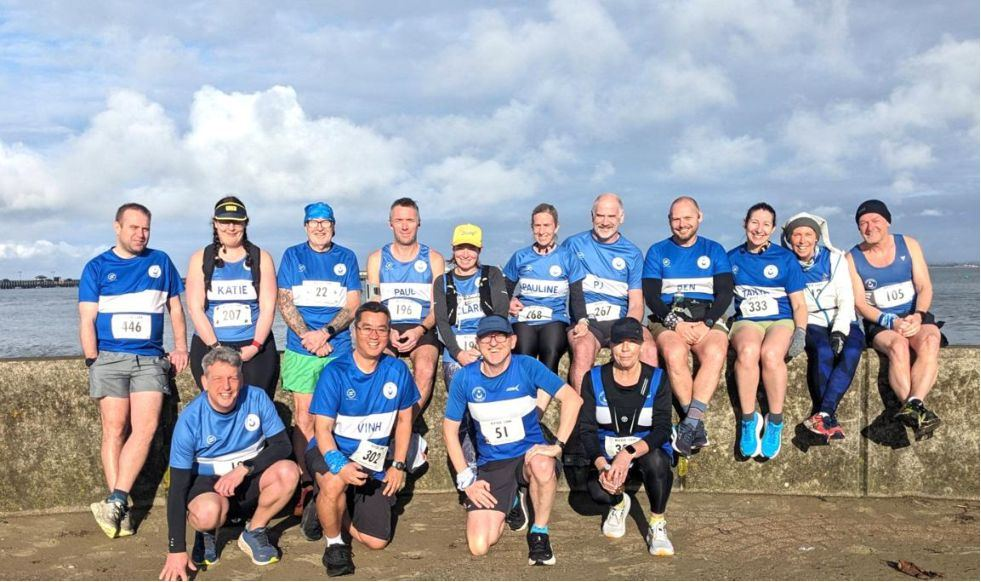
Of particular note was the climb up to the top of the caravan park, with the race photographer at the summit, ready to capture our faces, bright red with exertion. By this time, a dreary drizzle had descended, the kind that seeps into every nook and cranny of your clothing, yet keeps your temperature nicely under control. One final steep descent into Seaview was followed by a reasonably flat final 3 kilometres, loosely following the shoreline, to the finish, to the encouragement of the support crew and earlier finishers. By this time, the rain was falling more earnestly, as though it decided enough was enough, and with the large medal claimed, we stood and cheered in the last few runners, before decamping up the hill (yes, another one) to Wetherspoons.
Much food and drink was consumed, an opportunity to spend time with old friends, and to make new ones, before heading back to the ferry terminal, in what was later described as torrential conditions.
Congratulations to:- Lewis Taft who was13th overall, Kirsty Whitton who was first in her age category, and Pete Arnold, who saw an improvement over last year’s time of over 13 minutes. Grateful thanks must go to Pete Birch for organising the transport, and accommodating all the special requests. . So – who’s looking forward to next year???
From Edition 30: Spring 2026
Bourne Woods Cross Country by Sue Clarke
Race 4 of the Southern Cross Country League took us to Bourne Woods, hosted by Farnham Running Club. We set off from Portsmouth in very rainy weather, with more than a little trepidation about how muddy the course might be. Having run this fixture before, we already knew to expect hills - plenty of them - and there was also some quiet concern about whether the parking field might turn into a quagmire!
Thankfully, by the time we arrived the rain was easing and the parking field was nicely compacted - no bog- rescue required. We pitched the Portsmouth Joggers tent with some concern about getting it down again (always an adventure in itself… those who know, know - and if you don’t, come along to a cross-country race and join in the fun of getting it back down again!).
A small but hardy group of Joggers lined up at the start - enough for a men’s team, though sadly only two ladies this time, so not enough to field a women’s team. The course itself turned out to be far less muddy than anticipated. In fact, some of us picked up more mud at Portsmouth Lakeside parkrun the day before! What it lacked in mud, however, it more than made up for in hills. It was a proper leg-burner, and several of us had forgotten quite how relentless those climbs are.
That said, everyone finished with smiles (and suitably tired legs), and there was a well-earned reward of cake afterwards - an essential part of any cross-country experience.
We headed back to Portsmouth feeling muddy, hilly-humbled, and very pleased with ourselves.
From Edition 30: Spring 2026
The Malta Story: 2026 Version by Steven Wooldridge
So the PJC does Malta story actually started in 2013/4, and we have had hundreds of Joggers travelling ever since then (apart from the Covid years). To sum up the trip (though please keep reading!). Its like an HRRL or league race (or a Parkrun takeover), but extended over several days. Amazing team spirit, support for all, and a great break, mostly in the sunshine! Fast forward to Wednesday 18th February 2026, the first of the PJC gang (me!) has landed in Malta, looking resplendent in my PJC on Tour, Malta Marathon 2026 edition jacket! Over the next few days, I will be joined by around 16 more (runners and supporters).
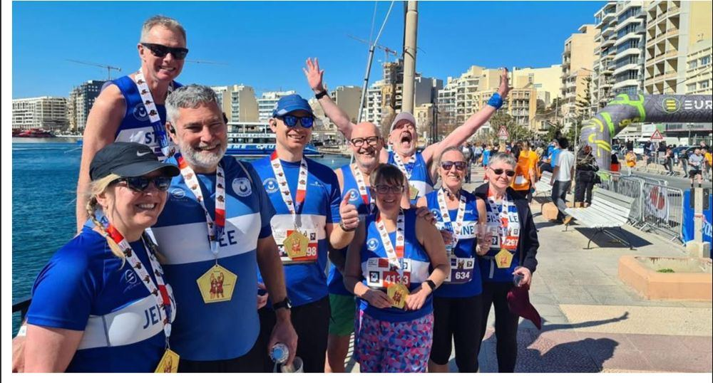
That’s the beauty of this trip, book your own flights to suit (Air Malta, BA or EasyJet), I used BA going out and EJ coming back as the times suited), book your own accommodation to suit your budget etc… And I have to admit it was so nice to leave behind a very soggy Engalnd and sample some sunshine (and amazing ice creams!). Travel and Accomodation. Public transport (buses and ferries to and from Valetta) are regular, and cheap (£2 most journeys, £3 for the airport bus and the ferries, though returns and multi use tickets reduce those costs). We all stay in Sliema, which has loads of hotels and apartments, most quite cheap, unless you fancy 5 stars!! Plus loads of places to eat, drink, buy ice cream, and a decent array of shops if that’s what you want to do! The Races.
Choice of Marathon, Half or Walkathon, which is actually the Half but with less pressure!! There is a cut off, but from my vantage point of my hotel balcony overlooking the finish, no-one actually did get timed out. They say you have 5hrs for the marathon, and 3 hours 45 mins for the half and walkathon. In reality, add another 45 mins to those times, as they kept the finish line open for best part of an extra hour. And same in 2025, so it wasn’t just a one off thing. Both routes start in M’dina, the old capital and on top of a hill. There are buses organised from Sliema to get everyone to the start (not free, but only £5), which is great, and lovely kit bags to take your spare clobber back to the finish in Sliema.
It’s a fast course, with the start being high up, then overall its 600 feet downhill! The Half really is downhill, the full has a few lumps in the extra 13.1 miles of loops, about 700 up (and 1300 feet down therefore). We will gloss over the few little hills near the end of course Numbers? This year was their biggest ever, with 1300 in the marathon, and 3 times that number in the half. The PJC split was 4-8 in that respect. The marathoners start 90 mins ahead of the halfers, and the routes merge with 10 miles to go, and I must admit it was a welcome sight to join the half marathon runners, plus of course seeing a few fellow Joggers (more than once due to a switchback on the route).
Start times are early to beat the heat, which works but I must admit getting up at 3.30 was a bit of a shock to the system! Best advice, eat breakfast the night before, and set your alarm!! Note, there is also a 5k. Its also run on the Sunday morning, it’s something new started last year. Starts and finishes in Sliema, think Lakeside Parkrun in terms of numbers and spread of finish times. PJC Traditions. We are developing a few traditions now over the last couple of years. Saturday Parkrun. Well, there isn’t actually a parkrun in Malta, but we do one anyway!! We run as a group, in club colours, (well, some of us), at 9.00 Saturday. PJ gave the race briefing
Valetta Gun Salute at Noon Saturday. This does take place other days too, but quite a few jump on the ferry to watch this.
Post race prosecco. Helped (again) by the sunny weather on the Sunday, we all stood by the finish cheering in our clubmates, drinking a few bubbles, and generally dissecting our various race experiences!
Post race team meal. We book a team meal on the Sunday evening. As consummate professionals, we have of course all abstained from sampling the local beer (CISK) and happy hour cocktails pre-race, so now is our chance..! Several of us meet up for meals and/or drinks in the evenings too, and we also share ideas on day trips, sightseeing etc, so some joint trips and entertainment if you want. Medals and Awards. Last year’s medal was huge, but it was their 40th, so a bit special. Except, this year’s was even better, and bigger! Nice finishers t shirt too, and free race photos to download. And there are awards – over the years, Joggers have collected quite a few. Quite impressive, by a stroke of luck I managed to get 2nd place in Age Group, and get a pretty large trophy – you should see the size of the 1st place!
Such a great time, the race almost becomes incidental, though hats off to Pete Arnold and Joy Barker, who both got PB’s in the Half, and Jackie Nicholson, who finished her first marathon (automatic PB!). If you know those 3, it was a reflection of just how hard they had trained for this, and so well deserved.
From Edition 30: Spring 2026
2025
Great South Run 2025 by Scott Andrews
After an enforced year’s hiatus, the Great South Run was back, and having completed 2023 and 2022 in around 1hr33m, I was hoping this year to break the 1hr30m barrier. I had taken part in the Pace Cadets’ targeted training, and this had gone exceptionally well, with a preparatory 10K in London 3 weeks earlier being bang on target pace. I’d proven to myself I could run the distance. I’d proven that I could run at the required pace. Could I combine the two? Event day dawned, and was exactly as the forecast had predicted – cloudy but dry. Sadly that was only at 6:00am, the forecast for the time of the actual run was looking a lot wetter and a lot windier.
As start time approached, PJC photos were taken, I dropped my baggage in the baggage drop marquee, and headed out for a warm-up jog with Jason Lovibond alongside me, and then into the start pen. As we moved forward into Avenue de Caen, the first few droplets of rain fell. Little did we know…. And then I crossed the line with thousands of us, simultaneously pressing the Start button on our watches. Jason disappeared into the distance, and I settled into my pace. The first of the myriad friendly faces appeared barely a kilometre in, at the first marshal station, with Pete Birch in front and my wife Rachel behind.
Pete and I high-fived, and he yelled to Rachel that I was just coming – she couldn’t hear that of course, but I did imagine the other runners around me wondering why I deserved such special treatment.
At 5km, I was at 27mins, well under the required pace, and feeling strong. Plenty more friendly faces cheered us through the first water station, and whilst the pace had started to slow a little, I still felt strong, and at the halfway point, 44mins had elapsed, so I was still on target. And then it hit me, the headwind, that is. As I rounded the corner by the Queens Hotel, a strong wind was blowing in the wrong direction, and I realised that 3 miles of this and the rain was going to make life difficult. Through the second water station, with more cheers from friendly faces, there was a brief respite going past the Marine Barracks, then more wind along Henderson Road. Coming round on to the Seafront, with 3km to go, a glance at my watch told me that, barring a disaster, a PB was doable, but that 90minute barrier was in doubt. I tried to pick my pace up, and to an extent, succeeded.
As I hit the 400m board, it was now or now or never – if I were to stand any chance of beating 90mins, I had to go. And go now. I put everything I had into that final sprint. And then I put some more. Every stride, every breath, every muscle fibre, every red blood cell was propelling me closer to the finish. I couldn’t have done more.
And me? Meh, there’s always next year
From Edition 29: Winter 2025
Volunteering at the Great South Run by Sue Clarke
An early start for the Saturday of the Great South Run! At 6.45am, Sue and Steve Hyson, Tony Quinn and I set off for Southsea Common to meet the rest of the OHC volunteers.- though not without a few laughs on the way as we somehow managed to get lost trying to find our way into the car park (yes we live here, and yes, we still got it wrong). We eventually made it to “Southsea Castle” for the volunteer meet-up, where we were warmly welcomed and very well looked after. Volunteers were treated to a packed lunch from Greggs, a volunteer T-shirt, and plenty of good humoured banter to kick-start the morning.
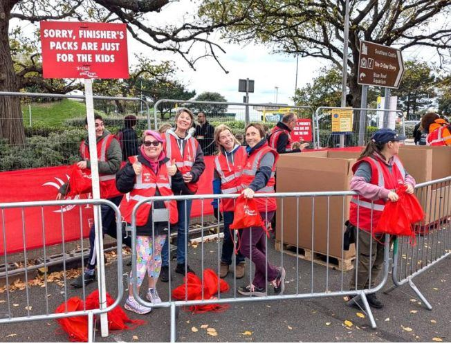
Our first task was at the finish line of the 5k races, where we handed out goodie bags to the runner – a great way to soak up the excitement and see all those happy faces crossing the line. But the real highlight came later with the children’s races. Handing out goodie bags to all the little ones was an absolute joy – pure cuteness overload! It was lovely to see so many proud parents, including lots of PJC’ers jogging alongside their kids and grandkids as they finished their races. Volunteering at the 5k and children’s events is such a rewarding experience, and I’d recommend it to anyone thinking about getting involved next year. It’s a brilliant way to be part of the weekend’s buzz – and it set me up perfectly for running the 10-mile event on Sunday (which is another story
From Edition 29: Winter 2025
HRRL: New Forest 10 by Katie Hall
With only a week recovery after running the Great South Run I was a bit apprehensive at how tired my legs would feel. As I ran 8 HRRL races last season I had my new hoodie which I have to admit gave me a confidence boost wearing it. I got a lift to the car share with Tony Q with a most needed pit stop to Starbucks first. From the car share we headed to the New Forest and it felt easier with the parking compared to last year. I collected my race number and got the usual nerves before a race, I think also due to the fact I did not enjoy this race last year and felt it was a real struggle to get round.
There had been lots of discussion over what choice of footwear - trail or road, I settled for road deciding that I had ran 10 miles in them previously where I’ve only ran shorter distances in my trail so opted for comfort. Team photos taken and then everyone lined up at the start - I was going to “Jeff” with Tony Q and when the starting horn went off - off we set. A few muddy puddles to navigate round the first bend. After the first couple of miles I changed my mind about jeffing and stuck to my comfortable running pace. The scenery and views didn’t disappoint and were absolutely stunning.
Lots of walkers also enjoyed the glorious weather, with many cheering us runners on. Near mile 8 (I think) I came across three horses close to the track but they didn’t even look up from eating as I went past, I did manage to snap a picture of one. This was the same horse that was also mistaken for a bear by Jo - I’m sure that made her run a bit faster for her amazing PB. Also the same horses that nearly flattened Paul G! Round to the finish line and I am so chuffed I had enough in the tank for a sprint finish and a lovely 15 minute course PB!
I also won a spot prize of a water bottle and got a banana - my favourite post race snack. I would call that a very successful run! The team did absolutely amazingly as always and some exceptional efforts and PBs including Richard Clark-Lyon’s - 10 mile PB in under 1hour 10minutes! Sue Clarke - course PB by 6 minutes Pete Birch - course PB by 5 minutes Jo Thompson - 10 mile PB and 4 mins faster than GSR Lewis Clarke - course PB 1.10.53 Jane Nockerman - course PB by 8 minutes Tony Quinn - course PB by 25.24 minutes!!!! Teresa - course PB
From Edition 29: Winter 2025
Cross Country: Event One by Ben Thompson
Sunday the 2nd was the first cross country run. Jo and I did this along with a large contingent of Joggers, too many here for me to remember. George wasn't even going to show up, but he arrived 10 mins before the start It was a 5 mile run through the lovely countryside. I took my usual place at the back of the group and set off at a Jeff of 30/90 ratio. Obviously, I went THROUGH the puddles like a 5 year old. Oh, this is nice, small hills, a bit of downhill. Hang on, what this??? A HILL!! A hill that seemed to go on for ever and we had to do it twice.
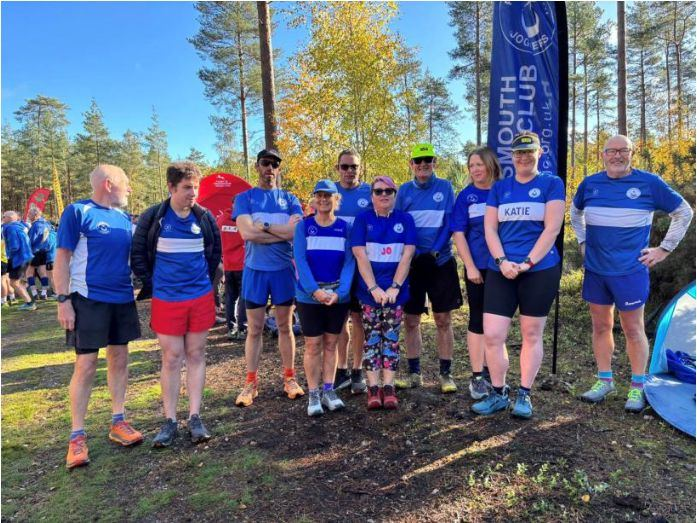
More puddles were splashed through and conversations were had with the other runners. Then, the nice trail ended and we went into the woods. Bears were seen. Once I had fought off a bear attack (that's my excuse for being slow and I'm sticking to it) the river crossing was a welcome distraction. The final bend was welcome, but then, straight in to a uphill. This isn't cricket. As the mountain flattened out, there was a lovely straight and in the distance, a sea of blue and white as everyone was waiting until the last runner was in. Of course, there were right by a puddle that identified as a lake and with the shouts of PUDDLE, PUDDLE, PUDDLE I went straight through the middle and crossed the line with wet feet in a time of 59.55.
I wanted to be under the hour, so mission accomplished, but only just. Cake was provided by Portsmouth Triathletes in exchange for me taking a team photo. Back to the car (chauffeur Rich Boakes was on driving duties) shoes were changed and socks were wrung out and them home for a nice warm shower.
From Edition 29: Winter 2025
Wendover Woods by Russ Tullett
Wendover Woods is a 50 mile race that is 5x10 mile loops with 10,000 ft of ascent. After being told, after an MRI scan, I had arthritis in my right knee where I am bone on bone I have lowered my mileage. I have looked at races that have less mileage and hopefully achievable. I entered this race on the chance I could do centurions 50 mile slam next year, which is their 4x 50mile races. This race is the last in the series and the hardest. I had a mixed lead up to the race with being ill on my big training weekend and not being able to do it.
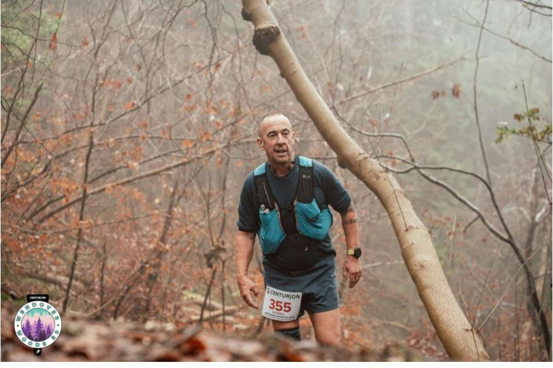
But was good enough and well enough to be on the start line. Race day came and I had a plan 2hrs 30 a loop and to assess my knee on each loop to be able to continue. The race started and I felt fine and managed the first loop 10 miles and 2000ft of ascent with little pain in 2.07. Went straight out on the second loop where the pain in my knee became more heightened but again finished the loop in 2.20 with another 2000ft of ascent. Stopping at the checkpoint to fill my bottles the pain in my knee became more intense but I was able to go out onto the 3rd loop.
The first down-hill told me there is no way I would make another 10 miles let alone 30 my knee pain was now 8/10. They like you to drop at the end of each loop if you’re going to drop. I wasn't going to make another 9.5 miles. Sadly I walked back to the checkpoint and pulled out. I found being physically and mentally fit and not being able to continue very frustrating. I now need to rethink my running on what I can do and what is now achievable. Life isn't about waiting for the storm to pass it’s about learning how to dance in the rain. Wendover Woods is an incredible course and anyone wanting to challenge themselves for 50 miles and 10,000 ft of ascent with a 15hr cut off would be a great achievement.
From Edition 29: Winter 2025
PJC Remembrance Run by Scott Andrews
An unusually mild evening saw a large group of Joggers meet at The George Inn, at the top of Portsdown Hill for the annual Remembrance Run.
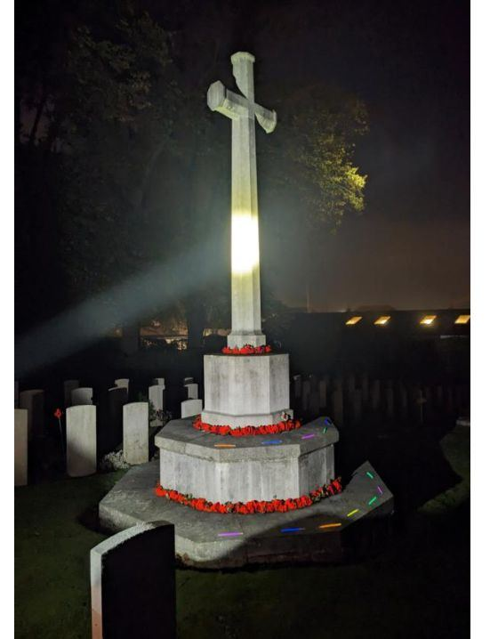
We made our way across the road to Christ Church Widley, and entered the graveyard – a path marked with glow sticks guided us to the rear of the graveyard, where Tony Conway led proceedings.
Christ Church is an official military cemetery, overseen by the Commonwealth War Graves Commission, with 167 graves of victims from both World Wars. Tony recounted the details of some of those lying in rest here.
The Last Post and an impeccably observed two minutes of silence saw PJC and all those present honour the sacrifice made by these ordinary people, performing extraordinary actions, to ensure that we can enjoy the freedoms we take for granted.
Following the conclusion of our poignant tribute, we split into our various groups, and set off on our runs. My group, Pace Cadets, headed off on an undulating 6km route, down the back of the hill to Purbrook, along to Crookhorn, past South Downs College, along the hilltop, and finished back at The George Inn, for some liquid refreshments.
With so many sweaty bodies arriving in a short time, it must have been a little unpleasant for the other patrons, but we didn’t notice!
Huge thanks must go to Tony Conway, whose knowledge of, and passion for the subject is clear to us all.
From Edition 29: Winter 2025
Achieving Your Goals by Gina Ledger
Are you struggling to see how you can achieve something big? My advice… Take a step towards it and just keep doing that. Don’t think about it. Break it down into segments as you are doing it and keep going. My obstacle… I didn’t understand what was going on and I did everything to heal. I have been trying to find answers for the last 6 years. So again, not for the first time, enough was enough. This time I booked a private ultrasound scan and MRI. I ditched my last few races for the year. Not the first time I have done this. None of it mattered. The results… The ultrasound and MRI themselves didn’t actually tell me much more than I already knew.
In the past physios had made their best guess at hip bursitis or gluteal tendinitis. I already knew I had a hip impingement from a previous X-Ray I kept pushing with the NHS but I was left in the dark with no follow-up or information as to what this was and why Ihad it. I already strengthen my hips and glutes, well, my whole body. I give myself the rest and healing I need. Recovery is just as important as training. I know so well how to look after myself. Before the ultrasound scan I had a discussion and some physiotherapy diagnostics to try and identify what was going on, then after my ultrasound scan I was advised I have a hip impingement, secondary to likely hip dysplasia.
…Hip Dysplasia! That was new. Not one person had come up with this before.I mean I was healing myself so many times over but it just kept coming back. It was always there, in the background. I just couldn’t make it completely disappear. It was always so close, but never completely right. If I had this before my children then it was there unnoticeable. I have a strong feeling that both of my pregnancies presented the problem or made things a lot worse. I mean I had to have 2 caesarean- section births, so maybe my pelvis shape was a bit different. I recall that digging in the garden presented me with some issues a few years back too.
Ican’t exactly remember when this started and if it was pre or post pregnancy with my first child, but I remember stopping it because it just didn’t feel good. I get chronic pain in my hip which flares up every now and again. But I think this has a very big connection with some personal trauma I have been going through the last few years. I see the patterns so I can identify with this. I’m very good at releasing emotions from my body and will fight so well to do this, because I do not want to hold any trauma inside of the body. It is unhealthy and crying amongst other things really is very good for you.
Some minor things came up on the MRI report. Swelling of the soft tissues adjacent to the gluteal tendons insertion (Gluteal insertional parienthesopathy) and a trace of hip joint diffusion. I could feel a little more at peace now. I had a bit more understanding. My Battles… Over the last 6 years Running and Triathlon has been a struggle for me. In this time I have run many miles and races. Also, in this time I have had a 1-year break and a 4-month break away from running. Currently I have not run or cycled in 3 months. I love racing and the challenge of endurance, but racing and endurance also just seem to exacerbate things.
I’ve run 7 marathons total in these last 6 years, (including 2 Ultra-marathons). For some of these the battle was harder than you would ever imagine and had nothing to do with my general level of fitness or capabilities. In the last year I have achieved a sub 4-hour PB marathon and a 1.45 PB half marathon. How I managed to achieve that marathon and keep at bay any issues with my leg that wanted to emerge was honestly a miracle. I think with the race being in the winter and carrying out regular cold therapy in the months before, this probably helped a lot!! My leg deteriorated during that half marathon and somehow I pushed through.
I managed a local sprint and standard triathlon earlier in the year. Also Eastbourne standard distance triathlon. That was a tough one! In the previous year I achieved my first couple of Sprint and Standard distance triathlons and my first Middle Distance Ironman, Weymouth 70.3. Of course, I knew there was more potential than this in me. It is heartbreaking when you cannot achieve your full potential. When you feel pushed away from something you want. I would do all of it again and more. My mind-set is strong. I have all the tools in the box for my wellness. Maybe running and triathlon were just building blocks, guiding me to my true path.
I cried so many tears but I prepared myself for this and accepted it. I had no regrets. There is always beauty and reward, opportunity in the things that you can let go of. I could focus on my career. I was not giving up. I was changing and adapting. My advice?… Go and do what you can with what you have got. You do not know when that could be taken away from you. Feel privileged for what your body allows you to do. I will do what I can with what I have. And even if the odds might be against me, I will never give up trying to fix my body. I have not given up.
From Edition 29: Winter 2025
The Rise and Fall of the Summer C25K Class of 2025 by Graeme Swain
Most of us rose to the challenge after receiving brilliant support from Tony, Sue C, Sue H and other PJC members. For some, if not all of us, it was really hard and not helped by the heatwave we experienced just as the distances increased considerably. Our leaders led from the front, the back and online and everyone appreciated that encouragement. Sarah said, “My whole experience was positive” and “I didn't think I'd be able to do it …..brilliant!” The feedback was all positive about the course, the support and the final graduation run. It was particularly good that other members of PJC came along to show their support to the runners and to make them feel part of the PJC family.
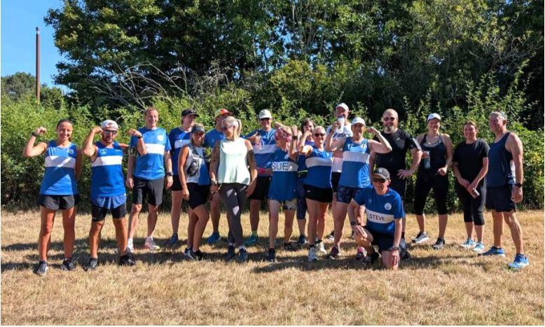
The C25K class was a real mix of ages and background. Runners ranged from their thirties up to seventy and from people with no running experience to runners recovering from injury and illness. The title refers to the rise and fall of members of the group. Sadly we had several people who for whatever reason did not get to run the 5K and maybe the very hot weather was a factor. Sara-Jayne reported that she hit a wall at week 8 and that this affected her confidence and led to her having to regroup and go back to week 6. There can be a delayed graduation run! We had other fallers who fell when running; too many for a small group.
Tony, our leader, was first to fall on an unrelated run and he broke several ribs and was off running as a result. Fortunately Sue C and Sue H took responsibility for us and when Sue H also fell her injury wasn't serious. Before that Millie had a really bad fall during one of our midweek runs and was ruled out of running and any high impact sports for 6-8 weeks. It meant that Millie missed the graduation run after completing all the training up to the beginning of July. Last but not least of the fallers was Graeme who fell at around the 4K mark on the graduation run and sprained his ankle.
The conclusion of any risk assessment process has to be to advise people to look where they are going particularly when tired or running as part of a group! Others in the group stayed upright and did really well. Garry was coming back from injury and he ended up coasting to the 5k distance while at the same time encouraging and cajoling John to keep running and to crack the 5K. Great teamwork there. Similarly, Sarah and Hayley ran together a lot of the time with Hayley recovering from injury and supporting Sarah who she had encouraged to join the group. Michelle, Sophie and Becca seemed to take the training in their stride (despite looking very hot at times) and, along with John, are now running with Next Steps.
Well done to them and everyone else who is now running regularly with PJC. Much of the above is about the new runners on the C25K but we all want to thank Tony, Sue C, Sue H and other experienced PJC runners who supported and encouraged so much and got us to the finish. We were made to feel part of the PJC family !
From Edition 28: Autumn 2025
Tour of the Shore by Sue Hyson
On Saturday 12th July 5 teams of 5 runners from PJC took part in the inaugural Itchen Spitfires Tour of the Shore event. From 8am to 8pm we tackled the challenging event format: 4.1 mile laps run in relay style, all under the blazing 30°C summer sun. Despite the heat, spirits stayed high. There was fantastic camaraderie among teammates, with constant cheering for each other—and just as much encouragement for every other runner out on the course. The shared effort and positive energy created a great atmosphere that kept everyone smiling, even in the hottest parts of the day. Every finisher was rewarded with a lovely medal as a memento of the day—a fitting symbol of both personal achievement and team spirit. Above all, it was great fun from start to finish, leaving everyone already looking forward to next year's event.
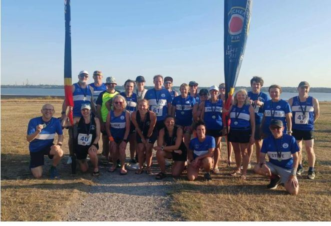
From Edition 28: Autumn 2025
Overton 5 Race Report by Ainsley Rood
A swarm of TWENTY-NINE! Portsmouth Joggers made their way up the M3 to Overton for the 2nd Race in the 25/26 HRRL Season. The race organisers yet again booked unbroken skies whilst we assembled ready for the start. The word on everyone’s lips seemed to be… ‘hills‘, and to any newcomers, visions of the Himalayas may well have started to set in. The start was well organised with a speedy registration and bag drop before being marshalled to the starting field where the mood seemed positive with smiles all round. Earlier than previous years, at 10:30 (to the second) the gun went off and 523 runners of all team colours started running in the narrow country lane downhill….
But what goes down, must come back up and with that, between Mile 1 and Mile 2 the largest climb to get things going, from that point on there were 2 more ups, but 3 more downs. A surprise shower was welcome mid race which was enough to cool us down a little without dampening the spirits. I approached the finishing tunnel two thirds of the way through the pack which had the benefit of having a large group of Joggers cheering us on in.
No fewer than 7 course PB’s were broken; Richard Clark-Lyons (beating his 2017 record), Peter Birch (shaved 5 seconds), Paul Jeffrey (smashing 6mins of last years time!), Anthony Quinn (Jeffin‘ it beat his 2021 record by 8 seconds), Katie Hall, Sue Clarke & Alison Smith (smashing an amazing 4mins from her PB).
An additional 2 new commers setting PB’s; Kirsty Whitton (fastest lady) and Scott Andrews (with a distance PB).
Darren King has notified me that he achieved a PW by 5 mins – surprising given the heavy investment made in speedy trainers. Pete Cootes also claimed to have achieved a PW with 7mins per gin at the local distillery as he forgot his trainers. Micheal Rae, he didn’t enjoy the hills – but his entertainment at the start was first class, having announced his looks alone were responsible for the warmth as we gathered . Jo was creative with the no headphones ruling and provided a ‘hills‘-based soundtrack for those around her with a speaker. For me, I was personally very happy to have taken 8 seconds off my time last year… I’d prepared myself for a slower run, but dreamt of a sub-45, which I achieved by a mere 1.4 seconds!
A shout out to Steven Wooldridge, he provided some rather tasty cakes at the finish. I’m not sure if I was more impressed by the cakes or the slightly over engineered two-tiered transportation system.
Congratulations Joggers a fantastic day’s running from everyone! Apologies to anyone missed as I’m sure there may have been more!
From Edition 28: Autumn 2025
All Club Run, 4th September by Kirsty Whitton
On 4th September, Portsmouth Joggers came together at the D-Day Museum in Southsea for our latest All Club Run!
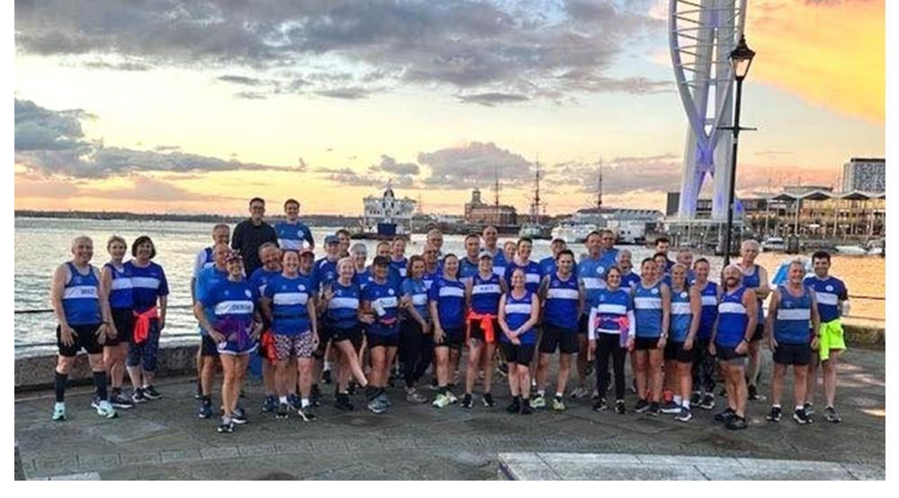
It was great to see so many members from across the club taking part, with groups mixing together and plenty of conversation along the way. For me, it was my first All Club Run, and it really showed the welcoming and inclusive spirit of PJC - no matter your pace or experience, everyone’s part of the same team.
After a quick group photo (with drone footage) now on Facebook! we set off on a relaxed three mile route to Old Portsmouth. Along the way we enjoyed a beautiful sunset across the water, waved to a Britannia ferry from the City Wall, and stopped for another photo in front of the Spinnaker Tower - thanks to some visiting tourists who kindly captured the moment.
Since joining the club earlier this year, I’ve loved how PJC makes everyone feel part of the group - it’s supportive, committed, and always a good laugh. I’ve really appreciated the encouragement and community feel that the evening really highlighted. A big thank you to Tony for organising!
From Edition 28: Autumn 2025
Winter's End by Ali Smith
So, on Saturday 22nd March Kirsten, Bob and I took on the challenge of the Winter’s End marathon, which turned out to be Kirsten’s 150th marathon!
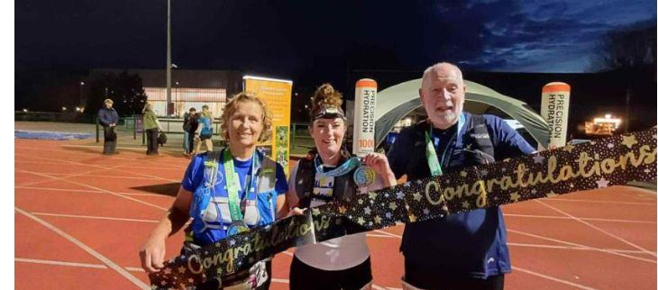
The day started off by driving to Winchester and boarding a double decker bus which took us to the start at Queen Elizabeth Country Park. The start was a bit hideous as we had to start at the bottom of Butser Hill, boy what a start that was.
Almost as bad as Beachy Head!
The course was very well marked out, with well stocked aid stations along the way. It was a stunning course which consisted of various other steep inclines, I wanted to quit at 11 miles and I’m not one to not finish something. I overcame the difficulties with the help and support of Kirsten and Bob and then started to enjoy the marathon again. The views were scenic and the medal we received was amazing. Overall a very enjoyable experience and well done to Kirsten on completing her 150th marathon.
From Edition 27: Summer 2025
Thames Ring 250 by Sandra Tullett
Thames Ring 250 is a 250 mile running endurance event that starts at Goring-on-Thames, along the Thames Path, moving onto the Grand Union Canal and Oxford Canals and finally returning to the Thames Path and back to Goring.
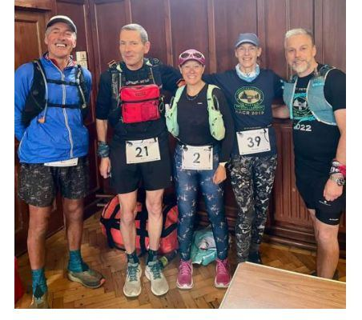
There are check points approximately every 25 miles where you can get food and aid and access to your own drop back. Support is only allowed at these check points. Other than this, you are entirely self-sufficient but are free to go into shops/pubs to buy things. Due to a few long standing diversions the distance is now stated as 256 miles but it’s probably a few miles more!
I first ran this race in 2017 when I was 52 having no idea what I was letting myself in for, but I somehow managed to survive the event and grabbed my first Thames Ring medal. I said I would never do the event again because it had provided some very special memories and I felt that if I did it again it wouldn’t be the same and might spoil those precious memories.
7 years on in 2024 I changed my mind and decided to have another go. I was diagnosed with breast cancer in November 2017 and wrote a book called ‘Cancer Diaries of an Ultra runner‘ describing how I used running to help me cope with going through treatment. My book was published in 2024 and I had written in it ‘Do the things that scare you a bit, or a lot. Look back with no regrets and live your life. Don’t let it pass you by thinking I wish I had done that, do it now.‘ so I decided to practice what I preached and promptly entered Thames Ring again, this time with the added pressure of doing it for charity.
In 2024 I was timed out at 188 miles at Check point 7, but I still managed to raise over £1500 for our local Queen Alexandra Hospitals‘ mammography department. A way to say thank you for everything they had done for me. Special thanks also to PJC for donating £250 towards this total.
I then quickly decided that it would be a good idea to enter again in 2025 to celebrate reaching 60 years old! Many times, over the following months, I questioned the sanity of my decision but as the race drew closer I began to look forward to the prospect of having another go. I knew where I had gone wrong last time so I would make sure that I wouldn’t make those mistakes this time. However, with such a long event, there were plenty of other different mistakes that I could make along the way!
So, at 10am on Wednesday 23rd April I began my third attempt at the Thames Ring 250.
The first 29 miles to check point 1 passed quickly. There were plenty of other runners still around to chat with. I stopped at a shop in Shiplake at 17 miles for a Magnum ice cream which went down well and lifted my spirits. I arrived at Check Point 1 at Hurley in just after 51/2 hours. I topped up my food and drink ready for the next section, changed my socks (which I did at every check point) and picked up an extra top as I knew it would be dark and getting cooler by the time I reached the next check point. In the early evening, I stopped off in Windsor at a kebab shop to buy a portion of chips and a can of coke. I did this the previous year. The chips went down far better this year.
Everything was so far going to plan but this was essentially the easy bit. I knew it would get much harder to stick to a plan further into the race as I grew more tired. I reached Check point 2 at Chertsey at 10pm, put on a thicker jacket and put a heat pack in my bag ready to put on my back if I began to feel too cold at any point. I also picked up an extra water bottle and put hot water in it and stuffed it down my jacket. This would provide me with extra warmth and then later some additional fluid as I knew there would be limited water options on the next leg as it was now late at night and I wouldn’t reach the next checkpoint until the next morning.
I ate some warm cheesy beans from the check point and set of for my first overnight section along the Thames, through Walton, Hampton Court, Teddington and Richmond. Previously, I had coped with the limited water on this leg but this year I felt more thirsty. There were not too many late night revellers around but I did stop and ask a group of youths if they had any suggestions for where I could finding any drinks. I did not feel scared talking to them. I’ve been through this before, and they are more likely to find the sight of me a little odd. Their only option was a kebab shop off route that I wasn’t prepared to go and find.
A few miles further along the route I met another runner, Rob, who was beginning to struggle. We agreed to run together to help us get through the night and I suggested a 2 minute run , 2 minute walk strategy which seemed to work really well. Running together helped us both. I needed to go to the toilet, and we stopped at Buccleigh gardens in Richmond in the hope of finding the public toilets still open. Unfortunately, they were closed but we were absolutely chuffed to find a water fountain available at the front of the building that I wasn’t previously aware of. This really cheered us both up.
We then stopped at a hotel at 2:30am to see if we could use their toilet. I would not have done this myself but Rob suggested it and it ended up being a great idea. The concierge was happy to open the doors for us and let us use their toilets. It was such a pleasure to be able to wash my hands and face with soap and water. We felt like we’d won the lottery having found both extra water and a toilet in a posh hotel.
We then continued through Syon Park, leaving the Thames Path and promptly joined the beginning of the Grand Union Canal. At this point I was struggling to eat and drink much. This often happens to me if I run too fast for my stomach to cope with and as we had been run/walking throughout the night I was beginning to tire considerably with the lack of food. I began to feel quite negative. I felt that my pace was too slow for Rob, and I knew that he could go much faster if he wasn’t with me. Running with him felt like more pressure to me and I felt that I needed to walk a bit more to give my stomach some time to recover so that I could eat more.
I was not going to manage the next 3 days and nights if I didn’t eat enough. I suggested that Rob go ahead, and I said I would probably see him at Yiewsley (check point 3). In reality, I expected that I would never see him again in the race as I expected that he would progressively get further and further ahead of me. I had originally planned to have only a quick stop at Yiewsley and use the following check point at Berkhamstead to sleep, but you can never really plan when exactly to sleep. It may even be better to sleep outside of a check point at the point that you feel tired.
I decided to have 45 minutes sleep in one of the tents at Yiewsley. I did not sleep very much but it was better than nothing. I probably needed to use ear plugs to make it easier for me to sleep. I had some food and went on my way. It had been a cold night of about 5 degrees and in the early hours it was still very cold, so I had to keep all my thicker clothes on me even though I knew that in a few hours I would no longer need them as the sun came up. I would just have to carry them with me.
I was still finding it difficult to eat and walked much of the route from Check point 3 to Berkhamstead, in the hope that I would get my appetite back by slowing down. I had also developed a slight groin strain which prevented me from striding out when I walked and slowed me down further. I reached Berkhamstead mid-afternoon and did not stay long as I felt that the sleep at the previous check point was sufficient for now. The next leg was where I made a mistake in my choice of socks. I had thought that the next part of the route would be dry. However, I had forgotten there was a large area of standing mud in the first few miles.
I left the check point in normal socks which promptly got wet in the first few miles, and I had to continue to wear them for the next 20 mile developing a few blister along the way. On this part of the route my appetite came back and I could manage food again. I stopped at Tesco at Leighton Buzzard which was approximately 10 miles before CP5 at Milton Keynes. Here I bought some socks and a 4 pack of hot cross buns. From experience, I knew that the next 10 miles to Milton Keynes would feel like it went on for ever. The benefit of new socks and a couple of hot cross buns lifted my spirits here and I ran the majority of the 10 miles into Milton Keynes.
I was pleased to make it quickly through an area where I had got lost the previous year which was a bonus. The cut off at Milton Keynes is 1:30 on Friday morning. Last year I was being rushed out of here as I was closer to cut off. This time I was not quite so late and I had time for a lovely bacon sandwich and to sort out the few blisters that I now had on my feet. On reflection, I should have probably shut my eyes here and had a quick nap but it just didn’t occur to me. The issue with this was that as soon as I left the distraction of the check point and I was alone again I began to daydream and I found myself falling asleep on my feet and not focussing on the job at hand.
I also had to change my torch battery because I had forgotten to do this at the checkpoint. The early hours of the morning tended to be the worst time for me in terms of feeling sleepy. I looked at my tracker and noted that Anke, the eventual ladies winner, was close behind. I turned around to look behind me and I could see her torch not far behind. I decided to stop and wait until she caught me up and then walked along with her for a while chatting. Having company, I knew, would help to keep me awake. I walked and talked with her until daylight came. She was a lovely lady and when I finally felt that I could not keep up with her metronomic walking pace I wished her well and let her go ahead.
I made my way towards the next check point at Nether Heyford. As I got closer tiredness again got the better of me. The route comes off the canal at a particular bridge in order to reach the indoor check point. My frazzled brain could not comprehend what I was meant to be doing. At one point I just sat on a bridge in the sun wondering why I needed to go to the particular bridge number. Why couldn’t I just stay here where I was? I rang Russ, as I was confused, and he managed to convince me to keep going to the specific bridge number. Once I got to the check point my head would clear and I would forget that I needed to sleep.
I had some pizza here and sorted my feet and I was set on leaving as soon as I could because the next leg was where I had timed out the previous year and I became really focussed on getting to the next check point without taking any time to sleep. Anke had arrived here before me and was currently sleeping and managed a really good sleep here. I also found Rob sitting in Nether Heyford having dropped out here earlier. Looking back, I should have spoken to him and encouraged him to join me as he was not injured and we could have helped each other on the next leg.
I set off from Nether Heyford in good spirits. I had my higher power head torch and a really bright hand torch ready to take on the HS2 diversion near the end of this leg, determined not to get lost like I did last year. First, I had to get myself to Braunston. Again, the sleepiness washed over me and I would find myself waking up on the path wondering what I was doing. I had it in my head that I was walking with someone but instead I was on my own. Again, Anke caught me up and checked on me and was concerned about my lack of sleep.
We ran together for a while which helped wake me up and kept me going but eventually, I had to let her go ahead. I made a silly mistake of turning up the Grand Union Canal at Napton Junction. Something that I would never have done if I wasn’t so tired. I did realise quite quickly, however, and retraced my steps to continue along the Oxford canal. This next part has some of the worst canal paths, but the lack of recent rain meant that the paths were much better than the previous year. I ran as much as I could in the remaining daylight to try and reduce the amount of this trail that I would have to cover in darkness, but ultimately darkness fell and it became more difficult.
However, the worry about being timed our here meant I ran the majority of this path up to the HS2 tunnel and when I finally reached it I was over the moon. I got my large torch out and navigated the route so much better than the previous year. It was such a relief to get through this. This was my downfall last year. The next 4 miles to get to Fenny Compton then seemed to take forever - but it always does. When I finally reached the check point I was so happy to have made it this time. I had two bowls of soup here and sorted my feet and extra food for the next section.
This was an outdoor check point and I was the last person here but I still had a little time and again I really was really confused about where I was meant to go. I didn’t even think to look at my OS maps app which had the GPS set up on it. This would have helped guide me along the canal. Instead, I looked at my google maps and remembered that I needed to get to a place called ‘Copredy‘ which was along the Oxford canal and I put this as a walking route on my phone. This did not help me, however, to get past the first part of the route from Fenny Compton and I walked back and forth trying to work out which direction I was meant to be going and on what side of the canal.
Eventually, I did find the canal but at this point I was completely exhausted and confused. I was talking to people that were not there. I climbed up a bank looking for signs of life, although unlikely since it was about 3 or 4 in the morning. I climbed back down the bank and then somehow, halfway down it, I just fell into a deep sleep for at least an hour. When I woke up it was daylight. I walked down from the bank and could see the canal in front of me and suddenly everything made sense again. I felt so refreshed from the impromptu sleep that I then continued the rest of this leg feeling really positive and confident that I could make it to the next check point at Lower Heyford before the cut off despite having wasted a lot of time.
This leg was now all in daylight which was great. I went off route briefly to Banbury station, where I had stopped previously. I wanted to go to the toilet and buy a sandwich. The queue was long and I didn’t want to wait so I went to the front of the queue explained my situation and offered to pay the persons bill in the front of the queue if he let me add my sandwich to it. I then quickly continued on my way. I arrived at the next checkpoint at Lower Heyford with not much time to spare and the check point team were counting the minutes down for me, until I had to be out of the checkpoint.
This was not surprising since I had wasted so much time at the beginning of the leg. However, I was confident I could get to the next check point at Abingdon in time since the amount of time available to me was longer as the race takes into account the fact that people will slow down and need more sleep later on in the race. Unfortunately, this did not take into account the fact that I was now given details of two other diversions on the next part of the route that I had not been made aware of before the race. A member of the checkpoint team talked me through them and drew details on my map whilst they counted the minutes down and sorted myself out.
I now did not have an accurate gpx available for these diversions and would have to rely on my memory from what I was being told which would be challenging considering how tired I was. I was told that if I missed the first diversion I would reach a dead end and have to go back on myself. I left in fairly good spirits, however, the tiredness I was feeling meant that I had to have a few minutes sleep on the trail. The trip to Oxford went fairly smoothly. I had yet quick nap at Thrupp (at least I think that’s where it was!) by a building where I found some dog blankets left in a bag with a sign on it that were free for anyone who wanted them, so I borrowed them to have a sleep in.
They smelled a bit ‘doggy‘ but kept me warm. I then walked on until I reached the point where trail turned to decent path and I could run the four miles steadily into oxford. At this point it began to get dark and I checked my time. I was about 1 hour behind when I finished the race in 2017 so felt it was definitely a possibility for me to finish in time. At Oxford I stopped at a shop to buy a sandwich, a Magnum and a can of coke, which really helped. I then started the last 9 miles in the dark from Oxford to the checkpoint at Abingdon.
The first part was straight forward but I kept finding myself stopping in the middle of the path and waking up on my feet. I had to keep telling myself that I had noone with me that I needed to look after as I kept trying to talk to people around me and keep telling myself I just had to keep walking forward to Abingdon. This was fine until I reached the first diversion. This was where I hit a sign saying I could go no further – that was when I remembered that I had the diversion and now had to go back on myself. I really struggled to work out where I needed to go and, in the end, spoke to someone by phone at the Abingdon check point who talked me through some of the route.
I don’t know what I would have done without them, however I wasted a good hour getting through this part and then realised I was now very close to cut off. It was a really close call and when I reached the last field where I had been told to run diagonally across it as part of the second diversion. I was totally disorientated and frustrated as I could see my final few available minutes ebbing away. I was on the phone to the check point team again and I was clearly panicking as I was so concerned that I would miss the cut off. In the end after many failed attempts, I reached the metal fence that indicated that I had reached the play park in the middle of the field and I had to walk around this to get to the town.
Russ came out from the checkpoint to meet me. I looked at my watch and had only a few minutes left. I ran as hard as I could to get to the checkpoint, but it was further than I thought. Russ said I was sprinting as if at a 5k park run by this point. When I hit the checkpoint, I had exactly 3:30am showing on my phone which was the cut off time and I was only a few seconds over, but the checkpoint lead would not let me go any further and timed me out.
From Edition 27: Summer 2025
Salisbury HRRL Race Report by Steven Wooldridge
It’s 6.00 on an April Sunday morning. 23 alarms are beginning to go off as the PJC team awake to another League race, and the 26 runners begin their pre-race routine. Me – always a look outside to check the weather – its dry, the sun has already made an appearance, and the predicted sunny day looks spot on. Check the PJC message group just in case – but all looks good. There is a car share at 7.45, so I have around 90 minutes. In which to have a leisurely coffee, small breakfast, shower etc. and get my kit on/packed – always dressed in PJC tops/tracksuit bottoms (I have a lot of PJC kit accumulated over the years).
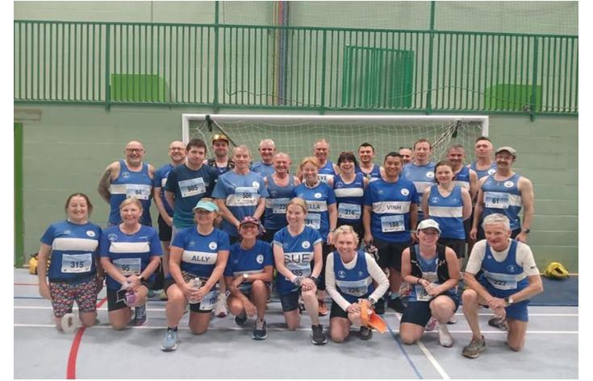
And then the short journey to Lakeside – 3 cars worth doing the car share, so nice chat before we divide ourselves up into suitable car loads, and we are off to Salisbury. Unsurprisingly at that time on a Sunday, it’s a good journey! This was my first Salisbury for 7 years – I was really surprised at this gap as I try and do this every year as its my Mum’s birthplace, and a lovely city, dominated by the cathedral spire. Short and picturesque walk to race HQ from the nominated car park, and then pre-race routine kicks in again. Number collection, find the rest of the PJC team, pin number on PJC vest, team picture.
In between, find time for a loo visit or 2, then warm up and stretch. Notable is the silent shock, even awe, at Lewis‘ new moustache and flat cap combo (more on that later), Bob just making it in time for the team photo as usual, and always nice to talk to fellow PJC runners from groups I don’t run with. Conversation is about race plans (always!), route advice for those doing it first time, and a catch up on a various fitness levels (or lack of), even a bit of non race chatter. Walk to the start, which is on the running track, decent warm up, more nervous chatter, and then we distribute ourselves in the start area.
This is roughly in pace order, with a couple of PJC blocks! And exactly on time, we are off, just 25m on the track, a bit of gravel, and then onto the course proper, which hasn’t changed in all the years I have done this race.
The first mile is always a bit of an overtake fest as runners who started too far back or forward sort themselves out, and then it settles down. I was going slightly faster than my plan A, but felt good so decided to revise my plan A! Dangerous possibly…. Salisbury AC’s organisation is, as always, excellent, from the cheery marshals to the 3 water stops, materialising exactly where the race instructions said they would be. Most welcome as we were bathed in glorious sun by now. The first half has a few lumps, nothing too bad, although a short sharp one at 5 miles. Just after 6 miles is the first testing hill.
Steep, and the road bends to the left, which combined with the hedgerow, means you can’t see too far ahead. Not being able to see the top of the hill makes it so much worse for some reason – although that top doesn’t take too long to arrive. And there is another short and not-quite-so-steep hill just before 8 miles. By this stage, I had caught a couple of PJC runners, friendly words of encouragement offered before our race strategies, planned or forced!, take us apart for now. I was feeling good still, playing my usual mental games of “if I keep X or Y pace going for the last 2 miles, I will get Plan A or Plan B time”.
Much to my surprise, I still had a bit left, so actually got faster in those nice and flat last 2 miles, including a lovely finish around the running track. This was enhanced by the lady on the PA, who was “spotting” the runners coming around the top bend, and giving everyone a shout out and encouragement over that last 100m. The finish is always a relief regardless of how well (or badly) you have done, nice to get the congratulations of other PJCs. Grab water (needed), Race t-shirt (needed, as I am down to my last 50 race t’s), banana and a yummy flapjack (to die for). More Joggers are finishing now, a good number with big smiles!
Post-race chatter is about how well we did, excuses made where needed!!, plus how we are doing in the quest for the hallowed HRRL mug (7 races needed), and the PJC mystery bonus (8 races needed). As this was race 8 out of 12, one or two already qualified, many still on course for their 7 or 8….. Then, led by Pete and Kate, most of us decamp to the “back straight”, about 50m from the finish, from where we can spot the rest of the Joggers approaching the track, and getting ready to cheer them in. Fuelled by the Clark’s lovely fruit cake (made by Sue I believe, served for sure by Richard).
Absolutely brilliant that most of our 26 strong team stayed together right until the last Jogger finished. Allie and Debbie finishing holding hands (aww), and the other Debbie (Pentland), just out of hospital, getting the biggest cheer of the day (well, there were more Joggers there by that time to cheer her home). Special mentions to Debbie, her enthusiasm for these races and the club in general is unbounded, and I know the fact that so many stayed was appreciated. Also, Lewis, fairly new to PJC, sporting that superb moustache, and snappy headwear, that was the talk of all of us.
Lewis has the opposite experience to Debbie, as he is the first Jogger home, so gets no support (yes, it’s a hard life!!), but again has embraced being a PJC runner in a big way. For once both Ben and Georgie Stait ran together (instead of alternating running/baby-sitting), and Ollie and Tony doing more restrained efforts ahead of Newport marathon a week later. Nice to see Richard L finish his first Salisbury, and yes you did go out too quick Richard!! We have all done that at some time or other. And as I said, many more personal achievements, if not PBs, mixed in with a few struggles.
From Edition 27: Summer 2025
Purbrook Ladies Five: A Marshal's View by Garry and Marilyn Batten
At this year’s Purbrook Ladies Five, Marilyn &I decided to have our first go at marshalling having previously marshalled on the Summer Cross Country. We arrived at the recreation ground around 8am, set up was in full swing, the finishing line was being prepared, and the club tent was up and busy starting to issue race numbers. We wandered over to the Cricket Club pavilion where we had a catch up with some of those taking part and then had a welcome cuppa and a bun in the clubhouse, Gary was doing a sterling job on refreshment duty. Having done a recce (yes, that is the correct spelling) previously on the course in the car, we knew roughly where our marshal post was, we again checked the position with Pete our lead marshal, he also issued us with lanyards that also had a useful map plus emergency contact information and high visibility tabards, at 8:30, Pete gave us a briefing which was very useful.
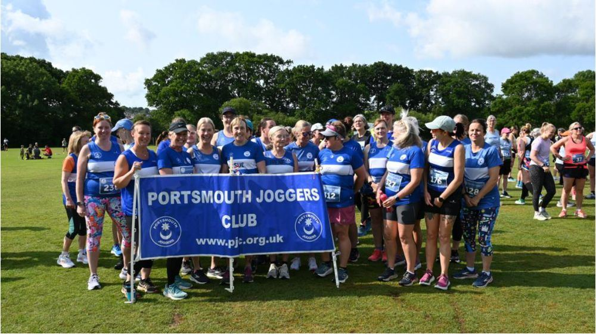
After a few more catch ups, we decided to drive off to our marshalling point (9) and set up (I had my flask of coffee). At point 9, Marilyn & I split up, as it was on a bend in the road, we decided to take both ends so we could control any traffic and other pedestrians to warn them of runners in the road (sadly some didn’t take any notice). Around just before 10am, the first runners came through, it was good to see Kate as the first of the PJC runners, I believe she finished 8th. As an added, I decided to add some music to my post and played Born to Run on loop to try any encourage those who were starting to flag.
I lost count at the amount of times I was asked if there were any more hills or are we nearly there yet! Finally, just before 11am, the last runner came through as did Emma and the event car, we followed soon after that. Arriving back at the Recreation ground, celebrations were in full swing, plenty of group photos being taken, not just those from PJC but by all the other clubs and individuals who had taken part, a thoroughly enjoyable few hours and it stayed dry. If anyone reading this has not marshalled at an event, we would highly recommend, its good fun, it giving something back as these events would not happen without the marshalling and set up teams.
Thank you Pete Birch for being a fantastic lead Marshall and everyone who organised the event, hopefully we will be back to support next year, if we are not out and about on our travels.
From Edition 27: Summer 2025
The C25K Class of 2025 by Graeme Swain
The class of 2025 is up and running and there are about 10 – 12 of us, plus leaders. It's now week 4 at the time of writing so we are running for a total of 16 minutes with short periods of walking to break this up. Everyone is getting round and our spirits are high. We have been told by Tony (group leader) and both Sues (other leaders) that we will achieve the 5k challenge and we now expect to.
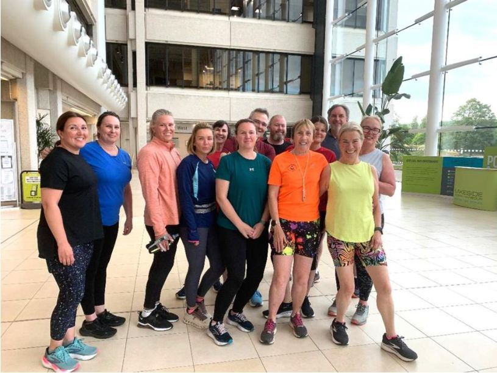
When asked why people joined the C25K group the answers were varied and included going for something previously seen as impossible, combating age and tiredness, joining a family member to do a charity run, getting fit, losing weight, an inexpensive way to exercise, getting support to exercise, redoing the programme after health issues and recovering from injury. It just shows what PJC can offer !
Feedback after four weeks of the C25K included reference to it being supportive, welcoming, a community, non- judgemental, friendly, awesome and good for mental health, That's pretty good !
It's been hard word work but rewarding and big thanks go to Tony, both Sues and the other regular joggers who have guided and supported us.
We look forward to getting us all to the finish line.
From Edition 27: Summer 2025
Wrapping Up the Cross Country Season at Bourne Woods by Lewis Clarke
The Portsmouth Joggers closed out the Southern Cross-Country League (SCCL) season with a muddy, hilly, and thoroughly enjoyable race at Bourne Woods in Farnham. Hosted by Farnham Runners, this final fixture brought together over 300 runners, all ready to tackle the five-mile course through stunning woodland trails.
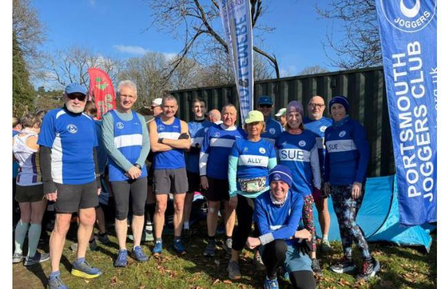
Bourne Woods did not disappoint, serving up a classic cross-country mix of slippery descents and leg-burning climbs. But, as always, the Portsmouth Joggers rose to the challenge! Ben Stait & Lewis Clarke led the men’s team with an impressive run, navigating the tough terrain with their usual determination. Sue Hyson, Sue Clarke and Ali Maud put in a stellar performance for the women’s team, proving that Portsmouth Joggers never back down from a challenge. Every single member of the team played their part, with plenty of support, encouragement. The Real Reward? Cake, of Course! As every seasoned runner knows, the true reason we endure hills, mud, and questionable weather is, of course, for the post-race snacks.
This time, we shared the most incredible fruit cake and cookies at the finish line! If there’s a better way to recover from a cross-country race than with a mouthful of homemade cake, we haven’t found it. Looking Ahead With the SCCL season wrapped up, we can reflect on a brilliant series of races, fantastic team spirit, and some truly memorable moments. A massive well done to everyone who ran this season—you’ve all been amazing! See you at the next run, Portsmouth Joggers!
From Edition 26: Spring 2025
Stubbington 10K by Paul James
I moved to Portsmouth at the end of May ostensibly for work but also for a bit of change of life. Having had a bit of a hiatus from running for 18 months I decided it was time to resume and get fit. I’ve been a member of a local running club before in Croydon, so I looked online for one in Portsmouth and found The Joggers.It’s a real honour to have been so welcomed by the PJC community. I really found my tribe. During the following months running with the club, I’d heard about and participated in quite a few races. There was a buzz about one of them in particular: The Stubbbington 10K.
My interest was piqued but this only increased when I heard it was already sold out. I was told there was a Facebook page specifically hosted for the exchange of transfer places. Eventually, after a few near misses I finally got one. It was on! On race day I arrive at Lakeside for a lift from the carpool. A great idea where members meet and share transport to race venues. It’s nice to be able to swap pre-race strategies whilst contributing to run sustainability. Upon arrival we muster together. Plenty of camaraderie and trading anecdotes while we fix our numbers and prepare for action.
Well organised bag drop. Teas, coffees & water paid via card reader. Plenty of Portaloos although the queues were quite long. I’m in the middle of a training block for the Paris Marathon in April. I should be doing a long run today as suggested by my Runna app. I’m concerned I might overexert myself and go too fast. I recently ran a personal best at Lakeside Parkrun and was tempted to repeat this effort over 10 kilometres. I shared this with Steve Woodridge, a seasoned marathon runner. He uttered some sage words “No Personal bests during training”. Advice I was soon to ignore as I crossed the finish line.
15 minutes to start time, we head to the arch. There are hundreds of runners. Many from local clubs in the area. There’s a real charge in the air. Outside the weather is just right. Clear skies, dry and slightly warmer than recent days. A bit of a pep talk from the race director and then the whistle. We’re off! Well not quite. I’m in the 50–55-minute wave with Pete Arnold and Gina Reeves. There are so many people in our cohort and those ahead, so we literally shuffle across the timer strip. That’s ok. I’m not running fast. Going to stick to tempo, or just below. Right. The throng opens a bit as we progress up the road.
I start picking my way through the crowd, finding my stride, getting into pace. Target 6:00-6:30. There are lots of club colours to be seen : Fareham running club, Victory, Denmead Striders, Portsmouth Triathletes, Vegan runners and of course the hosts Stubbington Green Running Club I look out for any royal blue shirts. I see Pete pushing ahead. Off you go mate, I’m taking it easy. The race is well marshalled and there are plenty of supporters out on the streets. Some cry out “Go Denmead” “Well done Victory” “Nice work Stubby” No mention of Portsmouth. Humph! We’ll show them! It was only until after the race it was pointed out to me that we only have the club’s name on the back of our shirts while others are displayed on the front.
Occasionally I hear “Go PeeJay” which I must admit adds a bit of a spring to my step and might also validate the observation. We run along an A-Road. I see light aircraft taking off to my right. Stubbington has an airfield. Who Knew? The path narrows to almost single file. It’s hard to pass other runners. Either stick to pace behind the pack or chance the grass verge and risk a twist to my already dodgy ankle. I do it anyway. I see the 5Km marker and glance at my watch. 28 minutes. Maybe a bit too fast? I press on regardless. Round a bend and see the sea to my right.
It’s beautiful. I didn’t know Stubbington was by the sea. Why isn’t it called Stubbington-on-sea? I think the town needs to look at its marketing. At 7Km I catch up with Pete. Looks like he’s struggling a bit. I glide pass with a friendly thumbs up. 8Km. I see the fast runners coming towards us; Kate Lewis, the two Richards - Boaks & Clarke, Steve, Paul J, Pete Birch. They seem to be moving so quickly whilst making it look all too easy. I’ll never understand that. The front-runner is way out ahead. He goes on to set a course record of 29 minutes. A man called Abdinasir Mohamoud Elmi of Bournemouth AC.
I’m really enjoying this. Close to flow state. These old legs have some life left in them yet! I see a blur of blue nylon at the corner of my eye. It’s Pete. He’s found a 2nd wind. Well done mate. That’s fine. The race is not for the swift. Crack on. Don’t worry about me, I’m “taking-it-easy”. I see a red inflatable arch, Ainsley Rood is in my sights, I push and catch up. As I draw alongside, I say, “We got this!” planning to run in together. He shouts “go if you’ve got it” I kick hard, maximum effort, sprint to finish. 100 metres at my top speed.
As I approach the arch it suddenly dawns on me. This isn’t the finish. It’s the start line. Deflated and exhausted I slow down to a jog. It’s a loop to round the shops followed by a gentle incline. I finally cross the line. Stop my watch. 53.38. Not too shabby. So much for “taking-it-easy.”
Some of us gather by the barriers near the end, to watch the remaining joggers romp home. Kate hands out the most delicious rock cakes. Delightful! Apparently extra cinnamon is the trick. An exciting fast and mostly flat race. I particularly enjoyed the long downhill stretch. An amazing turnout from Pompey Joggers. 27 finishers on the day. An awesome 13 PBs: Pauline & Paul Jeffrey Emma & Richard Boakes Sue & Richard Clarke Darren King Richard Sullivan Kirsten Nockemann Katie Hall Natalie Harrison Jo Thompson Yours Truly
From Edition 26: Spring 2025
Totton 10k by Sue Clarke
A select group of five joggers did the inaugural Totton 10km on the 15 September.
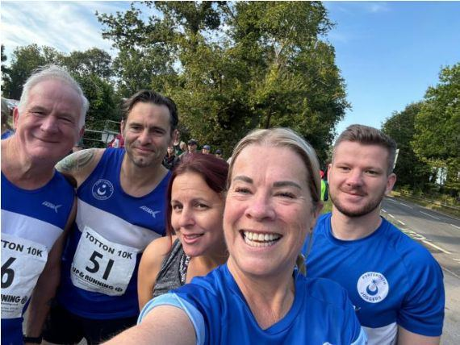
The race started at 9am so a bit of an early start was required, but once we arrived at race HQ we were in a delightful bright, slightly chilly, September morning and we certainly warmed up during the race.
Race HQ was in their local scout hut and many of the volunteers were from the scouts which was quite lovely.
There were bacon and egg rolls at the end which was a tasty treat after a 10km run.
It was Natalie, from the Next Step Group’s, first 10km and she totally smashed it. (Well done Natalie – Ed,)
The route was two circuits of 5km on forest roads, with very easy race directions - “turn left, left and left again and if you turn right you’ve gone wrong”.
Well marshalled and definitely one for the calendar next year.
From Edition 26: Spring 2025
PJC Do Malta 2025 by Steve Wooldridge
Its Sunday 23rd February, daylight is making an appearance, and 5 PJC runners meet at the start, looking resplendent in our matching “PJC do Malta 2025” hoodies. Chatter is mostly race strategy, hopes and expectations – little did we know quite how extraordinary a day it was going to be.
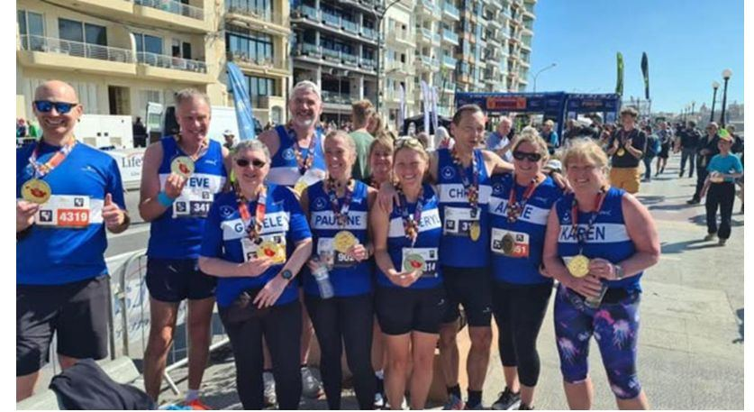
This is repeated just over an hour later for the 5 PJC runners doing the half, albeit with more daylight!
Its mild even before sunrise, no wind (or rain), just the conditions we hadn’t trained in!! Loo queues reasonable, despite the turn out being the highest ever, urinals somewhat European! More on the performances later, but on to the finish line.. We are met by Ian (who I have never been so pleased to see), handing out Prosecco and beers, an increasingly impressive sight too in our PJC vests/t-shirts, immense medal, alongside our 9 supporters. No hoodies needed by then in the glorious sunshine, and with some stunning performances, there was so much to celebrate and enjoy.
The PJC Malta tradition. So this goes back to 2012, Davina was the initial trailblazer. And Tony did a lot to promote it further when he did the 2014 Malta training group and plan, where all abilities in the club used to train together, at least once a week, in prep for Malta. I still have the plan!! Over the years, we have had some big numbers making the trip, 30-40+, although that fell away post Covid. So 2025 was an attempt to get the tradition going again, driven by Paul and Pauline (PJs), who we are all thankful to – and the hoodies are just superb! The Race. It starts in Mdina, on top of a hill, and ends in Sliema on the seafront.
So downhill basically, with an extra and slightly lumpy 13.1 for the marathoners before joining the half around mile 3/16. Overall, 2 fast courses. The organisation is superb, including the buses to the start (you need to book), baggage at the finish, efficient pre- race number collection, and plenty of water on the course. Onto the roll of honour. Let’s start with 3 quite incredible PBs in the marathon. Paul Jeffries – 26 minute PB. Yes, that is twenty-six…. Pauline Jeffries – 14 min PC. Cheryl McCauley – 19 min PB . And Richard Sullivan in the half – he gave me loads of excuses but it was a PB!!!
Chris McCauley led us home in the marathon with a super consistently paced race, Gissele not only ran a best half for many years, she kept us all up to date en route with PJC runners‘ progress! Angie and Karen, doing their 5th Malta no less, were also welcome sights on the course, even if they didn’t get a personal record. Joined this year by Dawn (new to PJC!), who again did really well. And myself, some sort of return to form, and a GFA London time (the goal), and many lessons (mostly from Chris) on not going off too quick!!
So well done to all, those times and performances are just amazing, and the celebrations deserved! How it Works. One of the attractions of this event is that its such a cheap place to go. Flights around £200 return – less if you skimp on baggage (or share an allowance). Accomodation similar, £50 a night will get you a decent hotel or apartment – the jacuzzi in the lounge is a bonus! The entry price has increased slightly, now just over £50 including the bus to the start. We all organise our own accommodation and flights to suit budget, holidays etc, which seems to work really well. Easyjet, AirMalta and BA are all options, and similar prices if you get in early enough.
And excursions, lots to do, from organised boat and bus trips (not so cheap but haggle…) to the diy ones – we all at some stage did the £2 ferry over to Valetta and back, with a few doing that on Saturday morning to take in the traditional firing of the guns. After a mini PJC group (not Parkrun) 5k at 9.00 Saturday – of course!
Local travel is cheap, food and drink plentiful, varied and reasonable, and everyone speaks English, indeed, a lot of signs etc are in English only, and Valetta shows the historical English influence with its Pubs, red phone boxes (they work!) and so on. Malta is also very safe – their crime rate is one of the lowest in Europe, and the English influence extends to driving on the left, and UK electrical sockets. Malta 2026. The planning has started – though as I write this, no date yet! 24th Feb or 1st March are equal favourites…. There are lots within the club with experience who can help if you have any questions etc, and in true PJC tradition, we will have a messenger group to help share information and advice, co-ordinate activities etc. Personally, I cannot wait
From Edition 26: Spring 2025
2024
The Spine Race! by Russell Tullett
This is a race I did in June, publicised as Britain's most brutal race. As I get older and seem to be getting slower by the week I look for races that challenge me and are achievable. I have had a few friends that have done or attempted the Spine race. The 3 main races that they do are the south challenger 108 miles, the north challenger 160 miles or the full Spine 268 miles. I opted for the south challenger as the other two seemed too scary. But even the south challenger had 22000 feet of ascent with the route being very technical and challenging. The race starts in Edale following the pennine way and finishes 108 miles later in Hardraw with a cut off time of 60 hrs.
I travelled up on the Thursday by train and booked into my hotel in Hathersage, Edale was only a 10min train journey away. This is in the middle of nowhere so trains are the only public transport. There are no taxis. I caught the train on Fri to Edale for kit check. There is a lot of mandatory kit for your safety it's very remote. I tried to be as conservative as I could with buying lightweight gear but at the same time making sure it saved me if I got into trouble. My kit weighed 8kg others were heavier. With kit check passed I travelled back to the hotel to pack my drop bag and made sure my back pack was in order and packed how I needed it.
Getting to the start was a bit of an issue as trains were hit and miss due to cancellations and strikes. Unbelievably a member of public Peter who was staying in my hotel offered to take me in his car to the start at 6.30am. Race day came round very quickly met Peter downstairs and he drove me to the start he would not except any money. Such a kind thing to do. I dropped my drop bag off, this can only be accessed at the only check point which is at 46 miles. 8am the race starts. Uphill from the start and within 3 miles you hit Jacob’s ladder, Kinder fall and Kinder high the climb seemed to go on forever.
Weather was amazing but we all knew it wasn't going to last. Within 2 hrs the heavens opened and I had reached bleak low, run walking on a tiny muddy path on top of a hillside with a huge drop on one side that had become a small stream of mud was not easy. The rain did not ease. I got to 33 miles where there is ‘Nickys food bar’ she stays open for every runner and takes pre orders on line before race day. Its a large metal container in the middle of nowhere. Got inside, it was so nice to be out of the relentless wind and rain.
Picked up my food and sat down to eat. I probably stayed to long as within 200 mtrs of leaving I became so cold I could not stop shaking. I decided to go back to Nickys and put warmer drier clothes on, this saved my race. It's all about adapting. By now the bogs were relentless my feet must of been under water for hours just trying to move forward. I finally got to the checkpoint at 46 miles in 16hrs. I followed a few other runners to the cp as the navigation was quite tricky and super hilly. You are allowed to be at the cp for 6 hrs I stayed for 3.5hrs.
I ate a meal drank loads of tea and tried to sleep (20 mins) then ate some more. Finally got back out just before sunrise on day two. 62 miles to go so pushed on, one foot in front of the other. Next mile stone was Malham cove and malham tarn. Malham tarn there is a small stopping point where you can have a quick hot drink and fill up your water. I left here at 9pm with another runner called David. The weather was now worse than ever. The wind 50mph was full in the face the rain hurt. The next bit for me was my favourite part. David and I hit Fountains fell 2100 ft of climb got over the top and coming down the otherside was so treacherous mud mud and more mud it was so hard to stay up right.
At one point I fell heavily and had to stop for 10 mins to compose myself. Once down from Fountains fell we hit Pen y ghent 2300 ft of climb again going up was nowhere near as hard as going down. The top of pen y ghent is a 50ft rock face you have to climb on your hands and knees 2am pitch black using a head torch 50mph wind and relentless rain this was not easy but weirdly enjoyable. The otherside of Pen y ghent is Horton Ribbensdale with another two climbs of 1000 ft but once up that 24k to go. David wanted to push on as fast as he could to try and get in under 48 hrs.
I told him to carry on as for me this was not a race as such but an adventure I didn't mind for the first time in my life how quick I did it I would be happy with 59.59. As David disappeared into the distance I got my watch out with the gps on it that had been on charge for 6 hrs. We had been using David's. The watch hadn't charged and had drained the power pack. So I got my hand held back out. This wouldn't turn on,it had got wet. So I got my phone out it only had 5% left this drained quickly. So moved forward using finger posts this wasn't easy as they were about a mile apart.
All of a sudden there was a random runner not in the race he told me there was a runner 20 mins behind and I was on course so I waited. Once he had caught me I ran with him. We went all the way to Gayle 3 miles to go but for some reason we part ways and then I got hopelessly lost. I then asked around found my way back on course and eventually got to the finish in Hardraw. Then realised I had a map in my bag that I could have used, part of the mandatory kit. Sleep deprivation can do weird things to your thinking.
52 hrs 9 mins, 20 mins sleep, longest I've been out on my feet. One of the best experiences I've ever had in my years of running. Hardest thing I've ever done but also the best thing I've ever done.
From Edition 25: Winter 2024
Gina's Journey by Gina Ledger
In October 2019 I did my first Great South Run… After running the Race For Life earlier in the year it was the big goal that got me back into fitness. It went fine, but every run that followed after that I felt a niggle with my knee. Whatever happened to me, I don’t believe that running was actually the original cause of the issue. A couple of weeks before the GSR I had sat on a spin bike and jolted to a stop. I felt a twinge somewhere in the top of my leg/hip but I was fine and I do not remember feeling pain afterwards. I was also going through an emotionally difficult time.
I will never truly know or understand what it was that caused it, maybe a combination of things but that doesn’t matter. The only thing that matters is what you do about it. I stopped running on it when I realised something wasn’t right and in December that year I couldn’t walk for a couple of weeks. I decided to heal further and completely stop running. I did that for a year. I was even scared of anything slightly weight-bearing so was careful with yoga etc and mainly stuck to meditational walking when I could. In March 2020 I couldn’t walk again for two weeks. It was no coincidence that COVID became apparent at the same time.
I had physiotherapy massage treatment for a while and did what I could to help it. On Jan 1st 2021 I started running again. I decided to work towards my first half marathon (The London Landmarks Half Marathon). In July 2021 I achieved that. I kept going out on long runs every Sunday morning and that same year in December 2021 I did my first Full Marathon (Portsmouth Coastal Marathon). I had caught the bug for running and from that day forwards I was signing up to events and setting myself new goals. But in 2022 I realised my leg was slowly deteriorating again and after my second marathon in July (Big Heat) and my first Ultra (Winter Cross Ultra) in December I decided in 2023 to reduce my distances and took a four month break from running.
I got further treatment from a couple more physiotherapists, a chiropractor and also purchased an ions therapy device. I also got shockwave treatment which helped. Later that year I decided to take up triathlon which would keep my fitness levels up and the running mileage down. I started some sea swimming and pool swimming and building up all the equipment I would need for this sport. In September 2023 I attempted my first fun triathlon with a kayak element instead of a swim (The Reverse Soggy Bottom Triathlon). Then over the Autumn and Winter of 2023 and first half of 2024 I was hitting running PBs on lots of races.
I decided to get back into long distance again and go for a marathon PB at Southampton in April 2024 which I did achieve. As I had the training in me I didn’t let that go to waste and I followed it with an Ultra in May 2024 (Big Way Round). I began my first Triathlon season this year with Portsmouth Triathletes and it has been brilliant! I’ve done a couple of Sprint, Standard distances, Duathlons and my very first Ironman 70.3 and Middle Distance Triathlon in Weymouth. Over the last five years I have learnt that the less invasive techniques of healing help me the most. I’ve gone backwards as much as I have gone forwards at times.
I will avoid any deep tissue sports massage that is too invasive and focus on holistic techniques…Yoga and Pilates Stretching and Strengthening, Swimming, Holistic and meditational therapies, regular steams and saunas, cold showers following hot showers and regular cold treatments. I listen to my body and mind and I let them guide me to what is right. I am currently working towards my next goal which is a marathon in December. The last five years have probably been the toughest and best years of my life for many reasons. I have learnt to release emotional pain so it does not cause physical pain in my body. I have all the tools to effectively manage and fight this.
I am determined to heal 100% and I will not give up. It is all about finding the right balance with exercise, healing and recovery. It is sad that the Great South Run has been cancelled today due to weather conditions, especially after seeing the sheer volume of preparation works on Friday whilst I was out running. But they made a difficult and wise decision and I’m glad they did. I have missed several races over the last few years so that I can focus on healing. It doesn’t matter. I hope that this inspires you to keep on going and not give up. To adapt and find another goal and to keep listening to your mind and body and do what you love!
From Edition 25: Winter 2024
Overton 5 by Ridley Coote
On the 8th September, I, along with hundreds of others, embarked upon the first HRRL event of the season; the Overton 5 Mile Road Race. Having only recently joined the PJC, it was my first league event, but I was excited to take part. After a fairly long drive up from Portsmouth (car-sharing was an efficient and economical method of travel), the race appeared to be set for drizzly and decidedly damp weather. However, no sooner had I pinned my allocated number to my shirt, the sun broke through the clouds. The cold breeze and intermittent rain was replaced by an unexpected, but welcome, heat. There was a strong PJC contingent present, with upwards of twenty runners wearing the blue shirt of the club.
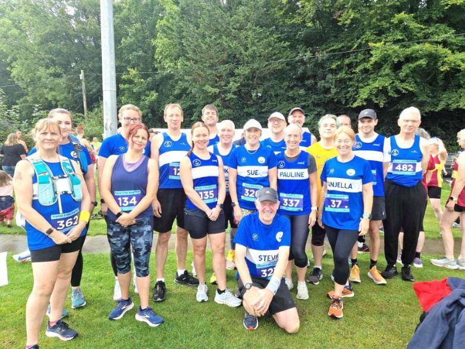
It was very pleasant for me, a relative newcomer, to see the myriad of different clubs represented, as well as the huge variety in runners. It was clear that all were welcome, no matter experience or pace. As we all began to limber and warm up, the energy amongst us grew. I lined myself up towards the back, which seemed like the sensible choice. A long trail of people snaked its way up the country road ahead. As the race got underway, the usual kerfuffle for space to run stretched out the field early. I found myself a nice pocket to run in, and remained there the whole race. The temperature was pleasant at first, but, by the halfway stage, it was beginning to get a little much.
Everyone kept pushing forward though, which in-turn spurred me on. I ran with a makeshift, informal, running group, who had a steady pace to them. As we passed the three mile checkpoint, we began to spread out even more. Soon, I was near enough running alone. At the front, a titanic battle was taking place between the frontrunners - twenty minutes or so further back down the road, another titanic battle was occurring; my legs versus running up-hill. In the end, I, and several others, decided to walk it. In retrospect, this was a very wise decision. By mile four, I was very tired, but the prospect of finishing kept my legs moving forward.
It helped that there were so many people encouraging and cheering us all along. As I'm sure anyone who has run a road race will attest, it feels like you're at the Olympics when people are cheering you home like that. Finally, after forty-seven minutes, I crossed the finish line, and was relieved, proud and well and truly exhausted! A medal (or glass) proved a good prize, but was beaten by the tasty array of homemade baked goods provided by some of our lovely runners. As someone who hasn't run regularly for a few years, it has felt so good to be back at it, and this road race was such a positive experience.
Each entry contributed towards a donation to the Andover Food Bank, which was yet another wonderful facet of the event, which had a fun, family atmosphere all day. It was so enjoyable to see so many friends and families attending, including plenty of kids, who seemed to have a lot of fun! For those supporting, there was plenty of food and drink to go around - another plus on a day full of positivity. I also want to give a quick mention to my mum; Anjella, who ran the race with myself and our fellow PJC members while injured, but impressively made it to the finish line, and even took the time to smile and pose as she approached the end!
From Edition 25: Winter 2024
Couch to 5K: May Group by Laura Quinn
When I started C25K in May, running for 1 minute intervals around the car park, I was skeptical that in 9 weeks time I would be running 30 minutes. Little did I know that 10 weeks later, I’d be taking part in Portsmouth Joggers 5 mile summer cross country! The group, led by a wonderful team of Sue C, Sue H, Steve H and Tony Q (with some other guest appearances along the way!) were so welcoming and I’ve formed friendships that have lasted far beyond graduation day. The leaders really drove the importance of running at your own pace, no matter what others are doing and always keeping together to support one another.
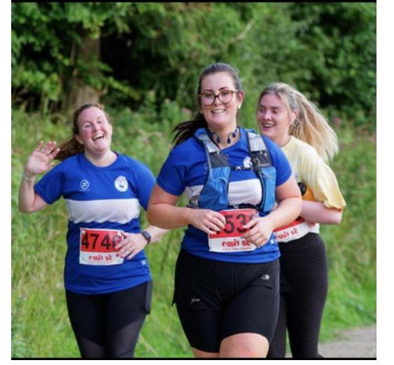
It was so helpful to have a programme which was freely accessible on my phone, but having a group to run with and be accountable to on the „homework’ runs was so important in keeping it up. Being in a group of people in the same boat as you makes the whole thing far less daunting! I’ve now got my sights set on a steady Great South Run finish - something I’d have thought was ridiculous a few months ago! I’d recommend absolutely anyone and everyone to give C25K a try, especially in the company of Portsmouth Joggers.
From Edition 24: Autumn 2024
It's All About the Jeffing by Tony Quinn
I picked up a knee injury in March 2023 and started the long journey back to fitness which resulted in me being a participant on the May C25K course that I normally lead. It felt rather odd being a participant as well as Leader. The target I had set with my physio was to be fit enough to run the Great Scottish Run Half Marathon in October 2023. For once I listened to the professionals and followed the physiotherapy routine that have been devised for me. The treatment I received from the NHS Physiotherapy Department was fantastic and focused on getting me back doing what I love, which is to run.
The rehab journey involved C25K which includes a combination of running and walking in the early weeks. Having seen first-hand how effective this is, it got me to thinking about the benefits of adopting the „Jeffing’ approach to my running regime. I had used the „Jeffing’ method previously, to good effect. The „Jeffing’ technique was developed by US Olympian Jeff Galloway who is a firm advocate of the run-walk coaching technique. The „Jeffing’ method I adopted was to run 2 minutes and walk 1 minute. I set out to complete the Great Scottish Run Half Marathon on 1st October and successfully completed the run in 2:25, which was only about 10 minutes slower than my average Half Marathon pace and only 30 minutes slower than my fastest ever Half Marathon.
Since last October, my knee has continued to give me a varying level of discomfort and in an attempt to reduce the impact on my knee, I have incorporated „Jeffing’ into my weekend long slow run on a regular basis. I „Jeffed’ the Alton 10, with a few fellow Portsmouth Joggers, which proved to be a sensible approach on the day given the heat and the hills. We even managed to attract some fellow runners who recognised what we were doing and asked if they could join us. The weekend after Alton 10, we completed the Netley 10k „Jeffing’ and although it was hot, we comfortably got round averaging 10:29 per mile for the full race.
I trained for and successfully completed the Serpent Trail 50k Ultra in July which I „Jeffed’. My next race is the Great North Run on 8th September which I intend to „Jeff’ and fully expect to finish in sub 2:30. The benefits of „Jeffing’ for me includes, less impact on my joints, ability to take on fluids or food during walking sections, quicker recovery time after training sessions or runs, negligible difference in completion times for events. I’m not going to be winning any races, so times to me are less important. I do, however want to be able to continue participating in events for as long as possible and „Jeffing’ gives me a better opportunity of running longer.
The walking sections also give you the opportunity to talk to the people running or walking with you, so yet another bonus. Psychologically, it is easier for me to run 2 minutes and walk for 1 minute multiple times than it is to say, “I’m running 50k”. If you’ve never tried it, why not give it a go and see how you feel. You never know, you might just like it and start thinking about all those events you’ve always wanted to do
From Edition 24: Autumn 2024
Le Courant de Liberte by Ally J Maude
In June we were invited to take part in Le Courant de Liberte running event. This coincided with the D Day Celebrations. We chose to run the 10km race which took us around the various sites of the City of Caen. The weather was perfect for running, the course was well marshalled with lots of enthusiastic spectators cheering us along all the way round. At the end we were given a race t-shirt and had the opportunity to taste a few local delicacies and yummy cider. All in all, a wonderful experience.
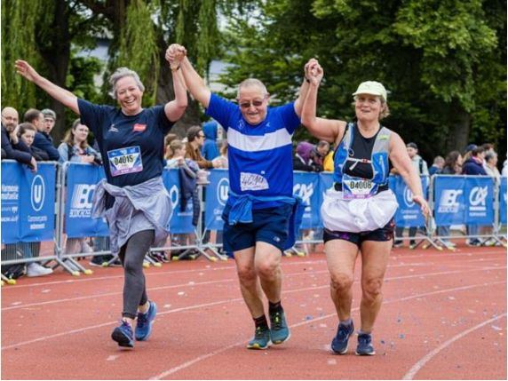
From Edition 24: Autumn 2024
The Serpent Trail: My First Event Since 2005 by Emma Boakes
I joined the PJC couch to 5k group a couple of years ago, and have been running fairly regularly for the last year with the Inbetweeners. However, many of you won't know that I used to be a member of PJC many, many years ago, back in the days when we used to meet at the Mountbatten centre. I entered several races back in those days, but the last one was in 2005.
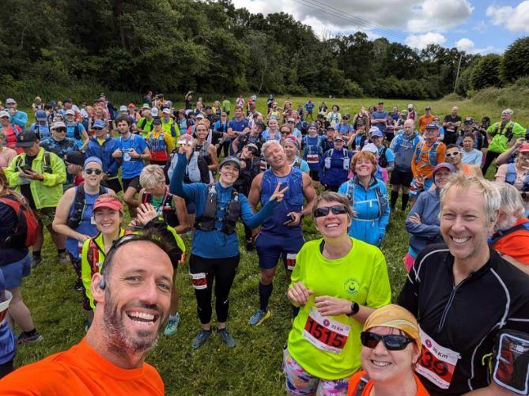
So having got back into my running stride, I had started to think about signing up for an event. I had come to the conclusion that having done several big event road races before I'm not really interested in doing any runs like that (not at the moment anyway). As fabulous as they are for atmosphere and getting PBs I think I just want something different. I watch Mark Lewis on YouTube and saw his footage of running across a Welsh Mountain in a race and thought, yes that's what I want to do, running through pretty places with a view and no care for time (not quite up for Welsh mountains though ..not yet!) So having been sold the event by Tony Q, I entered my first event since 2005 - the Serpents Trail 20k which took place early in July.
I was joined by Rich and my non-PJC brother Steve on the day, which was fitting as it had been 20 years since we did our last race together (London Marathon 2004). After picking up our numbers in Petersfield we took a coach to the start near Midhurst.
The event has several different distances 100k, 50k, 20k (which we ran), and a 10k. It was amazing to see some of those running the longer distances running through during our briefing, and even better that the whole of the 20k crowd erupted into applause and cheers as they did. Running is such a great community!
After the briefing we were off. The 20k course is barely undulating, and it snakes its way through forest, heathland, farmland and country roads. It is very beautiful with always something to look at round the next corner. I ran with Steve and we chatted the whole way round, taking photos, and enjoying the scenery. It was (as Pete Birch has suggested it would be) a marvellous day out.
It's well signposted and supported by marshals, as well as a couple of well stocked aid stations, featuring a range of snacks and drinks and lots of camaraderie. The cool thing about the event is that it's cup-less, so you need to bring your own cup with you for drinks. I think this is a fabulous idea which massively minimizes the environmental impact of disposable plastic that might otherwise get used at such events. It also adds to the feel of it being a bit more like an adventure than a running event.
My brother and I rocked up at the finish about 2 hours 16 minutes after the start. Rich was significantly swifter finishing in 1 hour 37minutes and coming 19th overall - not bad for his first trail run! We hung around to see Tony Q himself cross the line after an epic 50k, but unfortunately missed the other PJCers finishing But maybe next time we'll be doing the 50k with you guys! Overall it was an amazing experience and I absolutely loved it. I will certainly be aiming to do some more trail runs in the future.
From Edition 24: Autumn 2024
The Serpent Trail: Report 2 by Ally J Maude
Some of us mad joggers took on the Serpent Trail. It was an early start as we had to be in Petersfield for 7.15 on order to catch the coach to Petworth. The trail was very well signposted, with aid stations scattered along the way, which were very well equipped with various goodies and plenty of cold drinks. The route itself was slightly undulating at times with spectacular views of the beautiful English countryside.
All in all a thoroughly enjoyable experience with great company.
From Edition 24: Autumn 2024
Southsea's 500th Parkrun by Debbie Pentland
I had been expecting a HUGE migration of runners to our shores for this special celebratory event. However, when I awoke to dark skies and torrential rain I knew only the DIE HARDS would show up. The race RD had asked us all to wear something Festival themed to bring a bit of colour to the morning. Well you all know me I don't need asking twice . This did co -inside with my 65th Birthday weekend so I was routing through my dressing up trunk last week to dig out something appropriate. If I had known about the weather I would have just put my wet suit, cap and goggles on.
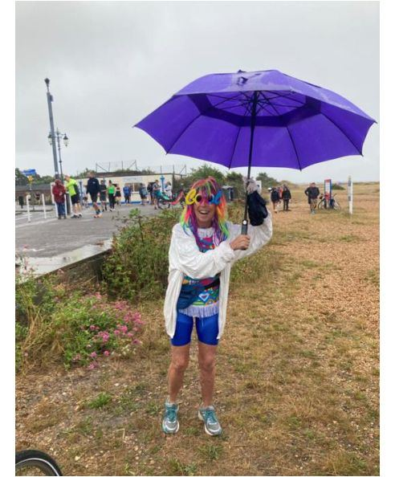
It wasn't until 8.45am that runners started seeping out of their cars and the loo blocks where they had been sheltering until the last minute. We all stood there dripping wet listening to the run briefing that was briefer than normal probably due to the poor soaked RD and volunteers who had already been there long before any of us who just wanted to get home for a hot shower and a warm and well-earned cuppa. Quite a few of the runners decided to run bare chested [the lads NOT the girls, (You won’t catch me running without my sports bra) which I thought was a great idea, well our skin is waterproof isn't it .
Sue Clarke and I were two of the die-hards who enjoyed a Splish Splash and a Dash along with 308 other runners and walkers who braved the elements. What a great feeling it was and a real sense of achievement to cross that finish line with a smile on our faces . You can’t let a bit of rain put you off your running. Apparently there were cakes at the finish but I didn't see them until I saw the FB page pics up later.. Damn it lol If you have NEVER taken part in a Parkrun I urge you to sign up now and give it a go.. ITs a FREE 5km Its for runners and walkers and its a great way to make new friends . https://www.parkrun.org.uk/register/ you won’t regret it I promise.
From Edition 24: Autumn 2024
HRRL: Alton 10 by Gina Ledger
Possibly my favourite HRRL race.
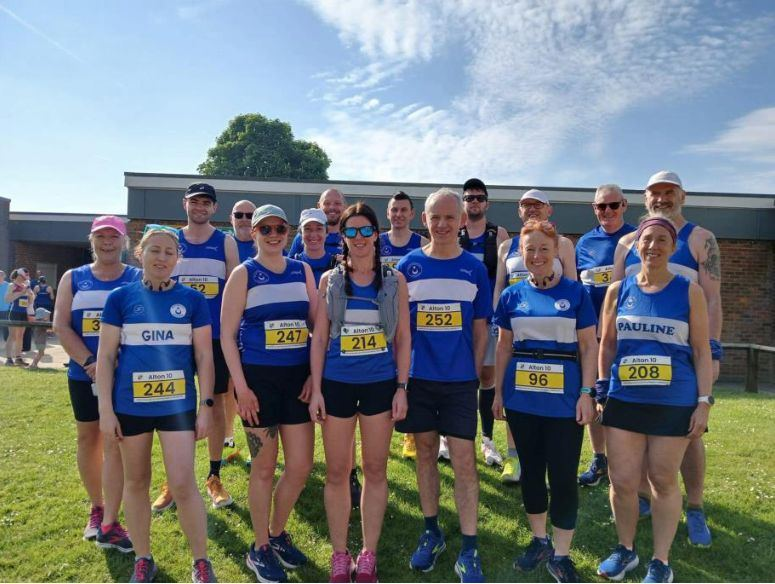
One of the most challenging with undulating hills in the heat (and it was hot! ), it is a sure test of strength.
If you get the hills right, slowing down the pace when things get harder and increasing again when things get easier then you can strike the right balance and keep it going for the full 10 miles!
And if that wasn’t enough there was a pretty long old walk to the start too (up to 15 mins).
The course is scenic and fairly quiet. You could hear the bees buzzing away too!
Plenty of Marshalls and support on route. We were impressed by the super polite scouts at the water stations.
The wooden butterfly medal at the end was a nice touch and there were lollies on sale also, which was a perfect idea after all that heat. Probably the most amazing tasting lolly I’ve ever had after all that running!
We were treated with some watermelon and amazing cakes (vegan chocolate chip banana bread and traditional carrot cake) from Anjella Coote too. A welcome treat! I certainly loved the chocolate and banana bread so much I just had to have an extra piece.
Well done to our speediest member Tim Bramly placing 11th Male, amazing achievement considering the tough league club competition.
Anjella Coote, Kate Lewis and Emma Lynam made a great comeback to the league races. An incredibly tough race to come back to!
I think there were some course PBs and superb efforts all round.
Thank you for all the PJC club support. Looking forward to the challenge ahead at Netley next weekend!
From Edition 23: Summer 2024
My Experience of the PJC C25K Programme by Kirsten Nockemann
After months of being quite in-active due to a shoulder dislocation, I stepped into the new year with a goal to get back to regular exercise. I began going out for short runs on my own, but was finding it hard to pace myself and stay motivated enough to go out in the freezing January weather. My mum, Jane, is a club member and suggested I join the C25K programme. I was hesitant at first, because in all honesty I have never really enjoying running, but I’m so glad she managed to convince me. The C25K group were all very friendly and the group leaders made me feel welcome from the start.
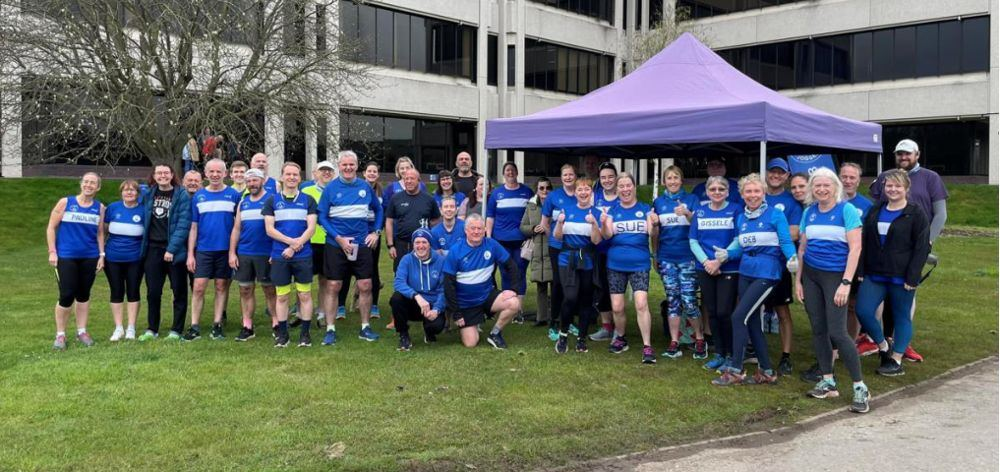
For 9 weeks we came together and braved all types of winter weather. There were evenings where the last thing I wanted to do was go out for a run, but joining the programme motivated me to go to every session. I loved that we were all striving for the same goal and experiencing the same thing, so we’d be encouraging and supporting each other until the end. I could feel my fitness increasing week by week, and it felt amazing. From barely being able to run for 2 minutes to running for 30 minutes continuously and finding it… pretty fine! The Saturday of week 9 came around and it was the morning of our graduation Parkrun at Lakeside… I’d never done a parkrun so I had no idea what to expect.
There was something so special about seeing a sea of blue PJC tops coming out to support by running with us or volunteering with cheers of encouragement the whole way round the course. We all completed the run, received our medals, took photos, ate cake and there were smiles all around. We had done it and I was so proud of us all and how far we’d come. The C25K programme gave me the confidence to get out and run again and I am now actually enjoying running… who would have thought! I’m feeling the benefits of going to club each week and running further distances, with my next aim being to run a 10K.
I couldn’t recommend this course more to anyone wanting to get into running enough. A huge thanks to Tony Q, Sue C and Sue H for leading the sessions, you were all fab!
From Edition 23: Summer 2024
London Marathon 2024 by Naouele McHugh
6am on Sunday 21st April saw Pete Birch and I set off for London, having managed to grab a lift from a fellow runner. It was excitement all round as we had all managed to get to marathon day injury free. It was great to have some banter on the way to ease the nerves and the whole journey was so quick and smooth that we were heading into our coloured start by 8.30. It was a chilly morning and with nowhere to shelter or sit and I was quite jealous of the runners who were using this time to grab a quick nap on the floor. Nothing left to do but queue for the porta loos and chat to strangers to ease the nerves. The running community is always so encouraging and everyone was full of helpful advice. We watched the elite wheelchair runners warm up alongside our pen and sheltered from the wind next to the urinals waiting to start – no glamour in marathon running!
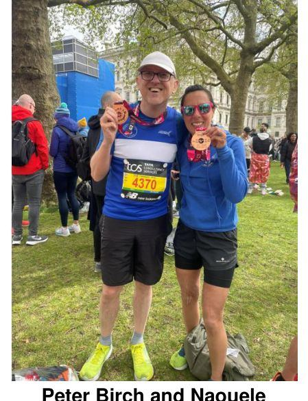
Before long, we were ushered to the start and off we went. It’s difficult to describe the atmosphere at the London marathon, and there really is no other marathon quite like it. The crowds roar for the entire 26.2 miles and if you start to tire, complete strangers are rooting for you at every step of the way. The crowds are beyond loud and you can feel the emotions of everyone around you as you run: the fast club runners going for a pb, the charity runners raising thousands and the people who run for loved and lost ones. Tower bridge is a real goosebump moment and just as good as everyone says. Of course, there are tough points as in all marathons (being over taken by inflatable T-Rex in our case), but looking back now 3 weeks later, all I can remember is the amazing feeling of running through the streets of London surrounded by strangers united in our one goal.
London really does itself proud on the marathon day, the whole city comes together and it is humbling to be part of. I always come away from the day feeling like my faith has been restored in humanity.
What I enjoy the most about the London Marathon is watching people achieve something they didn’t know they could. The finish line is so inspiring. From pbs to first timers – the marathon teaches you that you can do hard things.
A huge well done to Simon Evans, Pete Birch, Adam Watts, Phil Hoy, Ainsley Rood, John Gosling, Holly Smith, Sab and Debbie Mark (Virtual London).
I absolutly love the London Marathon and I would encourage everyone to do it if they get the chance. You never know, you may get the Portsmouth Joggers place next year!
From Edition 23: Summer 2024
ABP Southampton Marathon by Gina Ledger
It wasn’t the 4 hours I was going for but I couldn’t have done better or prepped better for it. I got a PB knocking 40 mins off the Portsmouth Coastal (my first ever marathon) I did 2 and a half years ago. I was so lucky my Achilles didn’t go and actually my legs, as far as any injuries are concerned, did absolutely amazing!! I was super happy at how good they felt in general. I loved the first 18 miles and was on schedule to hit a 4 hour marathon, but beyond 18 miles my legs just tired and I struggled so walked and ran the last few.
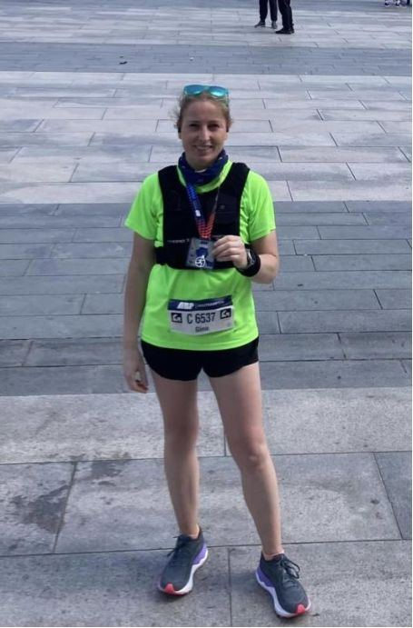
I think I just cannot go beyond that mileage well without doing more long distance training. I just fitted in what I could when I could!! I felt really comfortable with my speed up to 18 miles so I don’t think I was too fast, even if I was slower I hit an 18 mile wall where my legs just can’t go further. I actually quite enjoyed the course; running through the stadium was fun too. It was a bit windy and there was a couple of bits where this was a little challenging! Overall I’m super proud of that given the challenges over the last few years and really happy at how much my recovery has progressed. I’d love to come back and do a Half Marathon here actually. Oh I like the medal too!
From Edition 23: Summer 2024
London Landmarks Half Marathon by Alexander Radice-Gomm
I ran my first official half marathon race in a few years. I got the train to Trafalgar Square, for an early start down Pall Mall.
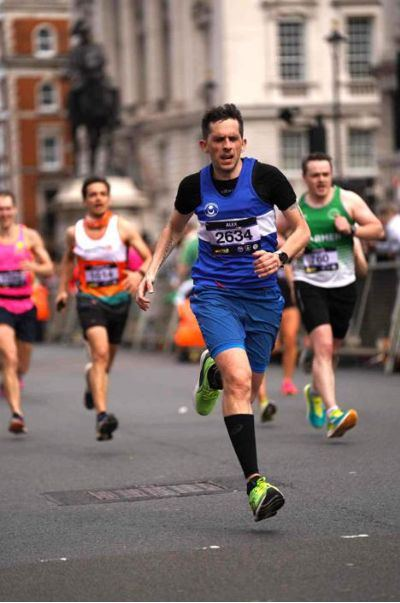
The race goes past Nelsons Column, Somerset House, St. Pauls, Royal Court of Justice, Guildhall, Bank of England, Walkie Talkie, Tower of London, Big Ben, then finish near Downing Street.
Also on the run, you'll see Tower Bridge, The Shard and the London eye.
It was a hot day and due to reports of windy weather, they changed the drinks from cups to bottles, which was better.
I was hoping for a pb but missed out by 6 minutes. my mistake in starting too far back in the pen. I saw I was top for my age group, which was a bonus.
It was a nice run. You come back on yourself a couple of times, and see other runners going the other way. This was confusing at times.
I would describe the race like the Great South but over 13 miles and in London.
Great support and atmosphere. One I hope to do again.
From Edition 23: Summer 2024
Cancer Diaries of an Ultra Runner by Sandra Tullett
Throughout my cancer journey running was my therapy. I wrote a diary which I also found helped me through a very difficult time. I ran the Ladies 5 in 2018 with my good friend Angie, in the middle of my fifth chemotherapy cycle.
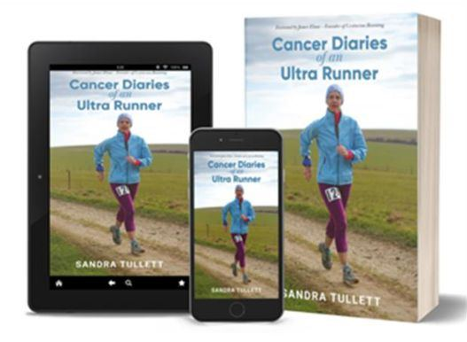
With the support of my husband Russ my diary has finally become a book called „Cancer Diaries of an Ultra Runner’. It should be coming out soon and I will provide a link when it becomes available. Please consider buying a copy. I am initially not going through Amazon and will have my own web page. This will allow me to donate a proportion of the proceeds to the Portsmouth Hospitals Charity. In this case it will be going towards the „Cancer Information and Support Centre’ which was previously the Macmillan Centre. This is a significant resource for all cancer patients and was my first port of call when I was initially diagnosed.
From Edition 22: Spring 2024
2023
Hayling 10 by Peter Birch
This was the 3rd race in the HRRL series after the cancellation of New Forest the week before. PJC continued to have good numbers in attendance with 10 men and women representing the club. Conditions on the day were bright blue skies and strong winds blowing in from the west, this was going to make the new course with over 2.5 miles from mile 7 into a headwind a challenging day out. The route started by winding north heading for West Lane, before a sharp slippery turn of mud and puddles lead us to the Billy Line, this year we headed south straight away, with a 1.5mile section of compacted paths and puddles to navigate, or plough straight through (Anjella).
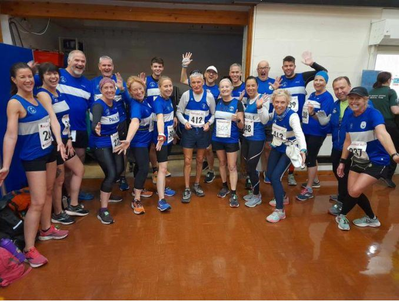
Coming off the Billy trail we headed east for our first taste of the westerly winds, gusting up to 30 mph we all knew we were in for a tough day out. We soon turned to run towards the Inn on the Beach and the first chance to run with the wind behind us as we headed for the funfair and a much needed water station on what was an out of character warm day after the storms and rain leading up to the day. 2 miles with the wind behind us along the promenade, before we turned off to run along a new section for the race, replacing the extended billy trail section was a footpath along the shore line, the race team had been out Friday morning to clear the path after storm had dumped half the pebble beach on it, but the weather had other ideas and had managed to dump some more pebbles on the path, about 20 meters of pebbles greeted us as we joined the coastal path, followed by puddles that couldn’t be avoided.
When we got to the end of the coastal path section, it was the bit we had all been dreading 2.5 miles back to the Inn on the Beach against the leftovers of the storm winds. This section allowed for some crossover of runners with the chance for shout outs to team mates, I know this helped me push through to the end, I also got lucky as I quickly slotted into a group of 4 runners from all different clubs that took it in turns to be the wind break. Back at the Inn on the Beach and half a mile to go, head north quick right passed all the cars and vans with kite surfers desperate to get to the wind we all hated, being well marshalled by the great team out on course, sharp left then right and follow the path back to the finish for that last big push.
There were some great performances on the day, shout out to Gina, Glenda and Jenny, who all managed to get 10m PBs, then myself and Kate getting Hayling 10 PBs. It was also great to see some people doing their first league race of the season, and seeing some club members making a return to racing with us, good to have Paul, Pauline, and Ainsley back racing for us. Congratulations to the ladies A and B teams who both finished top of their leagues for Hayling 10, with the men's A team 4th and B team 3rd at Hayling. Full results can be found here https://hrrl.co.uk/results/ With 3 races completed we have 3 ladies and 2 men one race away from securing this year's pin badge, who will be claiming theirs at Gosport Half on the 19th November. I'm going to have to wait for Victory 5 on 3rd December, as I am away for Gosport Half.
From Edition 21: Winter 2023
The Great South 5k by Celia Oxley
I would like to first start by thanking Sue and Steve Hyson and Tony Q who, after being beaten by the weather on the Friday, turned up at silly o’clock on the Saturday morning to put the tent up in time for the 5 kers to use it as a bag drop. They stayed around all morning to cheer us on as well!! On the day, 5 joggers turned up at the PJC tent on Saturday morning. I believe there were one or two others who went straight to the start. After the usual pre-event photos we walked to the start for the warm-up. The atmosphere is always great, just as good as the 10 mile.
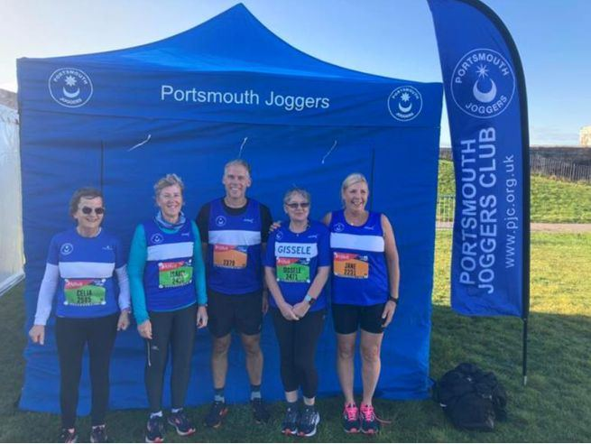
It was pretty ideal conditions too. We were cheered along by people watching all round the course, and by the Batalla Drums near the Sealife Centre. I started well, but slower than the other PJC members and kept going. It was great to be cheered on by Sue and Steve H towards the end when I was flagging. I didn’t manage a sprint finish but did the 5k in 36:08, my fasted 5k in a long time. We then re-convened at the tent for the after photo, with medal! The 5k is perfect for people like me who are not able to do a long distance run but want to get the feel of a big event. You get all the essentials of the big event; just have to run less distance. I love it
From Edition 21: Winter 2023
Great South 2023 10 Mile Run by Alexander Radice-Gomm
I don't do many races due to childcare reasons, but always make sure I can do The Great South. I go into the run hoping to do a good time, but as I get older, come to an agreement with myself to be happy with my time no matter what. I left my home in Purbrook and drove down to Southsea and took my normal mile walk towards the seafront and headed for the joggers tent. Its always nice to see old faces as well as new ones. I sat off in a decent pace with 3 finish times in my mind to finish in. I felt good with my pace and having people say 'well done jogger' does make you feel better inside.
Going through water station 1 and 2, which was followed by another round of „well done jogger’. Coming round the bend by the new Southsea Parkrun start at Eastney Toilets expecting the wind but there wasn't anything. Just kept thinking to myself it's only half a Parkrun to go. Coming towards the finish line and all tactics go out the window and just put my foot down. Crossed the line and was happy with my run. Last year I just wanted to stop, take my shoes off and go home. This year, I managed to get a personal best of 1.05.24, which beat my previous best of 1.06.42
The day before, my boy ran the mini great south in a good time for him in approximately 12 minutes. It was his first one. Thank you to all the joggers who volunteer and well done to the other joggers who ran.
From Edition 21: Winter 2023
Great South Run Volunteering by Emma Boakes
The Great South Run is a mainstay on the racing calendar, and although I've participated in several other events I have never actually taken part in the biggest run that is closest to my home. This year was no different! However, when the call for water station volunteers came out I thought it would be a great opportunity to give something back to the running community - after all I've taken a fair few water bottles from a fair few water stations in the past, so it would only be right to offer my services in return. I was also intrigued at how a large scale event would look from the other side.
So on a chilly Sunday morning, my daughter and I headed down to Winston Churchill Avenue on the bus wearing far more layers than we thought necessary, particularly considering most people would be attending the event in little more than shorts and a vest! We were greeted by a mix of volunteers from different organisations and many friendly PJC faces, several of whom hadn't volunteered before either. After a quick briefing from Davina, and the closure of the road, the water and tables were delivered and we got to work setting everything up. Then the wait began. There was a real sense of anticipation in the air, mingled with some music to keep us, and the runners going.
When the first elite runners came through they didn't even break stride and certainly weren't interested in any water, but finally a bottle was taken and the cheer that went out from the volunteers indicated that we were off! I don't think I knew what to expect but it was quite a sight to see so many runners streaming by for so long. Wave after wave of colourful vests, that progressively got slower, more cheery, and more talkative. It was great to see people from PJC going past with big smiles and waves, and it was amazing how many I managed to spot amongst the crowds. Eventually the runners got fewer and further apart until the tail cyclist indicated that all had gone through and we could start packing away.
If you have ever considered volunteering for the GSR I highly recommend it. Overall it was an amazing experience, and I thoroughly enjoyed being part of such a great event, and cheering all the runners from the first to the last. Here are a few hints and tips for those of you who may be interested: However many layers of clothes you think you need you probably need at least one more. Eat beforehand because there isn't much time during the race. The tables down route get significantly fewer people stopping than those at the front. The faster runners will nearly take your hands off when they take the water bottles.
Be prepared for lots of cheering, clapping and generally great positive vibes! Get public transport there and back to save getting caught in traffic. Do head down to the finish afterwards, as although it's a bit of a walk it's great to soak up some of the post run atmosphere and congratulate those you saw run past. Don’t worry! It really is a fun event and you get lots of support.
From Edition 21: Winter 2023
Spartathlon
SPARTATHLON is a historic ultra-distance foot race that takes place in September of every year in Greece. It is one of the most difficult and satisfying ultra-distance races in the world because of its unique history and background. The Spartathlon revives the footsteps of Pheidippides, an ancient Athenian long distance runner, who in 490 BC, before the battle of Marathon, was sent to Sparta to seek help in the war between the Greeks and the Persians. According to the ancient Greek historian Herodotus, Pheidippides arrived in Sparta the day after his departure from Athens. From 1984 the International Association "Spartathlon" was founded, which since then has continuously organised the race each September.
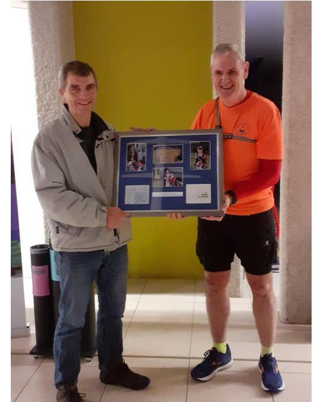
It is described as the world’s most gruelling race and is run over rough tracks and muddy paths, crossing vineyards and olive groves, steep hillside climbs and takes all runners on a 1,200 metre ascent and descent of Mount Parthenio in the dead of night. There are 76 checkpoints to successfully navigate within the 36 hours allowed to complete the race, failure to reach any of the check points within the allowed time means the participant is withdrawn from the race. All participants rely on their support team to help them before and during the race. Mich had amazing support from his wife Amy and good friends and club members Russ and Sandra Tullett who were all on hand during the day and night to provide food, drink, changes of kit and encouragement, to help Mich get to the finish line in Sparta.
There were 255 finishers and 100 athletes who did not finish within the allotted time. Mich finished in 160th place with a time of 34:10:56. Mich is no stranger to endurance running having completed a range of distances including, five 145 mile races, six 100 mile races and three 85 mile non-stop races. Some of these were qualifying races to be eligible just to get to the start line for Spartathlon. The race finishes at the statue of King Leonidas, where athletes who have completed the race are invited to kiss the feet of the statue. All finishers are presented with an olive wreath and offered a goblet of water from the Evrotas River, much as Olympian winners would have been honoured in ancient times.
This is without doubt an incredibly challenging race just to get to the start line. Having got to the start line, there are 36 hours to complete the race having navigated all of the checkpoints along the way. As well as the phenomenal physical requirements to participate in this race, Mich has had to exercise mental toughness to complete the race running through the day and night. In special recognition of this amazing achievement, Portsmouth Joggers have presented Mich with a framed award commemorating his achievement.
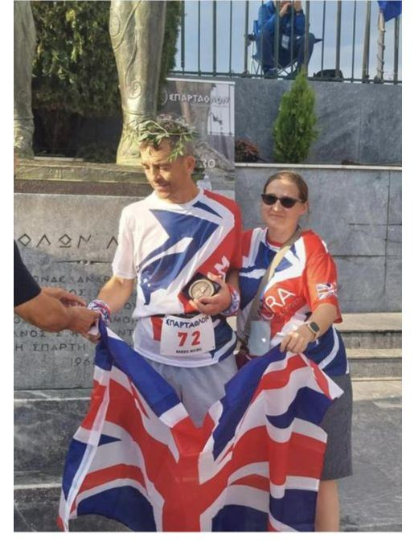
From Edition 21: Winter 2023
How I Got Into Running by Garry Batten
Many people ask me how I got the bug for running as previously I had never been a sporty person. Well, it’s all because I had to seriously change my lifestyle…. For many years, I worked away from home, I knew the menus in all the well knowing eating houses inside and out. Exercise was not something I had much time for due to work commitments and I was either driving a car, or stuck behind a desk. In 2016, I semi-retired after 38 years, started a bit of jogging, even had a go at the great South Run but under trained so picked up an injury 2 miles in and had to hobble the rest of the course in pain.
After that, I fell out of love with running until January 2022, when I had phone call from my GP on 4th January, that was a turning point in my life. What changed my life in that call, well my GP had rung me with test results from blood tests I had the previous day, to tell me I had been diagnosed with type 2 diabetes. It frightened the life out of me. I was just coming up to my 60th Birthday, I could accept the diagnosis, live on medication for the rest of my life (as my Dad had done), or do something, this is my story of what I did about it, running has changed my life… Following the call, I knew I had to do something, I had a HbA1c (test used to measure average blood sugar levels) of 107 (type 2 diabetes starts with an HbA1c of 48, between 42-47, that’s pre diabetes and anything under 42 is classed as the normal range), so that was bad.
I was scared to eat anything and didn’t know what to do. I downloaded all the diabetes recipe books on my kindle (haven’t use one of them) and did lots of research. I knew if I didn’t set myself a goal to get fitter and eat heather, things wouldn’t change. I started the C25K program again using the NHS app, but unlike before I actually finished the program (never got past week 5 before, always found an excuse to not complete it, even during lockdown. Doing this was all well and good, but I needed a bigger challenge, so I entered the Great North Run (I know, no running experience and I want to do a half marathon at the age of 60).
Oh dear, what have I let myself in for, seeing my record with the previous Great South Run in 2016 hadn’t finished well, but as I went under a charity place for Diabetes UK I just had to finish and raise £360. This is when I came across you wonderful people of the Portsmouth Joggers. I had known about the club for years, but always put off joining due to work commitments etc (and any other excuse), but this time I was serious’ Being part of this club has helped me not only with my physical health (at one point a few years ago I was 104kg, now I tip the scales at 90kg ish), but doing runs with the Social Group (and sometimes the Inbetweeners) it has helped me with my mental health, plus running is no longer a chore as I am enjoying myself with likeminded people.
So where am I now nearly 2 years after being diagnosed with type 2 diabetes, well I am now in remission (my last blood test had an HbA1C of 38, I did complete the Great North Run in 2022 in just over 3 hours 30 min (an old injury played up at 8 miles so by 10 miles I had to walk), I raised £580 for Diabetes UK and this year I also completed the Great South Run in 2 hours 8 minutes with no sign of the injury that did me back in 2016 or the GNR last year. Who says running isn’t fun, I love it. As I sit here writing this, I’m just about to get ready for club night (it finally stopped raining) and I am planning to do a Parkrun in Berlin in a few weeks’ time (most Saturdays I do a Parkrun, not just locally, but wherever we are when out in our Caravan) Happy running one and all; and thank you for reading my story.
From Edition 21: Winter 2023
PJC Summer Cross Country by Philipa Watson
This was the second time I completed the summer x country at QE country park. My first time was in 2022 after just graduating from the couch to 5km, which was shock to the system with all the hills! This year I had just graduated from the 5km to 10km group (thanks to the help of vince!) and didn’t feel so nervous about doing the hills this time! I knew what to expect and just thought I’m going to have fun and go for it. After the initial big hill I knew it could only get better and kept trucking! There was a group of us who stuck together and ran and walked (only a few times!)
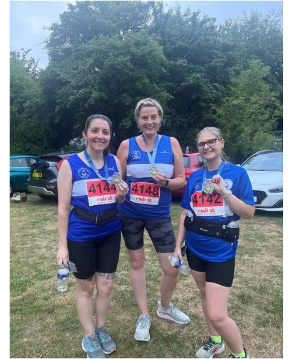
It’s was fun going through the trees, following the winding paths, dodging the nettles and trying not to fall over the tree roots on the way. The Marshalls would cheer you on and the odd joggers paparazzi snapping away (providing cheesy smiles for them!) Taking in the views across the fields and then heading through the woods, trying not to trip and constantly watching our feet we sped up to reach the finish line. My daughter was there helping to hand out the medals and she was cheering us all on. We all made it and got a cool medal. Definitely going to go for it again next year x
From Edition 20: Autumn 2023
Great North Run by Lorraine Stewart
I travelled to Newcastle with Ally, Debbie and Mandy who came to support me. The day started very sunny and hot. We never imagined how busy it was going to be, although we were warned. The atmosphere was amazing, so many people raring to go, and so many charities benefitting from the run. Mo Farah in his last ever race made the day poignant. I didn't get to see him but the girls did. I decided to run in my favourite fancy dress outfit Spongebob Squarepants. The race started at 11.00 but as I was in the last wave I didn't cross the start line until 12.15, which was a long wait.
The race started with the first hour being hot and sunny (apparently the hottest weather they have ever had for the GNR). It was amazing running over the Tyne bridge. Thousands of spectators cheering everyone on and there was never a dull moment. The sky gradually became cloudy but cooler which made running easier. There were many water stations, people handing out sweets, hose pipes spraying people down and showers. The race was tough but enjoyable as I was running with so many people young and old. The last mile and a half along the seafront was the best part, especially seeing the finish line up ahead. I made it, and finished in 2:54:59, and I felt great.
Spongebob did me proud once again. But then things changed for the worse....... As I made my way through the finish the sky became black and no one could even imagine what was going to happen next. The heavens opened and there was an almighty thunder storm, flashes of lighting, flash floods etc people went running for cover, roads were flooded, the Metro flooded, the ferry stopped running and chaos hit South Shields. It was reported that they had a months worth of rain on one hour, up to 50mm. It rained hard for over an hour. The company running the buses back to Newcastle put on many more buses to get everyone back safely, although the roads were jammed for miles.
Marqees were opened up for shelter (I wish I had known that) and many silver blankets were handed out to everyone to keep people warm. It was chaos but handled very well and the girls and I finally got away safely back to Newcastle on one of the buses. What started out as an amazing, hot and sunny day, turned into a nightmare. That's the British weather for you. Now we can't wait to do it all again next year, hopefully all of us next time.
From Edition 20: Autumn 2023
Portsmouth Joggers Go Stateside by Emma Lynam
Most of you know I spent this Summer in San Diego, California visiting family, and while there I was also able to take PJC on tour Balboa Park 8 - 5th August I took part in the Balboa Park 8 miler. This was a tricky course, given I was still slightly jet lagged having only arrived a few days prior to the event but I wanted to make the most of being in an event in the USA and to run with my dad, someone that inspired me to run in the first place Walking to the start line I had to laugh as all I could hear blasting through the speaker system was the most English disco party tune "Come on Eileen."
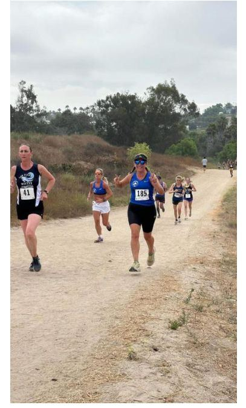
Once on the start they did the national anthem which was again different to normal starts but so epic. I had been warned this was a very hilly course and to start with I felt great until the last mile where I found that hill it was so steep it was almost going back on itself winding up and up like a spiral but I pushed on and still had enough in the tank for a famous sprint finish - oh and the medal at the end was very bling and made the hard work worth it. Believe it or not I even managed to find a runner who was from Bournemouth which was a bit surreal but he knew of PJC and that was just amazing seeing as I was 5500 thousand miles from Portsmouth, the top stood out to him Cross Country USA As if running over there wasn't hard enough in the heat and humidity, I decided to team up with my dad's running group and take part in the Cross Country League this was the 2023 Dirt Dog Cross Country Series.
I was able to wear the teams vest Perros Bravos (Brave Dogs) it was still blue and white so not to cheat on PJC Cross country in the USA is nothing like the UK it's definitely a lot more competitive and no mud in sight, instead we ran on sand and gravel across a 5km distance with lots of hills and had to watch out for rattle snakes. I managed to cross the line in just over 24 mins and came 5th in my age group - and top 20 females to cross the line Now back in the UK - Marathon training - Next up - myself and Vicki Evans are taking on Beachy Head Marathon in October.
From Edition 20: Autumn 2023
Birth of Portsmouth Joggers Club by Tony Conway
It had been first mooted the possibility of establishing a jogging section of the Portsmouth Athletic Club in 1974 but it had not met support. It became apparent also that if a Jogging Club was to be successful it must be run on totally different lines to an Athletic Club.
The opportunity arose in September 1976 to organise a Sunday morning session at Alexandra Park as part of a campaign for “Sport for All”. It was a national campaign to get Britain fit and healthy. Five members of the Portsmouth Athletic Club, Peter Kilford , Orion Young, Mel barfoot, John Stansford, and Norman Wright. All waited to see how any people, if any, would respond to the local News publicity.
Emphasis had been placed upon encouraging individuals and families to come along whatever their standard of fitness or non-fitness, for enjoyment and fun. They were all amazed when almost 100 people appeared. Dave Byng was one of those that turned up, Dave is still a member of PJC, as is Peter Kilford, an honorary life member.
The first session really put the seal on the way in which the Club would later continue to operate. There were groups for beginners, intermediates, and children. They each had leaders who took turns to lead - a list was done in advance. Initially they concentrated these groups within Alexandra Park. Their sessions always commenced with a mass exercise session and with people being able to move up or between groups as they became fitter or to suit their particular need. In little over a month the numbers attracted had grown substantially. Runs were on the track first (not road) and were short distance. PJC had no room but could use the shower. Warm ups were on the hard area beside track where any announcements could be done. In 2 months our numbers had increased to 3-400 on a Sunday, we were also able to introduce another long distance group for those wishing to jog in stages to the Hilsea Lido or thereabouts.
A social membership was arranged for £5 for them to use the facilities.
Because of the success of jogging, and the increased national attention being given to it, the club initiated the idea of holding a “Pleasure Plod” on Southsea Common, linking in with the national campaign for a healthy life style. This was organised voluntarily, with considerable support from the News and local radio and it attracted over 2000 participants to the first event in 1978. No entrance fee was charged and it was a pure run for fun. At this stage the club were well ahead of any other jogging groups in the country in our thinking and development. . The number of members quickly increased and in the early 80’s were well in excess of 550
The club had a very successful social calendar (with a subcommittee) included monthly meals out all types of cuisine etc, Dinner & Dances, Barn dances and line dances, lectures of running interest and training, visit to places of interest and annually visits to dog racing and Goodwood horse racing and Treasure hunts, skittles and BBQ's.
The Clubs first Chairman was Orien Young
He was A TRAILBLAZER for black athletes and a pioneer for those who compete in sport after having transplants. Young was an international competitor who took part in the Vancouver Commonwealth Games in 1954. His dominance as a sprinter saw him collect 11 Hampshire county titles. Young arrived in Portsmouth from Bermuda around 1950 where he worked in the city’s dockyard, later becoming an electrical warfare expert on submarines. A regular in international competition, Young also competed at the same meet at Iffley Road in Oxford when Roger Bannister broke the four-minute mile in 1954.
Young became a senior UK Athletics and City master coach as he dedicated his life to coaching, officiating and managing the outfit.
Young was also a key figure in the British Transplant Games - with the first Games held in Portsmouth in 1978. Orien was on dialysis and had two kidney transplants.
He remained active coaching transplant athletes until his death on September 30th 2016,aged 85 and will be remembered as one of greatest athletes ever associated with Portsmouth.
From Edition 19: Summer 2023
Keep On Keeping On Jogging! by Celia Oxley
As an older Jogger and retired Occupational Therapist I thought I would extol the benefits of keeping on jogging into old age and the precautions to take to prevent injury as we get older.
Doing any activity with others, especially in the open air, is great for the mental health. You can’t beat having a chance for a good old chin-wag to put the world to rights, nor that sense of achievement when you finish a run.
Physically Jogging helps us older Joggers to keep mobile. Regular exercise keeps the joints healthy and mobile. It helps to maintain bone density and maintains muscle strength. As we get older the bones can lose density. Regular exercise, combined with a good balanced diet including foods rich in calcium, can reduce the risk of fractures, so common in older people. Keeping the joints mobile will also help us to maintain our independence.
However, there are risks associated with jogging, as with any sport, more so with older joggers. This has become far more evident to me during this last, bitter winter. I missed jogging a lot during the bad weather but felt it was not sensible to risk a fall by jogging when it was icy or the pavements were covered in wet slippery leaves. Older bones tend to be more prone to fractures.
Another risk is the cold. Older people are more prone to developing chest infections such as pneumonia if they get very cold. So, if it isn’t too horribly cold and slippery, make sure you wear plenty of layers, including a hat, and be prepared to take them off as you warm up. Also, warm up thoroughly before jogging. Otherwise, if it is really bitterly cold, as it was a few times over this last winter, hunker down with a hot drink in front of the telly. It’s not worth risking your health and safety, and missing a few jogs isn’t the end of the world.
If you have not jogged for a while, for whatever reason, and you are not sure about coming back because you know you won’t be as fast as you used to be – don’t worry. Come back and join whatever group you feel able to keep up with. You could even try the Couch-2-5K. You might surprise yourself and you will certainly feel the benefit both physically and mentally. We are bound to get slower as we get older, that’s just how it is. I used to do a 5k in a little under 30 minutes a few years ago, now I’m delighted if I do 5k in around 40 minutes. Remember we have a number of members in their 70s and 80s still jogging regularly, we’re not all 20-30yr old aspiring Olympians! Come and join us! You won’t regret it
From Edition 19: Summer 2023
Whole Club Runs by Sue Clarke
The last few months have offered a couple of opportunities for „whole club runs’. These are where the whole club comes together for a run, we wear our PJC T-shirts and provide Cosham and surrounding areas with a sea of blue.
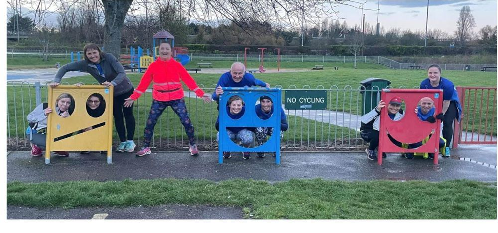
The first whole club run was an Easter run and Tony Conway provided us with a bit of a treasure hunt; over a distance of 5or 10km he „hid’ chalk drawings of Easter Eggs, some of his had a letter in. The winning team was the one who spotted to most Easter eggs and put together the secret word from the letters, the run was finished by a prize giving for the winning groups and a crème egg for all who took part.
The second whole club run was to celebrate the coronation of King Charles III. After plan A was foiled by the Coronation Chip shop being shut we partook of an awesome plan B where Tony Conway took the whole club (I am still in awe he kept us together - I loose half my group on a regular basis!) to various coronation linked landmarks / road names etc, and a mile stone (this is Tony and he loves a stone). The best part of the run was being met by Eileen Conway with chips, and stopped (it is quite hard to run and eat chips) and had a chat over trays of steaming chips (and curry sauce I believe - Ed.) before meandering (we were full of chips) our way back to Lakeside.
All in all - two amazing whole club runs - a huge thank you to Tony and Eileen and I wonder what whole club runs we will have over the summer months.
From Edition 19: Summer 2023
London Marathon by Ally J Maude
After 7 years of being unsuccessful in the ballot, I was completely overjoyed and shocked when my name was pulled out the hat at Pompey Joggers.
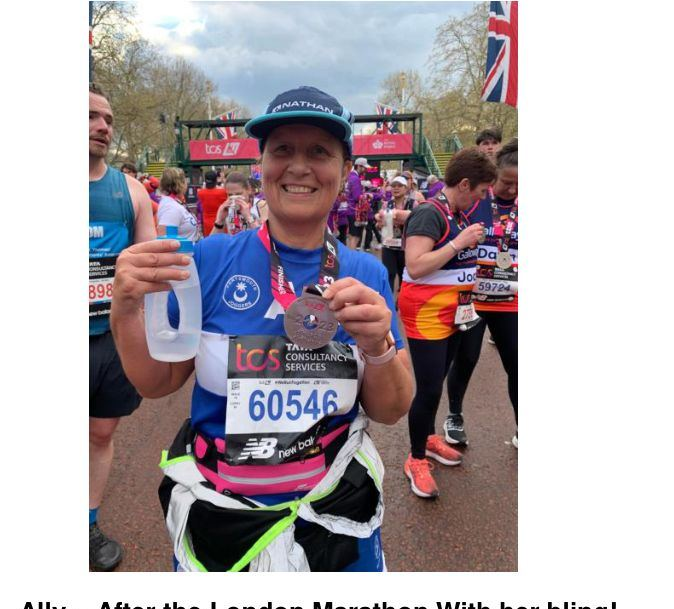
It was a wet start on race day and after going to the wrong start, I made it in time to Blackheath. I cannot begin to describe the feelings I felt, from being incredibly nervous and tearful to being totally overjoyed. Running through the streets of London was a truly incredible experience. The amount of support was inspiring, despite the rain there were people on every corner calling out your name and cheering you on. Although still slow, I made it to the finish with very sore, stiff legs but so vey chuffed that I completed the course. Thank you so much for giving me the opportunity to fulfil a lifelong ambition to do this wonderful race. Proud to be a Pompey Jogger
From Edition 19: Summer 2023
Madrid Marathon by Tony Conway
Well what a day. Got to the start nice and early, the noise was unbelievable it's not called the Rock and roll marathon for nothing. We started on time. There were hundreds in my wave of full marathoners and half marathoners. By 3K there were walkers, by 5K there were groups of walkers. Everything just slowed down, temperature 15C, at 10 K temperature was 22C, phew. I was trotting along keeping track of the 3:30 pacer, and getting hotter. Split from the half marathoners at 19K and things started to speed up a bit. At 21kish I turned my ankle on some cobblestones, thought I was okay and kept going.
At 22K I saw a medic and got some magic spray. Decision time, retire with a few K before the finish, or press on. I pressed on up a fecking big hill. At 25K my knee was giving me jip and I was sick, everything started to slow down. At 30K I was really struggling, the 3:45 pacer went past, I managed to hang on to him for about 2K. Then I really struggled, got to 36K and was walking more than running. When the 4hour pacer went past my heart sank. Ran, walked to 40K then 2K uphill to the finish, temperatures now above 30C, I now have a great vest sunburn and my head is on fire. All in all not a great day, but I finished and that's all that matters. Thanks for all the support.
From Edition 19: Summer 2023
Early Birds Pen-y-Fan Walk by Eileen Conway
On the 3rd of June a group of 11 Early Birds From Portsmouth Jogger went to the Brecon Beacons for the weekend. This came about because one of the ladies suggested we do an adventure! So with much planning and discussion off we set. The converted barn was a gem, just being down the road from Pen-y-Fan. Home-made food for Saturday evening and quiz time (groan), then early to bed as we had agreed to be up for an early start. Arrived at Pen-y-Fan, it was hot, busy and beautiful and up, up, up from the start. The group stayed together until the top, supporting each other the whole way!
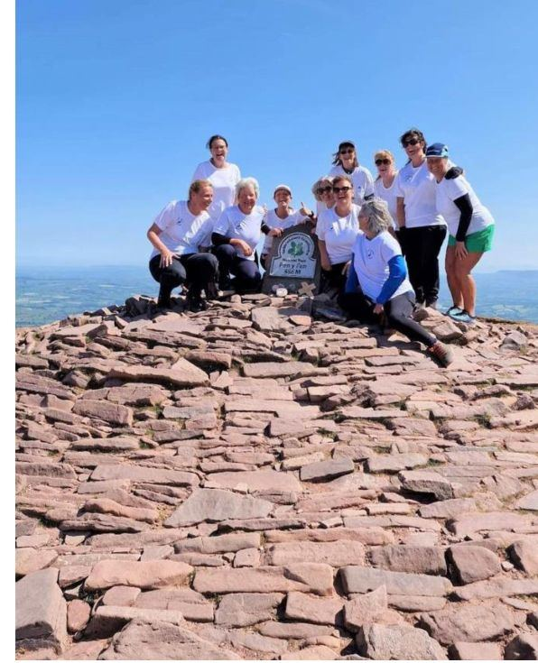
I’m about to crest the summit when my phone sounds, it’s a friend asking me what I’m doing, my reply was „summiting Pen-y- Fan’ her response was „your not really’!! anyway at the top we all celebrated with bubbles (thank you Alison) and photos to share our achievement. (I even phoned Tony who was very jealous he wasn’t invited) Alison Stocker and I were then coming back down the mountain due to illness and knee issues whilst the other intrepid adventures found a challenging route down! In the evening we walked down (so the climb couldn’t have been that bad!) to the local hotel for a meal and drink before getting ready for home on Monday morning.
It was hot, challenging and enjoyable with a really lovely group of women, what an achievement! Would I do it again......IN A HEART BEAT! If you ever get the opportunity I say go for it!
From Edition 19: Summer 2023
A Short History of PJC by Tony Conway
As we approach the Portsmouth Joggers 50th anniversary I think it’s time to look back and see where we came from. We know the club was formed in 1976, but what is our DNA?
During the 1800s, running was the reserve of the upper classes; those in private schools and officers in the military. Indeed, Portsmouth’s first running track was probably on Whale Island. Around 1878, a Lieutenant Percy Scott joined Excellent to qualify as a Gunnery Lieutenant. Amongst his many talents, Scott was a fine athlete but there was no convenient running track he could use. Seeing that Whale Island was being extended by 1000 convicts who were dumping soil there from excavations in the Dockyard, he persuaded those in charge to level and drain the new land. From there, Scott planted the grass to form a running surface (latterly this was also used as a cycling track).
In the 1880’s, athletics in Portsmouth started with the formation of The Portsmouth Harriers, and this was followed shortly by The Portsmouth Beagles. They shared facilities at North end with a cycling club: The Portsmouth Road Club.
1896 saw the birth of the modern Olympics in Athens, and the awarding of medals in several running events still in existence today. The 100, 400, 800 and 1500 metres were all contested, as well as the Marathon. Interestingly, the original distance of this first race was “about 25 miles” (we have the royal family to thank for extending it in 1908 to the 26.2 miles we know, and love today). But even post-1900, running was still the sport for the elite, as portrayed in the film Chariots of fire when public school boys Eric Liddell and Harold Abrahams battled it out in the 1924 Olympics in Paris.
Between 1909 and 1911, The Beagles and the Harriers combined to form the Portsmouth Racing Club. Then in 1912 the Racing club and the Road Club amalgamated, and The Portsmouth Road and Racing Club came into being.
Also around this time, a new club had been formed called: Portsmouth Spartan AC, which later became Portsmouth Corinthian AC. Both originally included athletics and motorcycling, but subsequently, the athletes and motorcyclists split, with the motorcyclists retaining the name Portsmouth Corinthian. The athletic club renamed themselves Portsmouth Caledonian AC (due to a strong Scottish element in the membership; quite probably due to a Scottish regiment being billeted in Portsmouth), then later became Portsmouth City AC, reflecting Portsmouth’s status change from town to city.
Following this - in 1927 - there was a breakaway from PCAC, and a second incarnation of Portsmouth Harriers was formed.
On the 8th March 1932 the three existing athletic clubs: Portsmouth City AC, Portsmouth Harriers, and The Portsmouth Road and Racing Club decided to disband so that a new, stronger club: Portsmouth Athletic Club could be formed.
Portsmouth Athletic Club flourished until the outbreak of the Second World War, whereby the club was unable to function. However, in 1945, efforts were made to make it operational again and with some naval influence they were able to use the Naval training ground on Pitt street.
Portsmouth Athletic Club continued from strength to strength, producing some very good athletes, up to international standard. They also held international meets which brought the running stars of the day to Portsmouth. Alan Pascoe, British team captain mentioned in the video was born and bred in Paulsgrove and trained with PAC.
Throughout this time Britain was enjoying success on the international running front, but in the late 60s and early 70s there was a revolution going on over the pond in the USA (and also in New Zealand). But who were these weirdos who were stared at; ridiculed and even arrested?
And for what?
For running for fun! For running along the street and not training or racing. This new craze was to be called…Jogging…
Meanwhile - back in Portsmouth - there was a call for people to be able to “Jog” and not have the pressure of a competitive surrounding…
P.A.C. had its fair share of international runners throughout the 50’s 60’s and 70’s and it was these guys that thought there was a need for a leisurely jogging section within P.A.C
Peter Kilford, International runner and still holding the club record for 800 meters at 1.47.2 . first mooted the possibility of establishing a jogging section of the Portsmouth Athletic Club in 1974 but he was met with little support.
All that changed with a national “Sport for all “week in September 1976.
From Edition 18: Spring 2023
A Jogger's First Experience of Cross Country by Sue Clarke
Well that escalated quickly!
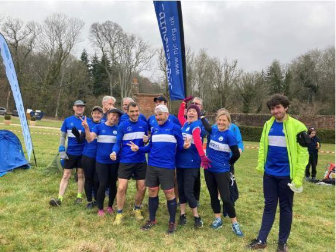
Today I did my first ever Southern Cross Country League race at the inaugural Fareham Running Club event at the Holywell Estate, Stanmore. I planned to turn up, plod round the course and see what this cross country thing was all about. On arrival I heard the words “great to see you, you have just rescued Gina (who is nursing an injury) and are the 4th lady in the lady’s team” - OMG! I then uttered the words “how difficult can it be” when the PJC team were discussing putting the tent down and became chief tent taker downer! Luckily Simon rescued me as he had watched three YouTube videos and practiced in his living room to become the expert tent taker downer but not being one to shirk my responsibilities I held the pegs.
So, on to the run. The run was awesome, lots of ups and downs with a particularly spectacular hill at 7km, which the chap behind me had plenty to say about, I could just about breath at this point so was unable to verbalise my thoughts in quite the same way. On the subject of hills - there were a lot of race photographers - all of whom were at the top of a hill, not the best position for a „race face’ but I bet there will be some „interesting’ pictures LOL. There was a mixture of wooded trails and incredible open vistas to run through and across. I was four foot from a deer at one point, but mindful of the weighty responsibility of being the 4th lady in the ladies team I didn’t stop to take a photo (but I really wanted to).
At the finish there were chocolate coated flapjacks for the PJC team, which on the basis of the number of calories I had burnt off on the hills I of course partook of one and it was delicious.
So - After my first cross country race would I do it again? Absolutely yes - it was a great way to spend a Sunday morning, I’m still upright and breathing (which is my overall running goal) and the flapjacks were awesome.
From Edition 18: Spring 2023
2022
Hayling 10k by Steve Wooldridge
Lets start at the end!! Naouele had organised a team post race breakfast for us all – superb food, hot coffee, a great and very sociable way to end an extraordinary morning for us all. Good that most of the PJC team could make it (I know some have to get home), as it really does make it more than just a race. Ryde is similar, if you want to join team PJC for that event in early February. Rewind a few hours…. Early alarm, look out the window - the forecast had predicted rain – the forecast was right. It had rained all night, on top of a miserably wet Saturday, and was still torrential.
This was my first HRRL race for a year, and only my 2nd since that lockdown thing started, so I was a bit out of practice. Which in practical terms meant I forgot my phone, had to turn the car round, quick (but wet) dash into the house and back to car, and finally I was on my way. A27 closed. It was only a minor diversion, so I was able to join the long queue for the car park (every year..!!) without worrying about the time. A nice 10 minute walk to race HQ and time to acclimatise – ie get soaked. The band of Joggers steadily grew, at least there was plenty of room inside, which made it easier to fix our race numbers and timing chip.
A few late arrivals (Captain Pete!), who of course made the diversion their excuse (it was 5 minutes!!). Quick team photo… Mass walk to the start, the rain reduced to a drizzle by now, and we are off! A fairly uneventful first 2 miles, and then onto the Billy Line. Only due to a course change, the Billy section was extended to nearly 3 miles. And the standing water – loads of muddy puddles, no real choice but to wade through them, ankle deep in places. Finally back onto the roads, and my feet began to dry out. But no – more puddles, some right across the path/road, no choice but to go through the middle – more wet feet, and at times, the realisation that you had to navigate same puddle (lake) on the way back!
Big shout out to Bob Pentland for his support at mile 6 and 9, and much like Gosport, that out-and-back section means we all pass each other, so lots of shout outs, all very welcome! Finally, the finish line came into view, always a good sight, and a wooden medal that I prefer to the previous medals from Hayling. One of the quirky things about this race is the running socks given to every finisher – my 2 pairs from previous Hayling races have done good service, and were getting somewhat threadbare, so very welcome to pick up pair no. 3. and for many, the socks went straight on to replace the muddy sodden mess on our feet at the finish.
Clever clogs had anticipated this and took a nice dry pair to change into! Unusually for a race report, no PBs to report – though it wasn’t a PB sort of day!! But plenty of hard effort from all 14 Joggers, loads of smiles and chat at the finish, and without doubt we definitely earned our medal/socks/breakfast. The wet conditions followed by that team breakfast, makes it a much more interesting story! I will mention Debbie Pentland, always so enthusiastic, and great to see her back after a little injury time out. And Gina (I know you ran Overton) and Naomi, good to have some relatively new faces! Next up – Gosport Half on 20th November, which still has places left as I type this. And Victory 5 (miles) on 4th December, which is based at Lakeside (and a 11.00 start, so a lie in!!). Hope to see lots of Joggers at these races!!
From Edition 17: Winter 2022
Great South 5k and a Water Station by Michelle
Having never watched or run in a Great South before I was feeling a little nervous and unsure about what to expect after booking my place for the 5k event. However on the day, following my ears towards the pumping music and commentary, I started to feel excited as I joined the groups of similarly clad runners with their numbers safely pinned to their tops and we made our way towards the starting area. It was a bright and sunny Saturday morning as the small 5k team rendezvoused outside the PJC blue tent. Tony was on camera and cheerleader duty – and did a fab job of both too!
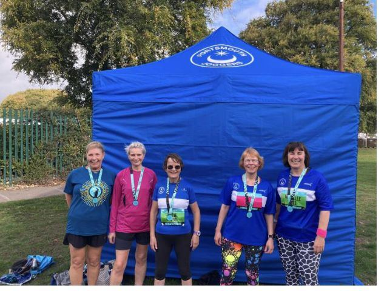
The warm-up was fun and the volunteers were really encouraging. 10am came and off we went eager to try and get PBs and enjoy the experience. We were cheered along the route by the supporters and the marshalls (and Tony!), along with the drum band beating us along the seafront. I even got a free shower on my way back down the seafront as it coincided with the hovercraft going out 😊 As you went through the park and then turned back to see the finishing line it was time for that final spurt of energy to get over the line. And then hurrah! The amazing feeling of completing my first official event – supported and encouraged by fellow PJC members – and the fun of excited chat, medals, tshirts and photos to commemorate.
Sunday was an earlier start as we had a gang of us from the Social runners group supporting Davina’s water station at the top of Winston Churchill Avenue. Pumping music again to keep us all energised as we neatly set up our 18,000 bottles of water – in fact we all got moving when the Benny Hill theme tune came on and we had a mini-recreation of a sketch! The younger volunteers looked on in bemusement 😊 Then the runners came – the elite athletes just powered by followed by the running waves. It was such an enjoyable few hours – spotting PJC runners as they came through, cheering everyone on – and trying our best to get water to every outstretched hand as quickly as possible. WOW! Incredible to see such enthusiasm, effort and achievement by all the runners, some great costumes too.
What a super weekend. I realised that it doesn’t matter what distance you choose to do, or whether your role is supporting on a water station or supporting through marshalling – its being part of the whole event, representing PJC in whatever form you have chosen, that provides an amazing experience that will stay with you forever.
From Edition 17: Winter 2022
Great South Run 2022 by Sue Clarke
The start of the GSR for me is the flurry of messages beforehand – “are you running this year”, “what wave are you in”, “how long do you think the queues for the loo will be?” Next it is the platform of Havant railway station where I meet up with lots of people in running gear to catch the train into Portsmouth; this year we were treated to pastries in our carriage from a running club up Liphook way. Then there is the excited walk from the station, saying hello to the marshals and clocking the roads we are soon to be running along. Finally, we arrived, quick search for the PJC tent and strip down to running gear ready to start after two or three visits to the loo (gotta be sure!!).
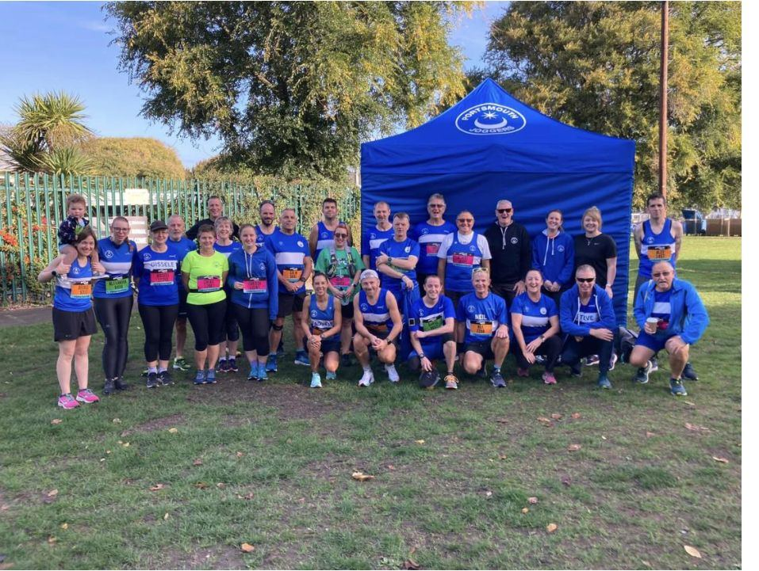
Then finally it is our wave, join the start and meet a lady from work – such a small world. Bit of a warmup in the start queue and then we’re off. High point this year for me was the dockyard and particularly a policeman shouting “NO WALKING IN THE DOCKYARD” (just as I was fancying a walk (I didn’t!), then the bagpipes and drummers are always favourites for me, but the best is that finishing stretch, crossing the finish line and checking to see what there is to eat in the bag of goodies. As soon as I got home, I entered for 2023 – hope to see loads of you at the PJC tent.
From Edition 17: Winter 2022
Two Different Events, One Runner by Alex Radice-Gomm
Over the last few months, I completed 2 targets for Parkrun. I know it's a run and not a race but I had, and still have, some targets I want to reach. On 30 July, i completed my 100th Parkrun. This was at my home run of Southsea. On 22 October, I managed to cross the line in 1st place. This run was as a tourist at Foot Clay Meadows, which is in located in south east London. I've only just got into Parkrun since 2018. I can't run as much as I used to due to family life, so parkrun allows me to spend time with either child by running with their running buggy. Depending on where I run, I can make the day of it with them. We have also marshalled a couple of times when my wife has had to work on a Saturday and I don't like running with them both in the buggy.
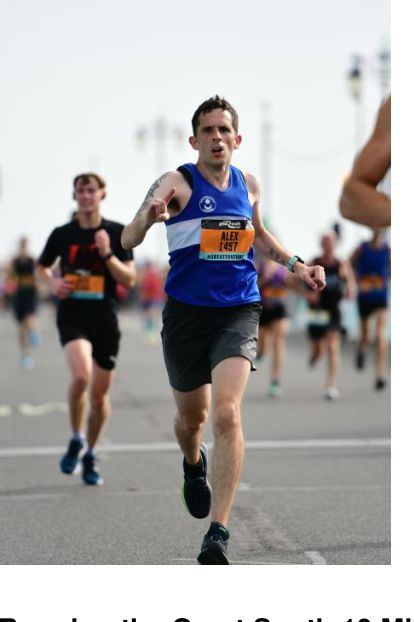
This year's Great South takes my total to 12. This year's run, the plan before to get under 70 mins, anything I would be happy with it. I know I can run most of this for free, but there is something about the Great South that I can't say no to. Not going to lie, this year's run I really didn't enjoy from a personal perspective. I probably ran too fast at the start, and felt it. There were times where I just wanted to take of my shoes and throw them. I'm glad I didn't. I managed to finish well within my goal target time in 67.52, just over a minute slower than my personal best in 2017. As always, the support from everyone was great, especially from all the Joggers along the course and at the water stations. I can't thank you enough.
From Edition 17: Winter 2022
No Two Events the Same! by Gina Ledger
What a lot of rain lately! I did the Pieces of Eight race in October in the pouring rain and although the rain eased for the start, we’ve just had some pretty wet conditions for the Hayling 10 in the HRRL. Felt like Peppa Pig in all those muddy puddles. I think the Denmead 10k was a bit kinder for the weather! The start of the SCCL was a drive through the pouring rain, but we were so lucky to see the rain ease before the start. And, well, the terrain was very tough. After so much rain, navigating through the mud and bumpy conditions gave this even further challenge.
All I know is the next one will not be the same and that is what can make it quite exciting. Not quite knowing what to expect and just taking it all in and doing what you can. The good thing is that every race is different. and that’s what can actually make it quite interesting and fun. New place, course, terrain, weather conditions and well, you will always find your own good running days and bad running days! Just don’t give up hope if it didn’t go so well. Start slower next time. Adapt. Try to look at it as just another training day/evening. Learn from it because the next one can be better.
And the experience of doing a race will put you in good stead and give you a bit more confidence for the next. Come and join us, give it a go. You never know you might enjoy it! There can always be a reward at the end too. Maybe a coffee and cake, a good natter and the satisfaction of achievement at the end of a run. Not forgetting the calories burnt and positive benefits to your health and well-being.
From Edition 17: Winter 2022
1 Mission, 2 Marathons, 3 Weeks and 14 Bridges! by Cheryl McCauley
Back in 2019 I was lucky enough to win one of the PJC London Marathon places for April 2020. However, we all know what happened then…covid struck and after a couple of postponements I was due to run it in October 2021, along with my husband Chris. Then in April 2021 I was diagnosed with breast cancer and had an operation in June, so had to defer my entry to October 2022. This would have been absolutely fine had we not already signed up to Venice Marathon, which was also postponed due to covid and we had rescheduled for 23rd October 2022, thinking we would do London in 2021 and Venice in 2022.
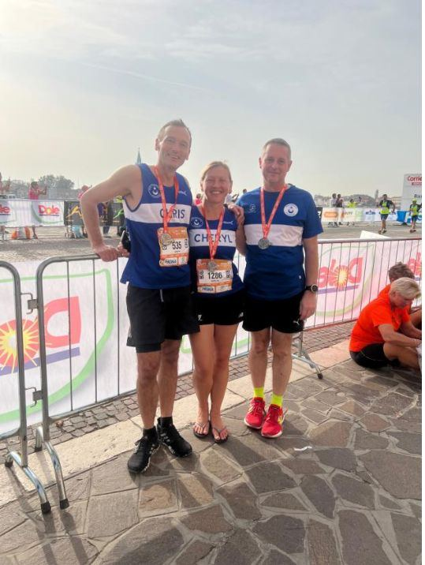
I did try to defer my London entry for a second time but they are sticklers for the rules and therefore I wasn’t able to, so it was a case of run it or lose the entry. Not one to quit I decided to do it. I had done minimal training due to illness and injury but I didn’t want to miss the opportunity as a lot of people try year after year to get a place and never succeed!
So on 2nd October Chris and I ran the London Marathon! My aim was to finish in under 5 hours and I was really pleased with my time of 04:48:29. Chris did amazing as he had been suffering with plantar fasciitis so had done very little training too, only deciding to “give it a go” two weeks before. He finished in an awesome time of 03:35:09. It was the most incredible experience. The crowds really help to keep you going and having my name on my vest meant I had a lot of encouragement from a lot of people. Crossing the line was very emotional as there had been times when I thought I wouldn’t be able to take part, so to complete it under my target time was a real achievement.
Fast forward three weeks and it was time for the Venice Marathon! We had an absolute torrid time travelling to Venice. Two flights were cancelled, our bus was cancelled and then our train was cancelled, you really couldn’t make it up! We left home on Friday 21st at 4am and eventually arrived at our hotel in Venice 37 hours later on Saturday 22nd at 5pm, having travelled via Bordeaux, Milan and Verona!! Our fellow jogger Simon was also taking part and he too had a nightmare journey to get there!
It was an early start getting the water taxi at 5.55am to the bus station were we met Simon and started our 20 minute walk to where we would get on the coach to drive us to the start. The marathon didn’t start until 9.40am but the time went quite quickly. Chris was in one of the first waves so he set off before us. Simon and I were in the same wave but had different race plans so Simon went on and I took my time and went at a pace I was comfortable with. There was a lot more support on route than I had expected. Through each of the small towns and villages there were large crowds of supporters although there were a few areas where there was no support at all!
I was on the bridge that connects the mainland to Venice, which must be the longest bridge in Italy as it goes on and on and on, but up ahead I could see a joggers t-shirt! I quickened my pace a little, and I mean a little as this was about 22 miles in and caught up with Simon. From here we ran together and were cursing the rest of the 14 bridges we had to cross before reaching the finish line!
Again my aim was to finish in under 5 hours so was really pleased with my time of 04:46:54. Chris did amazing again and finished in 03:32:11.
I’m glad I completed both the marathons but would not recommend doing two in three weeks or even attempting one with minimal training! Having said that though, it just goes to show what can be achieved with a lot of determination and a positive mental attitude.
From Edition 17: Winter 2022
Remembrance Night by Tony Conway
November comes around and the whole country, maybe the world starts to focus on the act of remembering our fallen. Portsmouth Joggers are no different. It has now become a bit of a tradition to meet at the top of the hill, walk to the Commonwealth cemetery and pay our respects.
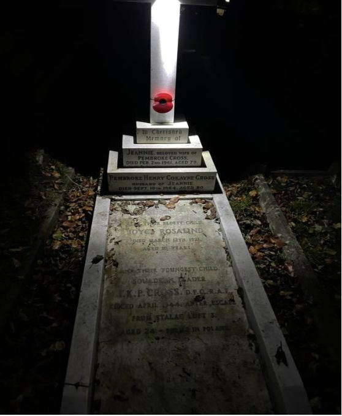
This year was slightly different, we were introduced to a few of the residents.
We met as normal, and it must have looked quite a site as we all walked across the road in running gear and torches to the graveyard. I had been up earlier and with the help of Eileen and Gemma laid a trail of light sticks in the darkness to the memorial cross.
As we gathered around the cross I reminded them why we were here and I thought it was rather rude of us not to know any of the residents.
So we were introduced to a few,
Firstly Staff nurse Bridget Donovan.
Born in Southern Ireland, came to England to train as a nurse. At the outbreak of the first world war she volunteered for the QAIMNS. Queen Alexandra's Imperial Military Nursing Service. Bridget got posted to Cosham and while there contracted Cerebro-Spinal-Fever from her patients. She died on her 38th birthday. From relative safety, she died doing her patriotic duty. We then met Corporal Walter Wicken. Born in the East end of London, his father was invalided out of the army after WW1. He joined the Merchant Navy, sailed the world. On the death of his father he came home to look after his family. At the outbreak of WW2 Walter is 34 and single and joins up straight away. After a stint in France Walter is assigned to the bomb disposal team and posted to Portsmouth. After an air raid in Portsmouth, Walter and his team of five other were dealing with a large unexploded bomb when it went off killing all six. They are all buried together.
Finally we were introduced to Squadron Leader Ian Cross.
He is not there, his remains are in Poland, but his memory lives on in an inscription on the family grave.
Ian Cross was born in Cosham, educated in Churchers, and joined the RAF in 1936. An experienced pilot when war broke out he flew many missions, and was awarded the distinguished flying cross. On his last mission he was flying a Wellington bomber and was shot down and ditched in the channel. Rescued by the Germans and placed in a prisoner of war camp. The next chapter of his life is immortalised in the Hollywood movie The Great Escape” Ian, and many others, tunnelled their way out, only to be caught, interrogated, executed and cremated. Squadron Leader Ian Cross was 24 years old. We had a very poignant two minutes silence before filing past Squadron Leader Ian Cross’s family gravestone. I took the liberty of placing a large poppy from all the Joggers. Off we set on our run and walk, we had a regroup at the memorial bench of Keith Tucker, a former Jogger.
Up to Deadmans wood and met up with the walkers. Three memorial stones to remember two pilots and the men who perished in the Korean war.
Running back over the sting in the tail to the George and some well-earned refreshments.
A very humbling and moving tribute to the many that sacrificed everything. My thanks to everyone who paid their respects and to Simon for his piping on the bosuns call, to Richard and Pete for keeping the runners on track and together. To Eileen and Gemma, for their invaluable help and looking after the walkers.
We’ll do it all again next year.
From Edition 17: Winter 2022
Exbury Gardens 10km by Ally J Maude
On a lovely Sunday morning on 26th June a small group of us travelled to the New Forest to do the Exbury Gardens 10km. The course was slightly undulating but very pretty. I would definitely recommend this for anyone wishing to do a 10k in beautiful surroundings. We finished off the morning by enjoying refreshments and some had a roast dinner which was delicious. Phil won the best in age group category. Well done everyone. Fab t-shirt
too.
From Edition 16: Autumn 2022
Harting 10 by Jane Nockemann
If you want to plan something on a guaranteed hot sunny day next year plan it for the day of the Harting 10 …every year this scenic hilly race is HOT this year was no exception ! Ten hardy Portsmouth joggers ran and sweated it out on the hills of QA country Park, Ditcham park and over the South Downs The race starts and finishes on the beautiful tranquil cricket ground at Harting home-made cakes drinks and awards are served from the cricket house. This year the cut-off time of two hours 15 minutes put a lot of the regular participants off which was a shame as PJC usually has a good turnout Our impressive results came in with young speedsters John Robertson and Bradley Dunningham (1.24.44) and another amazing youngster Bob Pentland (1.24.56) followed by Pete Birch (1.29.32) Simon Evans (1.45.07) Tony Quinn (1.54.07).
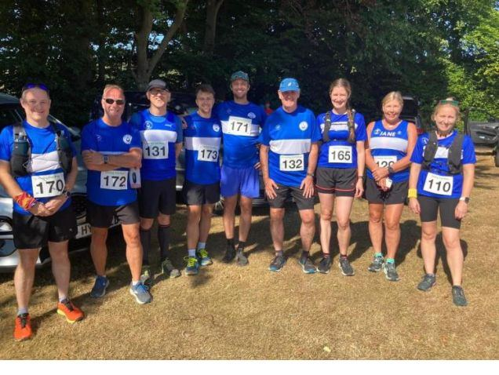
Ellice Solomon (1.54.08) Jane Nockemann (1.56.54) Vincent Dunningham (1.58.08) Gina Ledger (1.58.08) shout out for Gina who took a tumble early on but still finished supported by Vince. We gathered to applaud the winners prize giving after the race. I cradled my £10 worth of cakes I had bought for the family when it was announced ‘ All cakes now 50p’ … never mind proceeds for the day went to the very worthy Rosemary foundation . This is a great race will definitely be back next year
From Edition 16: Autumn 2022
Thwow Him to the Gwound Woughly Centuwion! by Ian Jones
I have a love/hate relationship with the hills at QE country park, or to be more accurate I hate them; I just seem to go slower and they get steeper every time I run there.
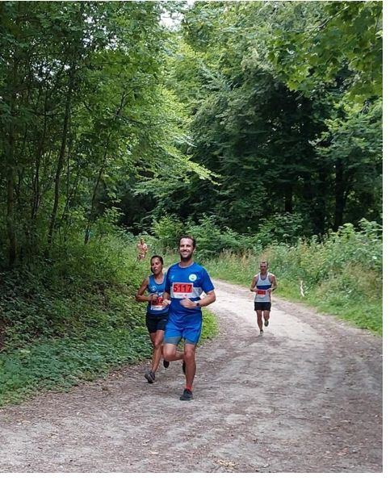
This time it was for the Summer XC race and I’d made a deal with myself that I’d walk up the hills when they got too much (all of them!) and run down at speed to make up for the lost time. I was running at my expected slower pace and just getting in to the last mile of the course when I became lazy and didn’t lift my foot over a root sticking out of the ground, down I went on my right with a loud “ooof!” and the breath knocked of me. Sue, the marshal I’d literally just passed heard me and was great with making sure I was okay. I’m fine other a very small graze on my knee and elbow, just my pride was damaged; up I get and walk for a few steps to get my breath back and settle down.
As an aside, whenever I fall on a trail course, becoming more frequent in recent years, I’m always reminded of the scene in Monty Python’s Life of Brian where the Roman Senator orders the Centurion to “thwow him to the gwound”, “roughly Sir?”, “yes woughly Centuwion”, I don’t know what triggers the connection but there it is.
Time to get going and I extend my stride ready to run; only to hit another root and go down again, only this time on my left and with a harder landing than the one just 20 steps previously. This one hurt; my left elbow, knee, hip and shoulder were grazed and or bleeding, not badly but enough for me to lie there for what seemed like ages but probably only a few seconds.
Up I get again and get my breath back, and set off again only this time a lot more gingerly and respectful of the ground in front of me. The rest of the course was spent lifting my feet over every stone, root, leaf, blade of grass, ripple in the ground……..
Two funny things, to me anyway, happened as a result of my falls; the first was that every marshal I met afterwards was very solicitous of my welfare, enquiring if I was okay and did I need any help or a stop, weird I thought it’s almost like they know about my fall – little did I know Sue had group messaged everyone to that exact effect. Thank you to all the marshals you were fantastic!
And the second funny thing was that a very nasty looking dark damp patch had materialised on the left of my running shorts, I’m thinking what have I done to myself or even fallen in? Until I realised that I’d landed on an energy gel that was in my pocket and it had burst, oozing an orange sticky mess down my hip and leg – not pleasant I can tell you.
So the lesson here is whenever you see me fall at a XC race just think of the Life of Brian; he’s not the Messiah, he’s a very naughty boy who thwew himself to the gwound woughly!
From Edition 16: Autumn 2022
My Quest for the Vest by Kirsten Walton
When I was in the T/A (Army Reserves) I hated running. I was known for saying “I can’t wait until I leave and I’ll never have to run another mile again!” Time came though when I wasn’t being forced to run that I actually missed it so started going out 2 – 3 times a week, 2 – 3 miles. I was then asked by my friend Sarah to try Pompey Joggers with her. She’d been invited but didn’t want to go alone. Nearly 20 years later, I’m still there and she left after 2 weeks! I remember my very first Saturday when the indestructible Dave Byng told me we would be doing 10 miles.
I nearly collapsed with the shock but he re-assured me, run at a pace you can chat at, laugh, giggle and enjoy it. I was ecstatic to complete 10 miles and I had enjoyed it. Fast forward a few years and the inevitable question of a marathon was raised. You’ve got to do 1, every runner has to do 1. London was entered and entered and entered (and to this day I’ve never done it) but Brighton was decided upon in April 2013 with my sunflower Georgina Lewis and the amazing Irene Cruickshank, who’d both run marathons before. At this stage I was consistently running 10 min mile pace, having completed the GSR in 1 hr 40 mins, two years running.
You can imagine my total shock and absolute horror that I then completed the Brighton marathon in over 5 hours. I had lost all motivation at about 18 miles. I hated the route and literally walked for about 2 miles. It was a boiling hot day and at the end, George was literally throwing up and Irene’s blisters were so bad she couldn’t even walk to the car. Queue the words “whose stupid bloody idea was that (George!) I’m never doing that again!!!” A couple of days passed, the aches, the pains, the disappointment and then the post-race thoughts – what did I do wrong, what could I have done differently, blah, blah, blah.
By this stage, I’d met Nikki Taylor (AKA the training guru and font of all knowledge) who said I’ll get you through in under 5 hours. And she did, 4hrs 48 the following year, knocking 22 minutes of my previous time. I was on a total high. Next followed the Portsmouth Coastal in December 2015 which for various reasons made me feel totally inadequate as a runner with the Race Director moaning that we’d taken too long and he wanted to go home! The following year however George discovered White Star Running. An amazing running company who never make you feel like you shouldn’t be there. Everyone is welcome. Let’s do Bovington she said.
It’ll be fun she said. And it was. George, Nikki and I had an amazing day, even though they did try to drown me. I should explain George is 5’ 10” and Nikki is 5’ 8”. At a lowly 5’ 1” they take great delight when I’m up to my knees in mud, before collapsing in fits of giggles, photographing me before then deciding to help me out! Cheers ladies. Anyway, Bovington was where my love of trails came from. No pressure. If you walk, you walk. If you run, you run. If you chat, you chat. I remember being at 23 miles and we were talking (still!) and we passed a man who was walking and really struggling. My God, he said, you’re still talking!!!!
The following year Nikki had the next bright idea. I want to run round the Isle of Wight but I don’t want to do it alone so we all need to do it. I’m so easily lead! I’m so glad that race is no longer run as if we went back we could never re-create the fun we had. Two days of running round the island, seeing all the boats and yachts, eating ice cream, getting lost! Keep the sea on your left they said and you’ll be fine. I have no idea how we get lost (probably talking and not concentrating me thinks!) but anyway we won the prize for the most miles covered.
Queue a couple of marathons later and George casually said “you know we could try for the 100 marathon club”. I literally stopped dead in my tracks “George, have you totally lost the plot, we’re pushing 50 you know!” I know she said, but it’s something to aim for! And there the seed was planted.
In 2017 I entered 12 marathons and found that I’d got to the stage that I was just ticking over doing one marathon a month and 10-12 miles each Saturday in between with the support and encouragement of the legend that is Bob Maguire. Bob entered a couple of races with me and would always wear the coveted 100 marathon t-shirt. I wanted one.
2018 and 2019 saw me complete upwards of 20 marathons each year, mainly off road with the same mantra. Enjoy, enjoy, enjoy. Walk the hills, jog the flats, run the downs. By the time the pandemic hit in March 2020 I’d completed 65 marathons but went straight back to them as soon as events allowed. I’m never going to be fast, I’m a plodder. I’d love to run a sub 4 hour 30 but to do that I’d have to cut down the races and have a rigid training plan and that’s not for me. I enjoy my running. I start off slowly and let everyone pass me. Don’t get caught up with the pack as before you know it, you’re running much faster than you should be. Huge mistake. And eat, my go to food is cheese and pickle sandwiches and currant buns!! It works for me. Proper food.
Above all, enjoy your day. When I get concerned over races, I very nearly didn’t go this weekend to a 50k ultra called Devils Lite but I put my shoes on, turned up, and had the best day out on the South Downs. A lot of people say I’m determined but it’s not determination, its stubbornness for one thing but above all, I just tell myself it’s a day out in the countryside and we are so very very lucky to have such stunning scenery in this country, we really should get out there and appreciate it.
Happy running everyone.
From Edition 15: Summer 2022
My First Half Marathon by Sue Hyson
On Sunday April 3rd I ran my very first half marathon. The London Landmarks Half. When I started running in 2018 (after my daughter in law suggested I ran Race for Life with her) I used the NHS C25K app to go from nothing to achieving a 37 minute 5k in 3 months. If anyone had suggested at that time that I would be running 21k (13.1 miles) in 4 years time I would have said they were mad! But I did it! I ran the whole thing and then 2 weeks later broke my Parkrun PB with a time of 27 minutes 54 seconds, a whole 10 minutes off that first 5k. I'm now fitter at 64 than I was at age 44 and hoping to stay that way for a few years yet!
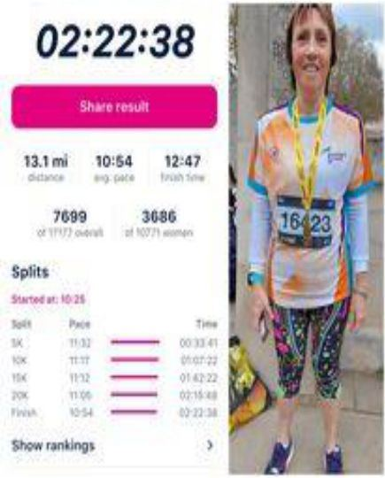
From Edition 15: Summer 2022
Whole Club Treasure Hunt Run by Celia Oxley
A couple of weeks ago the whole club got together for a Treasure Hunt Run organised by Tony Conway. Everyone gathered, in their club shirts, in the car park at the top of Farlington Avenue to get their instructions. We got into groups of no more than 12, the reason for this became clear at the end. We were given a list of cryptic clues to things we had to find on our run. All of these were in and around Portsdown and Purbrook. There were also things to take a photo of.
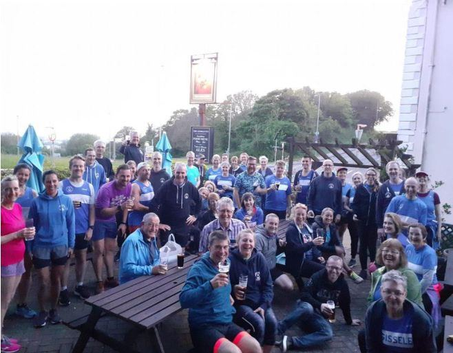
So off we all went in high spirits. It was great fun trying to find the answers. There was a lot of good natured rivalry and hilarity between the groups. Anyone still looking for a pineapple?
After about an hour we all re-grouped at the George Inn at the top of Portsdown Hill to have our efforts marked and, more importantly to rehydrate !!!
Everyone’s answers were collated by Peter Collins and Jenny Campbell, a big thank you to them for their hard work. It wasn’t easy when there was a fair amount of bending the clues! Tony acted as the final arbiter!
Tony announced the results in reverse order and every group got a box of chocolates to share except the winners who got a box of 12 Donuts, hence the need for groups of no more than 12!
The winners were PJC Pacers Pete Birch, Tim LeComte, Glenda Jones, Michael Turner, Sally-Ann Denton and Sam Cleare. Well done to them all and to everyone who took part.
Huge thank you to Tony, (and Eileen) for all their hard work in planning it.
It was a wonderful evening and great to see so many members joining in!
From Edition 15: Summer 2022
Thames Path 100 by Sandra Tullett
Running the Thames Path 100, for me, was the end of a journey that started 5 years previous. In May 2017 I attempted Thames Path 100 in preparation for an even longer event that I had planned in June. I ran too fast from the beginning and was also coming down with a cold. I ended up pulling out at Henley, the half way point, exhausted and deflated. In November 2017 I was diagnosed with breast cancer and although I managed to continue to run throughout my entire treatment (a book about this journey is currently in progress) I did not get back to ultra running until 2019. I planned to run Thames Path again in May 2020 but Covid prevented this and when the race was finally back on in September I could not take up my place due to injury.
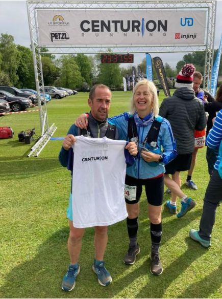
So finally, in 2022, 5 years later, I was again at the start line of Thames Path 100. The Race is run entirely along the Thames Path, starting at Richmond, going Past Hampton Court Palace and Windsor Castle and Henley for the first half and continuing on through Pangbourne, Goring, Abingdon and finally finishing in Oxford.
I was nervous about whether I could finish as I had been injured from September 21 through to February. I was on the mend, but I was unable to train as much as I really needed to for an event of this magnitude but I really did not want to pull out of yet another event. I was not as fit as I was in 2017 and I had some back issues that were concerning me. Even though I accepted my race could finish early I was going to do my best to prevent this from happening. I planned to start slow and my first goal was to get to Henley (51) miles and get out again.
We were fortunate to have dry weather forecast for the entire 28 hours that was available to complete the race. I made sure that I ran slow enough during the first hours so that I did not end up with any stomach issues. This worked well but I still had a period from 30 to 38 miles where I walked more than I ran. I find it is common for these events, to have a rough period at about 30 miles so it did not come as a surprise. I sucked on a ginger sweet to keep my stomach settled and just kept going despite the negative thoughts going through my head.
Eventually I found that I was able to run more than walk again and I continued on to Henley, arriving just before 8pm. The first half had taken me 10 hours and 20 minutes.
From this halfway point I was allowed to have someone run with me and was also allowed to have my crew see me at specific points along the route. My husband, Russ, and his friend, Glen, were my support crew and they did a great job of looking after me. The ball of one of my feet felt sore so this was covered with a plaster and I changed into some thicker waterproof socks. This was definitely one of the best decisions of my race. Despite, it being dry overnight, there was a lot of dew that built up on the fields and many people had foot issues as a result which for some meant they did not finish the race.
My waterproof socks prevented me from having any foot issues in the second half. I did feel cramp coming on in my legs so I took some salt tablets and, with some help, stretched out my legs. I walked out of the checked point with a small bowl of pasta and some grapes to eat on the way and once I had finished I started running again. I was really pleased to get out of Henley and continue on my journey.
Glen was now my buddy runner for the next 28 miles. Having someone with me and some comfy socks lifted my spirits and I did a lot of running at this point. By the time we got to the next checkpoint at Reading (58 miles) it was dark and we needed a head torch to light up our way. At this point Glen would run alongside me, opening gates for me and letting me know if there were any low hanging branches or any tree roots that were going to be a hazard. Even though the path is essentially flat there were some steps and I found I had to pull myself up them but also be careful not to get cramp in my legs.
I found that throughout the night I was able to stick to a slow run of roughly 12-13 minute mileing and would walk only to eat and drink or pass through a gate. (At this point I don’t think I paid sufficient attention to my nutrition and hydration and this led to difficulties later on). It was a mild night and I only needed a thin long sleeve top on to keep me warm. At about 70 miles we had to run through a wood where the path was undulating and riddled with roots jutting out. Progress felt quite slow through this point. At Goring (70 miles) I managed some pasta with cheese and a cup of soup which I ate and drank while we walked.
We reached Russ at 78 miles in a place called Benson around 2:30am I was having a bit of wobble at this point because I thought we had missed him and I had been looking forward to a change in buddy runner and a cup of coffee. Russ had got cold waiting for me but we managed to run about 13 minute miling which was enough to warm him up a little. As daylight gradually appeared I was finding it harder to run and I was finding that I could not see straight due to the tiredness. I had a cold can of coffee and some pro plus to help me but still found it quite difficult to focus.
The next few miles were fields with awkward narrow trails. However, I was grateful that the paths were hard rutted mud rather than the slippery mud that we would have had if it had been raining.
We came off the paths at a village hall at Clifton Hampden (85 miles) where I had some warm soup. I had put on my rain jacket by now for extra warmth as my progress was now slower and I was getting cold as the sun had not yet come up. However, the sun was warm when it did finally arrive but this warmth added to my sleepiness.
Russ started to work out how far we had to go and whether I could get in in under 24 hours. He worked out that it was possible but I needed to be doing at least 15 minute miling and my walking was slower than this so Russ would get me to run for a few minutes in between the walking and this would make sure that I kept below 15 minute miling. We reached Abingdon at 91 miles where we had 5 miles to the next checkpoint. We continued to do some short spurts of running to keep the average pace under 15 minute miling until we got to the last checkpoint at Radley.
The volunteer told us it was only 4.5 miles to go and they had run it the previous day so they were certain of the mileage. Russ worked out that from here I would finish in under 24 hours even if I walked at 20 minute miling so after grabbing some fruit from the checkpoint we walked the last 4.5 miles in until the final turn into the finish area. I finished in 23 hours 36 minutes and received my ‘100 miles – in one day’ buckle. I was exhausted but elated. I felt OK but when I stopped I began to feel faint and lay down with my feet up.
I needed a medic who diagnosed dehydration and gave me a saline drip which made me feel much better. Lying on the floor my body had completely seized up and it was a very painful trip from the floor to the back of the car where I lay until I got home. A few days on and my body is healing quickly. I am chuffed to have finally managed to get a ‘100 miles In one day’ buckle and to finish a race that previously I had DNF’d. I am amazed what the body can do even when not fully trained. I think the experience I have gained from previous events helped me get through this.
Doing 100 miles may be a daunting task but it is so worthwhile, full of emotional and physical highs and lows. At the time it seems so unbelievably long, but when you look back it seems like such a brief everything worthwhile. Now time for a little rest before preparing for the next one!
From Edition 15: Summer 2022
Salisbury 10 by Debbie Pentland
Well! we couldn't have asked for better weather. Cool, sunny, light winds and dry. The Salisbury Ten NEVER disappoints. Being a league race Bob and I had hoped for a bigger possee of the Blue and White Clan, although to get a place in this one you have to be quick...each year there's a waiting list. Bob thought his luck was in being the only male PJ with 4 girlies 😁 and then we spotted Michael who we didn't recognize as he was wearing his club vest😂lol...( Sorry Michael I had to get that in lol) We later bumped into Peter Coote, so 7 of us lined up for this scenic race.
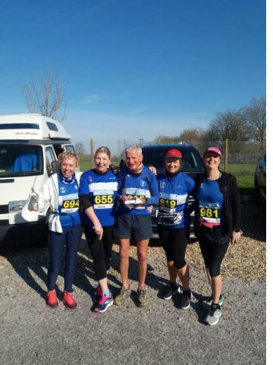
Peter Coote 1.04.51 Michael Rae 1.14.13 Bob Pentland 1.19.48 Jane Knockeman 1.41.34 Debbie Winn 1.56.39 Alison Smith 1.56.40 and Me...2nd last (but hey I get my monies worth 😂) 2.11.40 A field of 746 runners in all. Where else could you spot Llamas and Camels along the way? It’s a lovely meander through the quiet country lanes of the Woodford Valley, the sound of bird song following you all the way as well as the sound of the river. Passing beautiful thatched houses and almost traffic free roads. The finish is on the track which gives you that little bouncy lift to cross under the gantry for your free finish picy, your wooden eco friendly medal a banana and a choc bar.
The techy t shirts are given out at the start. They're Male/Female sizes and you receive the size you stated on your entry form. At a mere £18 entry fee this race is hard to beat. So If you fancy giving this one a go next year...GET IN EARLY...
From Edition 15: Summer 2022
PJC at Cyprus
It was 2 years ago we decided to go to Cyprus for the Half marathon, at the time we were fit and ready to do the distance. We were ready to go, the covid scene was just starting and the night before the flight there was plenty of messages back and forward shall we go or stay home, in the end we decided to stay home, which proved to be the right choice. So, 2 years later but unfortunately a lot less fit and with much regret and greatly missed, one of our group couldn’t make it and half the others changed to 10K. Early morning, we arrived at the airport, checked all had relevant paperwork and passports, all ok, but then Brian decided to move his passport and then panicked when he couldn’t find it, so after going through all his bags and pockets he eventually remembered where he moved it to.
Check in done, time for breakfast and wait for boarding, all aboard and off we go. We arrived in Cyprus but due to long queues to meet regulations, we missed the local bus so checking taxi prices against hours wait and coffee we opted for taxi, we had to have 2 taxis, so the girls took one and we had the other. It was after the taxis dropped us off that Karen realised, she had left her handbag in the taxi, now whether it was fate or foresight, that on their way Alison asked for taxi phone number for return trip, that we were able to contact him, and he returned with handbag intact.
Ok, booked in, apartments sorted, we then decided to walk to race headquarters to collect our numbers and goody bags. The weather was unsettled with rain showers predicted, and on our way there the heavens opened, and we got caught in a heavy shower, not what we expected at all.
Sunday morning and walking in the rain we made it to the start line, at times the sun made a brief appearance followed by gale force winds, which was blowing against us, followed by hailstones, sleet, rain, and the very occasional sunny spells. But nothing stopped the good old Pompey jogger spirit amongst us.
There were various successes amongst the Pompey jogger’s tribe that went to Cyprus. Emma Bird came 2nd in age group for Marathon
Sandra Tullet came 2nd in age group in Half marathon
Isabel Gardner came 2nd in age group in 10K.
The rest of us were successful in our own rights by actually completing the races, Jane Knockerman, Alison Smith, Debbie Winn and Loraine Stewart completed the half marathon and Karen Clark, John Shepherd, Bert Shepherd and Brian Rees completed the 10K .
Supporting us were family members and Pompey Joggers Del Roberts and Sam Goodchild who also took some of the photos. Race completed, plenty of hot chocolate was required to warm us through.
From Edition 15: Summer 2022
A Sunny Day at the Houghton 12K Trail Run by John Shepherd
The Houghton trail run is a lovely trail run in the countryside of Hampshire and the Test valley. Portsmouth joggers were well represented. The start is a lovely 2K uphill climb, but you then get lovely views across the downs of the test valley, during the run you cross the river test over a different collection of bridges and go past a well preserve train station and signal box at Horsebridge. There is an option to cross a stream by a bridge or to go through the ford, as it was a sunny day most runners chose to go through the stream and most refreshing it was. This is a village organised event well signposted and friendly marshals and in the village hall field at the finish area there are refreshments with a good choice of homemade cakes, too nice to resist, so calories burnt on run, put back on with cakes.
The run completed, some people made the most of the sunny weather and had a picnic but for us it was time to visit the local pub for a drink alongside the river, Everyone said this was a lovely run and hopefully return next year.
From Edition 15: Summer 2022
Memorial Run for Ashling Murphy by Lisa Edwards
Ashling Murphy was 23-years old when she was killed while out jogging, with her body found on the banks of Grand Canal in Tullamore, Co Offaly, Ireland, on January 12. After hearing this news I felt it pertinent to do something as a collective to honour her memory as “she was just going for a run”. On Friday 21st January at 7pm the Portsmouth Running Community came together as one. A 2 minute silence was held and around 250 joggers from various running groups (Portsmouth Joggers, Baffins, Gosport, and Liss to name a few) came together and ran 5K along Southsea Seafront. No one should fear running alone in our community. With the amazing running community in Portsmouth there is always someone who will run with you if you can’t make a club night run.
From Edition 14: Spring 2022
Memorial Run for Ashling Murphy by Tony Quinn
We were all extremely saddened by the tragic news of Ashling Murphy who was murdered whilst out for a run near her home in Ireland. One of the clubs Mental Health Champions, Lisa Edwards contacted me on the Saturday following the tragic incident to ask if there was something we could do as a club to pay our respects to a young woman who lost her life whilst out doing something we all take for granted. This was a tragedy that affected many of us and not just PJC runners. It was felt that it would be appropriate to organise a memorial run that would involve the running community in and around Portsmouth.
We contacted the running clubs in and around Portsmouth and invited them to meet at Speakers Corner on Southsea Seafront on Friday 21st January at 7pm for a mass 5k memorial run along the seafront. The Portsmouth News published an article highlighting the memorial run and it was shared widely on social media. It was very moving to see so many runners from a range of clubs as well as lone runners who just wanted to come along to pay their respects. It was so nice to see runners from different clubs running alongside each other and paying their respects to a young life ended too early, as well as being an excellent example of the solidarity of the running community.
From Edition 14: Spring 2022
From October's C25K to the Coastal Half Marathon by Nicky Lake
In October last year I decided to start the c25k after losing motivation and not running for over 2 years. I thought getting back to running wouldn’t be too hard. After struggling through the C25k I was close to giving up and I didn’t think I would make it to the graduation run. However, I kept going and completed the graduation on 11th December. I then decided to slowly increase my distance by going out solo running. After a few weeks I’d made it up to 10k One evening I’d decided to go out for a run so I put my earphones in and went running I got to 7 miles and was feeling good so carried on and I got to10 miles running continuously.
Despite running the Great South Run twice and running a half marathon before I’d never run more than 10K continuously. After running 10 miles I was persuaded to enter the costal half marathon, with only 2 weeks to prepare. I turned to my Dad for help, knowing he would keep me going when I wanted to give up. He took me out for a long training run after which I was feeling more confident in completing the half marathon. The day of the half arrived it was cold, windy and rained during the run. I was enjoying it up until 10 miles when it then felt impossible to carry on running into the wind and rain and I was wanting to give up. With my Dad running by my side, pushing me to carry on I finally crossed the finish line and knocked over 40 minutes off my previous half marathon time.
From Edition 14: Spring 2022
Reflections on Our January C25K Journey by Michelle Lobo
Needing to get back into fitness, the thought of rejoining gym classes was not appealing! Having never run before, I was intrigued after a conversation with Steve H who passionately advocated for running. So decided to go for it and join the PJC C25K I’d seen on FaceBook. I understand we are the first group that have started in the depths of winter but so far the weather has been kind to us (phew!) and being out in the fresh air is invigorating. 11th January saw our nervous but excited group meet up for the first time with the PJC under the canopy at Lakeside. Immediate impression was the welcoming community and camaraderie, no matter what your level of fitness or competence.
This is evident every time we meet and it has really helped us settle in as a new group. First session commenced and we soon learnt (just like puppy training) that the whistle meant work (run) or rest (walk) and Tony must have felt our eyes on him watching for that magic moment when his watch bleeped and the whistle was raised to signal time for a recovery walk! As the weeks have gone by, our numbers have lessened a little and our fixation on the whistle has lessened too! But here we are completing week 7, able to run 25mins without stopping (a feat that seemed far out of our reach on week 1) and our “graduation” run is in sight, and feels completely achievable.
Thank you all for your enthusiastic ongoing support, whether it be leading our group, running with us, or just the encouraging words as you pass us around the Lido. Our conversations have already started on which groups to move into once we have completed week 9. One thing’s for sure, we’re not stopping running
From Edition 14: Spring 2022
Seville Marathon 2022 by Neil Dyer
It was with great trepidation that John Gosling, Richard Bailey and Neil Dyer and their supporters went off to Seville to either run or watch the Seville marathon. This wasn’t pre-race nerves, it was due to flying through a force 10 gale. At the height of Storm Eunice the pilot reported that we were waiting for a gap in the gusts to take off….and after a rocky 10 minutes, we were away. Landing proved to be a far less traumatic event. Having completed literally zero training and suffering with injury, Neil, on arrival, decided he would go for the start but try “jeffing” or even walking if necessary. Caution was taken at the expo – no we weren’t going to try to emulate the marathon record breakers over 400 metres.
Race preparation consisted of walking for miles (sightseeing), enjoying tapas, drinking beer and downing shots. Perfect – straight out of the manual. With the temperature reaching 24 degrees, it was a little warmer than at home. With the arrival of raceday, the temperature had dipped to a lowly 10degrees (for the start). We did the necessary prerace checks (commonly known as queuing for the toilet). We reached our designated corral with 10 minutes to go – the latest John had been in position for a marathon - All that waiting around is overrated. And we were off… The support for the 10,000 entrant race (usually 20,000) was superb, with music and cheering through most of the route.
Neil eventually found a drinks station to pick up a gel at mile 13 (after all he wasn’t intending to run), but was setting a surprising 8:30 mile pace. John and Richard powered on at a steady 8 minute miles. These pacing strategies seemed to be working, with all three picking off runners during the second half. With the end in sight John powered through to finish in a very commendable 3:32, Richard with teeth gritted, finished in 3:42 and Neil, having run throughout made it in 3:47. All three runners could feel very pleased with their performances. What better way to celebrate than, following a couple of beers, a climb up a tall tower for a city view (not recommended) and a flamenco show (not participating) Thanks to Seville 2022 for a great marathon in a beautiful city, with lovely weather and perfect company.
From Edition 14: Spring 2022
2021
Gosport Half Marathon by Sue Clarke
I ran the Gosport ½ Marathon for the first time this year. I had heard from PJC pals how good it was and that it was very flay (key selling point!). So, I thought I would give it a go.
I was not disappointed: it was very well organised with super friendly marshals all the way round and cake at the end! Some people don’t like it as it is a two-lap course, but I enjoyed seeing my speedy PJC pals 2 or 3 times on the course to wave and whoop at, whereas I would usually see them head off into the distance never to be seen again!
All-in-all a great ½ marathon and I would definitely recommend it to others in the club who have not done it yet.
From Edition 13: November 2021
Gosport Half Marathon by Helen Sumbler
Gosport half marathon...an amazing morning, on the day everything was aligned for a fab race..( after feeling not great on Saturday didn't even think I would make the start line)..amazing running buddies.... special thanks to Sue Clarke for keeping me going and such an enjoyable run.
Such a well organised race so much support from the marshals. Lovely to see Mary Short and Isabel Gardner on route along with George Garratt and Kiernan Easton ....PB too.. result.
From Edition 13: November 2021
Cross Country at Bourne Woods by Simon Evans
Between 1992 and 2000 PJC dominated the Southern Cross Country League, winning the league a total of 6 times. Today 6 members of PJC attended race number 2 of the Southern Cross Country League held at Bourne woods (4 males and 2 females) This was not enough to form a male and female team and gain points in the league. But as Aelius Maximus Decimus Meridius said, whilst standing on the slopes of Bourne woods and facing a barbarian horde, "falling down is how we grow, staying down is how we die" Onward... There were a total of nearly 300 runners in all on a beautiful if cold and hilly course. Well done to all PJC members who ran today, you did the club proud and flew the flag for PJC (even if that flag had missing parts and wouldn't stay in the ground, we will get it repaired for next time).
From Edition 13: November 2021
Racing Snakes Complete the Slam! by Will Taylor
During 2021, Chris McCauley and I have competed in a series of four, 50-mile races organised by Centurion Running, which comprise the 50 grand slam. This represented a step up from 50km, however, COVID scuppered plans to test the water over 50-miles in 2020. We started the slam, never having run the distance, not knowing how our bodies would react.
We spent the spring building up fitness, with increasing length long-runs, mixed with threshold sessions and lots of easy miles.
The first race was the South Downs Way 50 in mid-April, a point-to-point event from Worthing to Eastbourne including 6,000ft of climbing. We were lucky with the weather, cool, calm conditions, under a bluebird sky. The race went almost perfectly. I was worried about my body failing post the 30-mile mark (previously suffering with cramp around marathon distance), however, the miles passing without incident (thank you Precision Hydration). We hoped that a sub-9-hour finish might be achievable, but the race was going so well, we adjusted the target to sub-8:30! Leading to crazy sub-8mm miles nearing the finish, descending the South Downs onto the streets of Eastbourne. We crossed the finish line together arms outstretched in 8:29:26 in 39th and 40th places. Quite the 50-mile debut!
The North Downs Way 50 was five weeks later. Barely recovered we both complained about tired legs early on. Another point-to-point affair from Farnham in Surrey to Knockholt Pound in Kent, across the Surrey Hills, with "Only" 5,500ft of elevation. Whilst the South Downs are open and runnable, the opposite applies to the North Downs. The narrow route had many twists and turns, with low branches, roots, mud, gates, and steps (up and down). Rhythm was a real struggle. I suffered with tiredness around 35 miles. I didn't want to run or eat, Chris had to drag me round. However, we rallied and finished together in 08:51:05 in 35th and 36th positions. An accomplishment on such a tricky course, also a mile longer than SDW50! (All the races aren't exactly 50 miles).
Chiltern Wonderland 50 (a scenic hilly loop beginning and ending in Goring-on-Thames) This wasn't until mid-September. I'd hoped for some quality training over the summer, however, a COVID ping and subsequent injury meant I completed minimal consistent training. Chris, on the other hand was in excellent shape. This played out on race day, Chris was stronger than me, we parted ways at ten miles. He ran an extremely strong 8:39:50 for 14th place overall! It was hot and runners struggled to stay hydrated, some fell apart in the second half. I struggled with the heat switching my nutrition and hydration strategy in the tough middle miles. I persevered, finishing in 8:56:26 in 22nd position.
The final race was at Wendover Woods in Buckinghamshire, with five 10-mile laps, each with 2,000ft of elevation! 10,000ft of elevation in all! Very hilly!! This time Chris had pre-race injury and illness issues, I on the other hand was fighting fit off a block of pure hill training. We started steady, letting lots of runners go on the first lap, parking the ego, and reeled them back throughout the remaining laps. We split on lap three, I was feeling stronger than Chris and hiking the hills more efficiently.
I continued to progress through the field, finishing in 10:12:49 in 21st place. Chris found a second wind (after lots of jelly babies & coke) finishing 28 minutes later in 31st place.
Finishing the four races meant we completed the 50 grand slam. 75 prospective slammers finished SDW50, but only 45 finished all four races. In the overall grand slam standings (where finish times are combined), I finished fourth and Chris finished sixth. A result to be very proud of. Completing the slam wasn't easy. Staying fit for a year is hard. We put lots of training into the journey, made sacrifices, and have understanding and supportive partners.
However, we're not the first Joggers to have completed it, that honour (I believe) goes to Teresa Baverstock who successfully finished the slam in 2018. I hope we might inspire Joggers to give it a go in the future. It's a wonderful challenge.
From Edition 13: November 2021
London Marathon by Sam Saunderson
London Marathon, We arrived in London on Friday and headed straight to the Expo, quick and easy to get around. Liked the fact that you could change your Tshirt size as lock down has not been kind lol.
On the day my Jeffing Partner was at the blue start (Blackheath) and I was Red (Greenwich)... luckily we started at similar times... At my start I never had to queue for the loo and there was plenty of room to remain safe. We set off on time and I was flying around jeffing style... I did have to remind myself I was meeting Hannah at the 5k mark... I got there slightly earlier due to soaking up the atmosphere but then saw Hannah and Andy come round the corner!! I was like a big kid jumping with joy and the crowd joined in as they knew I had found my jeffing partner.
Andy continued with his own race at this point leaving myself and Hannah to chat rubbish and start running together lol.... We jeffed our way around, taking pictures, singing and dancing and just soaking up the amazing atmosphere doing 60/30 ratio. From 17 miles we just went with whatever felt good to get the job done, still jeffing. I believe we both hit the wall at parts but just kept moving forward... We had this and the crowd support spurred us both on to finish in a comfortable 6hrs... planned time. We enjoyed a well-deserved bottle of champagne after.
From Edition 12: October 2021
My Virtual London Marathon by Tim Le Comte
A brief report from my ‘Virtual London Marathon’ Kind weather was forecast and I was helped by fellow joggers to complete my first marathon - measured by the official app . Set off for the first of 2 laps from the Mountbatten Centre at 8.30 accompanied by Craig Lodder. The lap went well keeping a steady pace of 11 min miles. Toward the end of the first lap, Simon Evans and Roger Davies joined me as Craig dropped off to get home at the half way point. Roger completed around about 8 miles leaving Simon to finish with me . Fatigue set in at 22 miles and I lost a minute or so a mile. Finish came in at 4.47 on the app - I haven’t been as happy to stop before. Great experience that I’m sure to do again.
From Edition 12: October 2021
Sue, Helen and Debbie's Virtual London Marathon by Celia Oxley
On Sunday 3rd October Sue Clarke, Helen Sumbler and Debbie Marks set off to do a virtual half marathon round Denmead. A rolling support crew of fellow runners joined them throughout the day. The first support crew arrived at about 9.00 to find that they had already started from their homes some time earlier, to get some mileage under their belts before we got there. After three circuits of a 6k circular route there was a lunch refuelling break at the White Hart in Denmead. After lunch the run continued with a change of support crew who ensured all three ladies completed their Marathon. Well done ladies. It was a privilege to be part of your support crew.
From Edition 12: October 2021
Run Silverstone 10k by Sue Hyson
On 10th October Steve and I ran the "Run Silverstone 10k" which took us round the Grand Prix circuit. It was our first real (not virtual) 10k event and it was lovely to see so many people out enjoying the experience. 6000 people took part, either running 5k, 10k or a half marathon or taking part in the wheelchair half marathon. The sun shone too! Steve completed it in 59 minutes and me in 1hr and 2 minutes which we were both pretty happy with.
From Edition 12: October 2021
Great South Run 5k by Lou Newman
GSR 5k was my first ever race back in 2013 before joining Portsmouth joggers so I like to try and keep running it when I can. The morning was miserable and was hammering it down until the race. Wet roads but perfect running conditions. The atmosphere was great. Nowhere near what you see on the Sundays 10 mile though. Lovely to see so many smiley Marshall’s and cheers at the finish.
From Edition 12: October 2021
Great South Run by Sue Clarke
On Sunday 18th October, I with many other PJC’ers, descended on Southsea seafront to run the Great South Run 10-mile event.
I caught the train to avoid the inevitable traffic jams on the way home and bumped into 4 joggers on the train which set the scene for meeting lots of jogging friends either in the start pens, on the course as runners or volunteers (thanks you to all the volunteers), or at the Wave 105 tent who very kindly let us leave our bags there and fed us chocolate after the run.
I received my usual, but very welcome, soaking at the Winston Avenue water station – this is an annual part of the fun of this run – try wearing a jogger’s vest and getting through that station dry! I got hugs and a ‘20-meter running hug’ at the 10th hole water station. Well done PJC for manning these stations every year.
The best parts for me are the Batala Drums, the Bag Pipes, and the great atmosphere round the whole course.
I am signed up for 2022 and looking forward to it already.
From Edition 12: October 2021
The Southampton Half: A Long Plod in a Pompey Vest by Steve Jack
It was so good to be back doing a proper organised run. The first for a year. Doing the usual race-day rituals again. Seeing lots of other folk in running gear heading for the start. And waiting for the start. I’m always just simply happy waiting for the start of a run. I’m nervous before then, then just happy. I love it. There was no attempt by the organisers to put the faster runners nearer the front, and the half-marathon and full-marathon shared the same start, so I elbowed my way fairly well forward. In fact there was no real need for that. After the first 300 meters the runners around me were all around the same pace.
Or faster, so I wasn’t slowed by traffic. It’s an interesting course. The start is bang in the centre of Southampton, in Guildhall Square, from where we run straight down Bar Gate, the main street, towards the docks. Then up and over the Ichen bridge for the first time: lovely view from the top, but not sure it was worth the climb. There were a few folk waving scruffy hand-drawn covid conspiracy theory placards at the runners at the start of the bridge. Of course, none of the runners stopped to debate the issue. Some made their views clear, with shouts of “rubbish”. Then a suburban section, and a nice path through a park with views out over the Solent, then back up and over the bridge.
The crowd support was great, and very welcome. More anti-vaxxers at the bottom of the bridge, so I sang “Spot the loony!” as I went by. Childish, I know, but the best I could do at the moment. Then on through some side streets to St Mary’s Stadium, home of Southampton FC. I’d last been there in, I think, 2010 to watch Ipswich Town, my club, loose an FA cup match. There were another rash of covid idiots outside the stadium, and the runner next to me and I both made our view known: I’d progressed to singing “Trust the nurses – get your jab”. We got chatting, until we got into the stadium, when he started singing very loudly “We hate Pompey”.
I just smiled at him and said “just so you know, have you seen which vest I’m wearing?” he gave me a funny look, then looked at my PJC vest, then we both had a laugh. Nice guy: I was running slightly faster, but we spoke again on the course, and he came up and chatted just after the finish. I wasn’t running that much faster. I’d set off pacing it at 4:25 m/k, which would just get me a PB. That was optimistic, but possible. Training had been a mixed bag. Shorter runs had gone well: 3 ParkRun PBs. Longer runs not so good: I’d done 3 at 18km but struggled to hold the 4:25 pace.
And soon after half way I struggled again. Partly it was now a really hot day. Partly it’s a surprisingly hilly course: not many big hills, but not much level ground. And partly I’d got something wrong around nutrition or hydration or just running. (My half- marathon PB was the Gosport half in 2018, and other PJC runners will know that was the PB day: flat course, cold but clear weather.) So, a bit after half way, I realised I either slow down now, or stop completely a bit later, so the slow old plod it was. And a long old plod at that. Way back in 2015, training for my first marathon, I set myself the aim of never going for a run somewhere I wouldn’t want to go for a walk.
That is, only run somewhere it’s a pleasure to be outside. And a lot of the last bit of Half fitted that bill. Running through Southampton Common, shaded by the trees, and shaded by the river. Despite that, it was a slog, and I was so glad when it was over. I even managed a finishing sprint over the last 40 yards. Then I found my wife and a cup of tea with 2 sugars, both of which were very welcome sights. I finished 168 out of about 1,800 finishers in the half. Not too bad for an old bloke. 4,000 runners took part in the 10km, half and full marathon.
That’s about half of the number who’d paid for a place. I hope next year there’s a better turn-out. The excellent organisation, and all the support around the course, deserve it. Southampton, I thank you.
From Edition 11: September 2021
HRRL Overton 5 by Peter Coote
If you had been walking your dog past Overton Recreation Ground at 1pm on Sunday afternoon, you could not have failed to notice some of the surrounding roads were temporarily closed to traffic for an event not seen in the village since 2019. Further up the hill, Whitchurch scout troop were organising a car park from which a steady stream of runners, in various stages of undress, were eagerly descending upon the neatly manicured football pitch. The atmosphere in the ground was not unlike a summer fete — clear blue sky and a tropical sun, shone down over a field dotted with race tents and all kinds of colourful club kit.
If you had squinted at the inflatable finish gate you could even be mistaken for thinking it was a bouncy castle in the haze. No one realised at the Ryde 10-mile race in 2020, that it would be the last time we would all race together in the HRRL for the next 18 months. The competition had been greatly missed and so there was much excitement when the tannoy man finally ordered over 300 club runners from all over our region to make their way to the start area for the beginning of the Overton 5-mile race and the opening of the 2021/2022 Hampshire Road Racing League! The race would begin with a mass start in one of the nearby closed lanes at 2pm but you were given the option to start 5 minutes later if you did not feel comfortable standing in the crowd.
Anthony, Simon and I took our places amongst the other runners who were all jostling with anticipation and chatting excitedly. There was little shade to be had in the sweltering heat and I remember one runner near me saying aloud that his watch was registering 25 degrees. As 2pm approached the pack adopted the standard pose of ‘thumb on watch’ and we were off! The race was underway with the usual enthusiasm, however, momentum from the early downhill stretch would quickly fade in the hot conditions and talk of the heat gave way to exclamation about the hills, then to despair about not carrying any water, to finally no discernible talk at all, as everybody appeared to concentrate on the task at hand.
Its’s a picturesque course, which rolls north through the countryside towards Ashe Warren and back again. A significant climb drags itself out between mile 1 and 2, which left me feeling exhausted in the heat and potentially a little delirious, as I was convinced I had already run much further than this. Further on and working my way up another hill I went past the little luminous 3-mile marker and that felt like an achievement because that meant the next one would say 4 and after that one, well, we’re nearly home! I offered a few words of encouragement to a Fareham Crusader on the last hill between mile 3 and 4, who muttered something in return about it being difficult without water.
I could sympathise with him as I thought was probably dehydrated by the last mile from the sweat streaming into my eyes and down my arms, as if from a tap on top of my head. Finally, the undulating miles gave way to a fast downhill fifth mile all the way back to the finish. A gravity-aided second wind helped pick my feet up as well as the thought of the ice cream van waiting for me back at the recreation ground. A slight detour takes you through a small wood and back out onto the road down to the village church and the penultimate corner. As I rounded the church onto the last road, I could see through the fence the football pitch and the bouncy castle finish surrounded by onlookers.
At this point, on either side of the road paramedics from St. John’s Ambulance were tending to a few runners, who were clearly in some discomfort - it was a hot day and dehydration, cramps and sickness were all possible if you hadn’t paced yourself properly or taken enough fluids. The last dash across the grass to the finish line felt longer than it looked. I think the tannoy announcer mentioned Portsmouth Joggers, but I was too tired to listen properly. Overton 5. Done. I staggered away down the funnel gasping and whimpering to my myself, towards a table of bottled water that was calling my name. As is customary post covid, medals were not handed out but collected from another table, so I pocketed one, and then proceeded to pour half the bottle of water over my head before looking around at my fellow finishers.
There were many smiling but tired looking faces, pleased with their afternoon efforts in the sun and now enjoying that post-race buzz of achievement that every runner looks forward to. Some people were sprawled on the grass where they had simply stopped, and others were squeezing together in what shade there was.
Lots of friends, family and people from the village had come out in the glorious weather to line the finishing straight and cheer home the participants. Children were even sprinting up and down the grass seemingly inspired by the efforts on show. I found a good vantage point for myself to clap and whoop as runners began to flood back round the last corner and across the field. Both Simon and Anthony finished strongly and impressively on what was not an easy day. It was fantastic to have been running with all the other local clubs again, many of whom just about scraped together enough members for a team and although PJC was largely outnumbered on the day, it was still represented very proudly.
Feeling pleased with ourselves, I waved goodbye to Anthony and Simon and left them in the queue for an ice-cream, for I had my own plan to stop at the nearby Bombay Sapphire distillery on my long way home. I have no info on the ice-creams… I assume they were large… potentially with flakes? The gin on the other hand went down very well when I got home. The second race in the HRRL calendar is the Lordshill 10k on September 19th and it would be great to read someone else’s race story of the event. Lordshill isn’t quite the midday trek across Hampshire that Overton was, so it would be lovely to see a few more blue and whites joining in. We always make for a smiley picture at the end!
From Edition 11: September 2021
Lordshill 10k by Anjella and Richard Coote
New to us, this 10k out and back flattish run started with a very positive vibe at the start line. Music, friendly faces and facilities awaited. Number collection was simple, we were guided by signage and arrows throughout, and the course had plenty of happy, cheering marshalls. Despite the rainy start, we thoroughly enjoyed the race atmosphere, even though we were at the back of the pack. Chip-timing made it all simple, with a text immediately informing us of our fabulous times - ha ha! Everyone seemed to be enthusing about getting together for a "normal" race day event.
From Edition 11: September 2021
Southsea Parkrun With a Buggy
So good to be back, always enjoyed running with the nipper, feels like a parent and child moment. Was advised to start at the back, which I was happy to do but as a faster runner, didn’t think it was the safest thing to do, but still happy to do so. Just great to see old faces, and new. 5k maybe a small distance to some, but a longer distance to others. Mentally it was nice to have something to look forward to. Extra bonus was it was ideal weather conditions and got hotter later on. So let the nipper run around the splash park nearby. I do appreciate the people who give up their free time to marshal, be a race director or scan barcodes. They don’t have to do it but without them Park Run can’t happen.
Update on 2nd week, started in the middle of the pack and felt much safer as running with people own speed. Bumped into someone I knew, but not seen in a while. Just had a nice chat. Again, it's great to see people, but do wish people listen to the race director at the start. So rude people talking over them.
From Edition 10: August 2021
My Run-Walk Local Review by Filbo Robinson
For those who have not tried it yet, the Run Walk Local race that starts at Hilsea lido in Portsmouth is just as good as, if not better than, the original Great Run Local event that ran before Covid hit. I was a little bit concerned that my fitness levels weren’t where they should be after consuming nothing but pie and beer for a year and a half, whilst working from my 2m x 2m box room, but I found there were allsorts of people from different backgrounds, different sizes, ages and different fitness levels. The race itself is really flat and follows the shoreline round to the Mountbatten Centre and back past the wakeboarding centre.
For those of you who do not know, this whole shoreline has been redeveloped over the last three years and is a beautiful, safe place to run. I think I came 3rd from last, beating an 83-year-old man and a lady who had recently had a hip replacement, so there’s plenty to work on for me! If you see a chubby bald chap with a bright red face, say ‘hello!’….. I will try to speak but might just have to give you a mini wave! Right, where’s those chips?
From Edition 10: August 2021
London Landmarks Half Marathon by Sue Clarke
On Sunday 01 August fellow PJC’ers Emma Jennings, Rachel Smith and I did the 2021 London Landmarks Half Marathon (LLHM). Having spent the previous two weeks praying that we didn’t have to run in a heatwave or a deluge of rain (good old British weather) that day was a balmy 17o with some big black clouds that didn’t produce rain until the end of the race. There were two very welcome misting tunnels during the race that I made full use of the cool down. Pre-race communications were fantastic through a LLHM APP and regular emails. The start was really well organised with red London buses as the luggage drops (which then drove your luggage to the finish area) - I put my luggage upstairs on the bus as I thought it would be ‘safer’ up there - I didn’t take into consideration that after running 13 miles getting back up those stairs would be “traumatic”!
After the obligatory visit to the Portaloos I went to find the start line and bumped into Emma (pre-race nervous hugs) and then I lurked waiting for my start time. Little did I know that the actual start line was another 15-20 minute walk and I didn’t actually ‘start’ until 12 minutes after the actual start time (according to my chip timer). During the race there were themed miles such as celebration of the NHS and other key services who kept the country going during the pandemic, a memory mile for those who lost their lives to the pandemic and a rave tunnel. These, and the crowds of cheering people, made the miles pass nicely and at mile 10 I bumped into Rachel so we took a photo opportunity right beside the Tower of London.
The other runners were amazing, lots of different shapes and sizes, some with disabilities (I was and remains in awe of these people), lots of colourful costumes, support and general cheerfulness. The massive highlight for me were the charity areas, which were epic, the interaction with the runners was awesome, my favourite was the guide dogs one as it lots of bubbles (note to self, keep mouth closed next time!), next the volunteers - the amount of energy they put into cheering the runners must have been as tiring as actually running the 13 miles (almost!). The route around the City of London had lots of twists and turns and at a couple of points I was convinced I had passed the same spot two-three times (I was getting seriously stressed that I may have been completing a marathon and not a half at one point!).
The finish line came way too soon (yes really) as I was having a great time, I finished and then bumped into Emma again so we had a post-race sweaty hug. What a great time we all had - huge thank you to the organisers - they did good.
From Edition 10: August 2021
London Landmarks Half Marathon by Rachael Smith
I took part in the London landmarks half marathon on Sunday 01 August. Amazing experience despite having to stop just after mile 10 due to hip pain and feeling rather odd. After a 30 minute lay down i was determined to carry on and got to the finish. I raised £435 for Epilepsy Action
From Edition 10: August 2021
Eastleigh 10k by Isabel Gardner
Eastleigh 10k, postponed from March 2020 when Covid first struck and lockdown forced the cancellation of events, then fast forward to August 2021 and I found myself at the start of my first 10k race since January last year!
I have been running throughout the pandemic in one form or other, on my own in the early days and with a small group of friends when allowed over the last few months. Our runs tend to be chatty, social and not of the structured training variety of some groups, but it’s kept us going and we enjoy our time getting fresh air and exercise.
So I didn’t feel particularly well prepared for the race scenario, but then I am a recreational runner rather than a racer, and only really compete against myself if I’m honest. I was a little dismayed that this race ended up being held in August rather than the usual March, as I fare better in cooler conditions but thankfully 1st August this year was a typical English summer’s day and not very hot at all! And cloudy…. which made all the difference for me. I didn’t have high expectations of a good time, Eastleigh is my 10k PB course which was achieved a few years ago on one of the few occasions that I managed a sub 60 minute 10k, but this time I set myself a target of getting round in under 65 minutes, and was not sure if it was realistic or not.
I set off a bit faster than I intended but felt comfortable, although also felt that I would probably fade as the miles ticked by. And at the top of the one and only hill on the course (between mile 2-3) I was a little alarmed to be passed by the 65 minute pacers. I needed to be in front of them, not behind! So I made the best of the subsequent downhill and got past them again, fully expecting them to overtake me again at some point! But I’m glad to say I didn’t see them again and just kept steady, even in the latter stages when we see the front runners nearing the end of their race when we still have to grind out the last couple of miles, which is a bit soul destroying!
By the time I entered the park for the last push (about a quarter of a mile) I was just hanging on to my pace and looking forward to finishing but that last bit seems to go on forever! Finally, the finish line loomed and then it was over… time to catch my breath and check my watch, and I was very happy (and slightly disbelieving) to see that I’d finished in under 63 minutes… Yay! Not sure where that came from but sometimes it just goes well on the day and we should enjoy the moment!
There was a sobering moment to see a collapsed runner in the finishing stages and then the air ambulance in attendance, but the latest report is that the quick actions of people nearby saved her and she was taken to hospital. I do hope she makes a full recovery.
It was good to see some fellow Pompey Joggers and have a chat before and after the race, although we were few and far between, but at least the club was represented. And I have been buzzing for the rest of the day, it’s great to have a decent run when you least expect it!
From Edition 10: August 2021
Endure24 2021: The One Where Nothing Quite Went to Plan by Trinette Shepherd
After a year’s postponement and a site and a route change we weren’t too sure what to expect but the decision was made no matter what I would run it with Rob. It was his first Endure and my third so we’d do it together and try and still be on good enough terms for our wedding in 4 weeks’ time. It started well enough with dry weather to pitch the tents and hot showers, until I realised I had drenched my clean clothes so was potentially starting the race in soggy underwear, a quick fix washing line made out of two water bottles helped. A walking reccie of the route showed it to be more exposed than Wasing park with lots of loop backs.
Great for supporters who would be able to view a lot of the route. Perhaps a little more monotonous for runners who are used to an ever-changing course at Wasing. The forecast was for thunderstorm showers but the reality was much drier and hotter with high humidity so plenty of kit changes needed. It certainly caught us off guard and there will be some beautiful tan/burn lines coming. The showers did eventually arrive and that’s when we realised the tent was less than water tight. After 11 hours of moving, picture me sat inside the tent with an umbrella in the cup holder of a chair to try and keep dry, my head torch still on and blinding Rob every time I looked near him.
Determined to add some more miles in Rob wanted to get one more, steady lap in. We dressed up in layers with waterproofs on for a slow lap only for, half way round, Rob to decide if we sped-up we could get another one in. So now I’m jogging in a full waterproof coat. But I promised to do whatever Rob wanted, so there was a quick ditch of the layers on the last lap and then constant watch checking to make sure we could squeeze in the last five miles before 24hrs was up. We made it, with 19 minutes to spare! We laugh about these things now and we will no doubt sign up to do it all again but the last laugh was saved for Rob - just a tip, if you use red permanent markers to write Solo on yourselves it will definitely look like bright pink the next day and that may not be a look your boss is going to like on Monday morning.
From Edition 10: August 2021
Summer Cross Country at QE Park by Roger Davies
I think it’s fair to say we have all been through some very strange times and its affected us it many ways. Lockdown installed many strange feelings and behaviours, and routines went down the drain. Our usual get togethers, on Tuesday’s and Thursday’s, meeting in the auditorium all groups catching up. The Winter Cross Country League and Hampshire Road Races all wiped out by the pesky Covid. One minute we told to stay home see no one, run alone. Then all go out for dinner with the government throwing money at it. Ops that didn’t work, lockdown again!
So nearly two years later we’re back running again as a group, attending events, and meeting people. Can I really do that? won’t they give me Covid and with some reservations I entered the Summer XC. A home club race and a sauté round QE park, what can I say, what a joy to see familiar faces again, all wearing different club vests and smiley marshals encouraging and sharing praise.
Well organised as we expect from OUR CLUB Pompey Joggers, for me personally it wasn’t about times, PB’s or any Garmin stats, but the joy of running with like-minded people. You remembered how much you miss this simple joy and tight knit community of runners. Smiles everywhere holding their medals and talking about their next race. Well, I think it's fair to say that 80% don’t actually race, it’s the joy of challenging yourself, encouraging others and having fun, long may it last.
The XC race was great fun and thank you to everyone involved who made it happen and put smiles on all those faces after all we’ve have been through; I salute you all!
From Edition 10: August 2021
News From West Yorkshire by Sam Goodchild
Hello from West Yorkshire! Hard to believe its been just over a year since I said goodbye to you all and made the move to be closer to my parents and extended family. It's certainly been a year of challenges. I certainly didn't imagine that I'd end up training solo for my longest run event and have still not found a local run club to run with. Thankfully in the last few months events have opened up and I've managed to take part in a couple and enjoy the stunning scenery of the Yorkshire countryside. My first trail half marathon came on what was the first hottest day of the year, 3 huge hills and Tony Conway wasn't wrong when he said to me, he thought it was the toughest trail half in England as it took me 3hrs 45 mins to complete.
The next event was a 10k on the outskirts of Leeds and again another roasting hot day. This was only a week before Race to the Kings so no charging off like a look just a steady pace. The event team were fab, for a 10k they certainly made sure everyone was well hydrated in the heat with water at the start, on course and at the finish line. Then the long trip back down south for Race to the Kings with several members of PJC inbetweeners. Fantastic weekend, loved being back with friends and running along the gorgeous South Downs way. Hopefully I will catch up with more of you on my next visit down in September. Happy running and keep smiling.
From Edition 10: August 2021
Race To The King 2021 by Neil Dyer
It was with both trepidation and excitement that in late 2019, along with fellow PJC runners Richard Bailey and John Gosling, I signed up to run the straight through double marathon RTTK. Could I really manage to run 53 miles in one go? After previously running Brighton and London and walking Beachy Head marathons, it was definitely pushing myself to another level. And hence training commenced in January 2020, following a training plan albeit probably from a stronger fitness base.
It made sense to train by running sections of the South Downs Way, as this covers the race route. However, this needed a certain level of commitment with the winter/spring 2020 weather being particularly changeable (meaning wet and windy). One run took us out, when the met office advice was to travel for essetial journeys only – foolhardy? Gradually we increased the mileage until…and we all know what came next.
So, after the 2020 race cancellation, serious training began again in January 2021. We had already run the Coastal Marathon together in a time of 3:42, so were still relatively fit. Again, we trained on sections of the South Downs Way – helping us to understand the terrain and choose the appropriate footwear. This time the weather was much kinder, with many Sundays (long run day) being cool and bright. One aspect of training that I had not previously encountered was eating on the move, whilst still actually breathing.
Following the team name of “Meet at the Butchers” (sic) being chosen for the usual departure spot of Bransbury Butchers we ran QECP Spring marathon, followed a week later by our longest training run on the Pilgrims Trail – 34 miles from Portsmouth to Winchester; this taught us several lessons – hydration and nutrition at regular intervals is very important, walking the hills saves your energy and wet shoes/socks give you blisters.
Finally, the week of the race was here – it had been a long time coming. Numerous weather checks throughout the week, race pack being packed/unpacked many times and confirmation the race was still taking place. The Friday weather was horrendous – torrential rain throughout the day – would this continue? Up at 5 the next morning to drive down to Goodwood (a change of start venue), numerous toilet visits before finally at 6:50 we were off.
The weather was very kind – low cloud, even slight mist so keeping temperatures cool (after the heatwave of the previous weekend). The recent rain had softened the ground nicely too. The race went largely to plan – all the training paying dividends. Fuelling worked out well – peanut butter and marmite sandwiches, the odd salt chew, and welcome bananas/crisps/coke from the pit stops. The race atmosphere was amazing with fellow racers chatting and supporting each other. It was quite an emotional moment coming round the corner of Winchester cathedral to see our support crew (wives) and “The King” waiting on the finish line. We had done it in a time of 10 hours 27 minutes.
What a fantastic day we all had! Eating our post-race meal later in the evening, we could sympathise with competitors still on the course as the rain had now started to come down quite heavily – we could count ourselves very lucky. And to top it off, we have since been informed that we won 1st team prize.
From Edition 9: June 2021
Angmering Bluebell 10 by Debbie Pentland
I'm sure we've all missed our events due to Covid. So it was with real excitement that at last we had a race to go to. Unfortunately Bob's calf injury meant he would have to miss it but I was lucky enough to be able to take part and it's one of my favourite runs... The Angmering Blue Bell 10 mile trail race on Sunday was the 1st race since Beachy Head Marathon last October that we were lucky enough to have places due to a ' roll over ' . It was the strangest race I've ever taken part in..but I have to say Extremely Well Done. To accommodate the 500+ runners in the 10mile and the 10km a few Covid adjustmelts had to be implemented.
1. The start times were staggered from 8am- 11am..I set off at 8.57am with 3 others. 2. The porta loos had a couple of tables with hand sanitizer, wet wipes and big rolls of drying paper. 3. The marshals were only at the start and finish. The course was well marked with different colour arrows for each distance. 4. No drink stations. 5. Medal at the Finish and once you'd crossed the finish you kept on walking to clear the area for next runners. 6. No spectators allowed.; 7. No hospitality ( our usual wee man with his mobile coffee shop) or Marquee for drinks. Normally when I'm in a race I'm at the back of the pack but on Sunday I had runners passing me all along the route.
It was lovely to get the chance to run with the speedy ones albeit for a few seconds. Lovely too to see the photographers from 'Sussex Sport Photography' dotted along the route. They've had a really tough time over Covid and the beauty is on this race All Photos are FREE to download ...it's part of your entry fee... So a fab run on a gorgeous but chilly day. This race is one we'd highly recommend to all P.J's as you have a choice of distance. Be lovely to see a bunch of us there next year. Next race for us Three Forts Half Marathon 23rd May..the excitement is building. Oh and don’t worry if you’re a slow runner. I took 2 hours 16 minutes and I had 8 behind me
From Edition 8: April 2021
Goodwood Half Marathon by Steve Wooldridge
I have done this event twice before, so I can compare this with the “non-COVID” era!
What are the main differences?
1. No bag drop – be ready for this, as unless you have a spectator friend, you have to turn up “race ready”. 2. Staggered starts. They call you forward by time – in this case it was self policed, and everyone queued for the start in 2 lines, cones ensuring social distance was maintained. Then 4 runners were dispatched every 10 seconds, to avoid any bottlenecks at the start. This worked superbly, though make sure you are not too ambitious in your place in the queue – its much more noticeable!! This was so efficiently managed by the marshals that people towards the back were having to run to the start as they were caught out – just keep listening to the instructions is all I would advise!
I would add that all runners followed the instructions and distancing admirably. I grabbed a picture of the marathon start, so you can see this in practice. 3. The race itself – I did notice less chatter on the route, I think this is more a subconscious result of self distancing ingrained in us over the last 13 months. 4. “Spectators discouraged”. To be honest, at previous events there haven’t been many spectators anyway, and there were quite a few spectators today, but the course is more than big enough to cope with that. 5. Aid stations – there was one (its a 2.4 mile lap, so I went past it 5 times!).
Water only, and you had to grab from the table. Not a big difference, but just be ready that there is nothing else than water – gels etc have been temporarily stopped. 6. Finish – again grab your own t-shirt and goodies from the tables – again not a big deal.
What’s the same?
1. Its a race!! With other runners!! 2. Pre race nerves, adrenalin, hopes and doubts – all those feelings we love! 3. The marshals, brilliant and supporting as ever. In fact, I think the extra restrictions in place means they were even better than normal. 4. Official times, medals, t-shirt, goodies.... 5. Runners camaraderie, its still there, even from total strangers. 6. Meeting runners, even club mates, you haven’t seen for flippin ages. 7. Kudos post event on strava and social media!! 8. The queue to get out of the car park!! 9. The queue for the loos. Actually, at Goodwood its not too bad, fortunately.
At no time did I feel compromised Covid-wise, if that makes sense, everyone was very respectful of the rules and guidance in place, and the organisers ensured the usual crowded start was avoided.
Of course, I have to mention that I did a PB, so very happy for many reasons, but it was just great to be out racing again.
From Edition 8: April 2021
How I Keep Motivated by Debbie Pentland
What's kept my runs interesting is I do a different route each time I go out. Also I set a rough target of 5 -6 miles 3 times a week. I run with a mate, Julie Biles, and we just let the feet take us wherever. It's been great and we always run further than we expect to. We don’t look at our watch until we finish . Julie is my neighbour 3 doors down so we motivate each other. She was Pompey jogger years ago but hadn't run lately until she joined me during Covid. Here are a couple of pictures from our mystery tours as we call them.
Julie and I quite often find props for fun pics this was a couple of weeks ago, we found this Xmas tree floating in the waters edge and dragged it up to the bin on prom. by mozzarella Joe's.
From Edition 7: March 2021
How I Keep Motivated by Tim Le Comte
The weather has been changeable but I’ve kept up with paired runs 3 times a week. The cold hasn’t been fun but we’ve had some lovely sunrises and sunsets that make up for it. Spring is coming and a return to Parkrun and club runs is imminent at last. See you all soon!
From Edition 7: March 2021
PJC Do Malta Again! by Steven Wooldridge
You may have seen a few memories posted on facebook in the last week or 2, with various PJC people enjoying the sun, running, maybe even the odd cocktail, from the Malta marathon/half marathon going back several years. So what is this all about? The Malta Marathon and Half Marathon take place every year around the end of February/beginning of March. The 2022 race date is 6th March.
And for a number of years now, a “team” Portsmouth Joggers descend on Malta to do one or other of the races, or even just to spectate. I should add that this is not an organised trip as such – you are responsible for arranging your own flights, accommodation and insurance, but once there, it is a fantastic few days (or more) to spend in warm and sunny (usually) resort, on an Island with some amazing places to visit, and a history that is at times very British. It still has working red phone boxes for example! And with so many PJC people there together, it makes the whole occasion so much more sociable – whether its having so many on a bus tour, or the evening socialising – and needless to say the 2-for-1 cocktails help the social aspect.
Heaven forbid, some even do that BEFORE the race – though not necessarily the night before...! Most who have done the trip loved it, many go back again (and again....), it’s relaxing, as social as you would like, and superbly organised races too. There was a minor blip in 2019, where a terrific storm blew in for 30 hours, and the race was unfortunately cancelled – but safe to say even that was a memorable time, albeit the wind at its height was a bit scary!!
I would stress that you don’t have to be particularly quick, have a look at the results over the last few years to see the range of runners and times – we certainly aren’t the only running club that travels to Malta each year – indeed, we are not even the only running club from South Hampshire! Flights are already available – some accommodation is but most will be available to book from early April. The race itself opens for entry on October 1st – it is very cheap (£35 including transport to the start). Quite a few from PJC are already booked – but the more the merrier!
From Edition 7: March 2021
Some Thoughts by Tim Le Comte
The end of 2020 saw me hit an arbitrary 1000 miles in the 3rd week of December. I took this as a sign to take a week off between Christmas and New Year which proved to be somewhat ill advised! January came around and it seemed to take a few runs to get back into the swing of things . Throughout our most recent lockdown I’ve tried to be disciplined and get out 3 times a week. I’ve never been a fan of solo running .
With this in mind, I owe sincere thanks to a variety of people for patience and company - specifically - Ian Jones, Glenda Jones, Michael Rae, Craig Lodder, Phil Hoy, Simon Evans, Rachel Gardner and Kirsty Holland have all been regular companions as small groups (when we were still permitted) or as part of a pair . Thanks to everyone else who has waved along the way or kept me company when we were allowed!
This has been key to me keeping active. My advice to anyone lacking motivation would be to get in touch with runners of a similar pace and arrange some paired runs - perhaps taking it in turns to pick routes and distances . I’m hoping for a decent 2021.
I’ve applied for London, again, the statistics suggest I’ll get to run it once between now and 2046
From Edition 6: January 2021
An Eventful January Run by Peter Oxley
On the morning of Monday 25th January Celia and I walked to Hilsea Lido where we met our good friend Richard (Club Member Sue’s husband). Celia went for a walk while Richard and I ran. It was a chilly but sunny day, so we kept in the sunshine and soon began to warm up (well, as much as I ever warm up at this time of year). Eventually I removed one of my 4 top layers and tied it around my waist. We ran east along the north side of the creek towards the Eastern Road and then onto Farlington Marshes. We headed anticlockwise around the coastal path. The path was as muddy and wet as we have ever seen it and inevitably whilst running through one quagmire I did a slide into the mud.
The soft landing meant no injuries. So we ran on for much of the way on the concrete sea wall. Even this was very muddy in places. We ran for some distance on the ‘beach’ as this was less muddy than the path. It was high tide which meant that the wading birds and wild fowl were concentrated into the bird sanctuary on the marshes. There were literally hundreds if not thousands of birds of many species in easy view. Huge flocks of geese flew over our heads. Fortunate we did not get ‘bombed’. The visibility was superb and we had wonderful views over the city, Langston Harbour, the downs on the Isle of Wight, Portsdown Hill and over towards Chichester Harbour.
We then turned west along the tarmac path back to the Eastern Road keeping a sharp look out for cyclists, some of whom unfortunately took little care for 2 runners. (I am also a cyclist but do use the bell to let runners know I am behind them and always give way to runners). We finally ran back along the creek to Hilsea Lido. It was a very enjoyable run with perfect company. On arriving home all of my kit went into the washing machine whilst I got the mud off me in the shower.
From Edition 6: January 2021
A Lockdown Project: Post-Run Hot Chocolate by Helen Jerome
As the 1st lockdown was coming to an end, and as running was just not the same without being able to get out with the Tuesday/Thurs, and weekend groups, I was looking for a new hobby/challenge to keep my mind busy. After swapping a couple of messages and ideas with Davina Glading, she sent me a video of something she had seen whilst in South Africa ....Hot Chocolate Bombs. Spheres of chocolate with mini marshmallows in the middle that you place in a mug, add hot milk and watch as the chocolate melts, then the mini marshmallows appear and float to the top and they certainly did look interesting. Armed with chocolate, marshmallows and a mould I descended on Davina's kitchen for a day of chatting and experimental hot chocolate bomb making, for a first attempt they turned out pretty good.
After a bit more practising, Paul and I booked onto a chocolate tempering course as soon as lockdown was lifted slightly, we then carried out a food hygiene course and completed the legal requirements. The Hot Chocolate Bomb Factory was born.
As we didn't want to compromise on quality at all, we selected our finest Belgium chocolate, refined our recipe and it turned out that people where loving hot chocolate bombs and it was very much the trend for this Christmas...just right to indulge, and then put in the miles to exercise them off. We had a very successful Christmas which has continued into January, chocolate bombs are not just for Christmas. We are currently only on Facebook but have had so many word-of-mouth recommendations, especially from my Jogging friends which has been fantastic. We hope to branch out with a website soon. So, Paul and I have found that as well as running, that PJC support in business is superb, maybe we should have a register of who does what? How wonderful that would be to support each other, to keep the community spirit going when we can't run together.
From Edition 6: January 2021
2020
Tour de Lockdown, PJC Style by Rachael and Naouele
So, what started off as little chat on a damp and dark Monday evening, whilst doing our usual 4 miles down the Rowans’ path with the dogs, myself and Naouele come up with the idea of a running a challenge to see us through Lockdown #2... and thus, Tour De Lockdown was born. This challenge was to keep the PJC spirit alive, morale up and the mind free. The plan...... Cover the mileage the cyclists do in the Tour de France... but PJC running style. The agenda..... TDL is 2,102 miles to cover as a collective over the next 6 weeks. The commitment.... All we asked was that the PJC peeps cover whatever mileage you want, across a 6 week period, letting us know each week to update the scoreboard.
After the first week, where we smashed the TDF with 85% completed, it was clear this challenge was going to be more of a challenge than we thought.... we needed longer and more stretching routes! Within the 6 week period, as a club we smashed over 10,000 miles. We completed the TDF, crossed the Ocean and visited all 8 Portsmouth's in the USA, then on to Portsmouth, Canada. We still had miles in the tank so then completed the LEJOG AND the radius of the M25. This challenge brought us together as a club in more ways than we will know. The weekly buzz on the page was amazing, people congratulating each other on their mileage, well done’s on getting out and a few inter-challenge challenges, with the boys on "elevation" .....
you know who you are. The morale and commitment was the best we have seen, and it was an absolute pleasure to see this challenge grow and grow. As a club, you guys are fantastic, the almighty Joggers, and we love you all.
From Edition 5: Christmas 2020
My Running Year by Sue Clarke
2020 has been an awful year, or as our Queen would say an annus horribilis when we would really like an annus mirabilis. At the end of 2020 I ask myself “what has my running given to me” - - so often I find myself telling myself what I am giving to my running (leaving the house on a cold wet evening, pain, breathlessness, slimy wet leaves, uneven kerbs, cut knees - - - I could go on)!
So my running has given me a 3 stone weight loss (not just the running – but it helped), an appreciation of the awesomeness and generosity of my running pals – no names, but there has been an almost daily message from one special person on PJC Facebook page that I have found hugely uplifting, the recent Tour de Lockdown (wow – what can I say), and a very amazing lady who in the background has still managed to raise money through running pals for charity in 2020.
Running gives me a runners high (I would not have believed this 6 years ago), running has made me finish work at a reasonable time each Tuesday and Thursday (I am liable to work on and on and on otherwise.
At the real dark times in 2020 my run has been a mental health Godsend (I needed those runs!), it has also increased my OCD (who would have thought I would run past my house and back again to round off the mileage). So – whatever I have given to running in 2020 it has repaid in full with bells and whistles.
From Edition 5: Christmas 2020
The March C25K Group by Anthony Quinn
The C25K group started on Tuesday 3rd March and originally had over 20 people in the group. The group had progressed to week 3 before the country was plunged into total lockdown. Some of the group continued the programme during lockdown and received their medals for successfully completing the 9 week C25K programme, supplying me with photographic evidence of their achievements. Due to the suspension of club runs, the C25K group who hadn’t completed the programme couldn’t carry on but were keen to resume C25K when club runs resumed in October. We started again at week 1 with a graduation date scheduled for Saturday 12th December. The programme was going really well until some of the group had to self-isolate due to having been contacted by track and trace.
Thankfully none of the group were unwell and were able to resume running after their period of self-isolation. This meant that some of the group were playing catch up, coupled with the fact that by this point we had to run in pairs with two of the group having to make up for missed weeks. In order to support the group, they collectively agreed to extend the programme by a week and put the graduation run back to Sunday 20th December. The group were all set to complete their graduation run on Sunday 20th December and had chosen to run the Southsea Park Run course in reverse so that we could end up by having medals and cake and grab a coffee at the Coffee Cup.
We were looking forward to some cheering support from PJC club members out on their Sunday run and a cake table for people to have a chat and catch up. Thursday’s announcement that Portsmouth was going into Tier 3 from midnight on Saturday night meant that we had to have a change of plans for our graduation. Having turned up for Thursday’s final run, I suggested to the group that in order to graduate as a group, this was our best opportunity. Having overcome the initial shock, the group settled in to complete 5k for the very first time. I made a call home and my wife brought the medals up to the Lido.
All four of the group successfully completed 5k and were presented with their medals and had their socially distanced photograph taken. Sadly there was no cake and cheering squad but the sense of achievement is evident in their photograph. Well done to the March C25K group. I’ve even had some offers of help from the group when the next C25K group runs in 2021.
From Edition 5: Christmas 2020
Debbie Marks' Virtual London Marathon
The 4th October was a very wet Sunday morning, not the best weather for a run but we had a mission! Debbie Marks was doing the Virtual London Marathon, her 12th marathon, round and a circular 2.5mile route in Denmead. A group of us were going to help to keep her going. Myself and husband Peter were in the first shift starting at around 9.00am. Debbie had already started, and completed 6 miles! So, after Debbie had caught her breath we set off. There were about 6 of us supporting her at this stage, all socially distanced of course and taking it in turns to run alongside her. It was a lovely route, just a pity about the rain.
We supported her for 2 circuits, so 5 miles and were absolutely soaked. After a short breather and change of support crew Debbie set off again. Debbie always had someone with her to keep her going, and most of the time she had a small group of supporters. After a short break for lunch at a local pub Debbie and her support crew set off once more. She completed her marathon at 5.13pm, with her family back to support her finish. Her run time was 8:37:58. She was amazing! It was an honour to support her, albeit only for a short section of her run. It was also awesome to see so many joggers come together to support her during the day, some doing more than one session. Big thanks should also go to Alison Stocker for rallying the support crew.
From Edition 4: November 2020
Couch to (Brighton) Marathon by Anjella Coote
Like many before me, it started with a couch to 5k. December 2017 I ran up and down the Highbury Estate streets, listening to the prompts from my c25k app, trying desperately to breathe. The Christmas lights on all the houses were a welcome distraction whilst I concentrated on putting one foot in front of the other in an attempt to jog. The effort to step outside in the dark after a day at work was in itself a challenge. However, having committed to the programme on my phone, and buying my first pair of trainers, I had to do it. As the weeks progressed and Christmas came and went, I clearly remember the New Year’s Day run, which was 4 x 10 minute runs.
40 minutes of running – how was I supposed to manage that? My hubby and I had driven down to Southsea Seafront and whilst he had a walk, off I went. Richard (the hubby) has always been amazingly supportive, particularly since my decision to book myself onto a trek (Inca Trail, Peru) for which I decided not to “be the fat girl at the back”. I booked it when I was possibly at my greatest weight, with a BMI of 43 and morbidly obese. I started to walk and did not look back. He was backing me the entire time. Although laughing out loud at me jumping around the dining room in response to the Wii-fit lady telling me “you’re worth it” and me responding “you’re crazy woman”, is possibly less so.
So, 5k achieved, the obvious question was what’s next – well more I guess. So I signed up for the Great South Run (2018). Yep – 10 miles! This is where I started to make the first rookie mistakes when I decided just running further every Sunday was the way to do it. Well, it sort of did and I completed the GSR in 1hr57min and feeling high as a kite, I immediately entered myself (and some family) onto the GSR 2019. However, I had got my first injuries. The toe nails bruised and turned black and my high hamstring tendon was inflamed. After resting and some physio, I needed a bit of support/coaching/advice. I decided to join Pompey Joggers.
Turning up at 1000 Lakeside one evening in April was terrifying. Felt like a new kid at school. Thanks to Davina approaching me with a warm welcome, I started with the Social Group. A really delightful group, I loved it. Great – I signed up hubby! Oh and those marathon thingies seem pretty popular so I signed up for the Brighton Marathon (April 2020).
Eventually I moved to the “in-betweeners” group and with huge encouragement from Tess and others, I tried to keep up and attend regularly. Asking lots of questions about marathons to everyone, I picked up all sorts of hints and tips.
Then –Covid19. Postponed races. Brighton was moved to September 2020. I’d have to start the training all over and that was daunting, since I had already struggled to maintain the schedule anyway. Another postponement and an option to run “virtually”. I wanted to shout – there’s nothing virtual about running mate! I was anxious and concerned that in the absence of support, it would be more than a bit challenging to complete such a distance. But, I committed to the virtual full 26.2 and set the date as 4th October 2020, so that I could run with all the “Virtual London Marathoners”, who had to complete their challenge on that day only.
7am Tess and I start quietly at Hilsea making our way clockwise round Portsea Island on what was possibly the stormiest day since February. Support arrived at the half-way point back at Hilsea Lido, where water, gels and cheers greeted us and we were encouraged off for the second loop. The weather became biblical along the seafront, with waves crashing over the seawall and winds whipping my bin bag (wore it for the entire run in the end). Colin, who had joined Tess and I at about mile 2, meant only to run with us to Eastney Pool (mile 6), was still running with me as we entered the Bransbury Park for a much needed fuel stop.
26.22miles later, on top of the world we completed our marathons with dedicated family and friends out in the pouring rain. And as predicted by Simon Evans, I am definitely going to sign up for another one!
From Edition 4: November 2020
A Happy and Emotional Virtual London by Nicky Thomas
Like most people who have a passion for running and have the running Love Bug, I had been trying to get into the London Marathon via the Ballot for a few years. I had not yet achieved a Good for Age, always just been just a few minutes off, mostly due to the fact of running mostly ridiculously hilly trail marathons, or inadequate training and one time the dreaded injury. My closest marathons had been the Portsmouth Coastal marathon in 2016 where I had run 3.52 and then new Forest marathon last year at 3.55. In total I have run the Coastal twice, Midnight Marathon twice, the Meon Valley Marathon, Southampton once (would have been twice if not for a dreaded stress fracture the first time I did it!), New Forest Marathon, and the Plod 21 mile which was so lovingly tough it was a marathon in my head haha!
So yeh a few.. it was actually my favourite distance when I first got into running prior to the injuries I had. It's strange as I now prefer my shorter speedy runs but still like to throw in the odd marathon here and there, maybe like 2 a year instead of a few! I always felt like in my head I had never really trained properly for a marathon or had a proper action plan, and always wanted to give a marathon a better shot. On some of my previous ones I had even done a parkrun the day before or even the same day! Not the best idea haha..
in fact very silly and cavalier and not advisable if you want your best time. When I met my partner Lee a couple of years ago now at a race, it was like we clicked. It felt like someone finally listened to all the things I had to say without me feeling stupid, and laughed at my silly jokes. He is always understanding and patient and makes me want to be a better person. I don't have to be afraid of talking about my thoughts and feelings and feel I would be lost without him now. Despite being an extremely fit and speedy man, I know that he has had serious illness in the past and fought his way through it to come out the other side and in fact what he had has also affected my own family as my grandfather on my father's side passed away from this same illness, Non Hodgkins Lymphoma, when I was younger.
It still seems such an alien concept to me, that someone so fit could have been this poorly but the body is a strange thing and illnesses do not discriminate. I think Lee himself once ran a 2 hrs 53 time at LDM in 1996! Amazing. When I reached 40, I thought I would like to do London before I get too fossilised to move and achieve a good time, and whats more I knew that I wanted to do it for charity – even if I did get in the damn ballot (which was unlikely!) I knew what charity I wanted to do it for, as it was close to home for both mine and Lee's families and I felt it would keep me motivated.
I went down the charity route and have not looked back, running for Lymphoma Action. Unfortunately the whole Coronavirus pandemic has hit since scuppering the whole world's plans, but at the same time giving a lot of us big chunks of time off of dreaded work for the first time ever, like crawling from a dark cell into daylight and feeling the sun on your face for the first time. This was a blessing at first as both myself and Lee had been ill anyway and it gave me time to re-cooperate. Once better it was actually great having time to cement much needed building blocks in our lives and relationship however it has also been very scary – I have developed a bit of Corona Anxiety and have hardly seen anyone really.
During the Summer I have been running a lot really in all weather.. arid heat, wind, rain, different terrains – It gave me opportunity to put in a lot of long runs. The only thing lacking really have been some organised speed work sessions, something I do miss. When it was announced that London was cancelled for the Second time, I have to admit that I was very disheartened – I truly thought it would go ahead and felt in pretty great shape with my stamina building and even speed. However I fully understood the reasons why and supported the decision even if it was a bit late. Once they announced the decision to do a virtual I was surprised but also thought perhaps it wasn't the wisest move by LDM on the health and safety front but at the same time one that I was always going to relish doing after all the long training runs, sweat, dehydration and sunburn I had endured!
During those summer months I had trained in Lee's neck of the woods in Denmead , Waterlooville and Purbrook, occasionally up at QE. Lee suggested a route on the Seafront and Hayling Billy which a lot of people were probably doing and there was always the Wickham railway Line – but I felt that a lot of people would have the same idea on the day. I had also done some runs around my way in Fareham though and decided on a flatish route that wasn't too near the sea front in case of any adverse weather conditions. As it turns out my idea was the right one! I made sure I hydrated and ate plenty of food leading up to the Virtual but have to admit to being very nervous about it too – no water stops, no support, what if injury should occur – all those sorts of things in my mind leading up to it.
I had trained a lot of my long runs with a water bladder so felt comfortable running with this but was worried in case I ran out of water and felt dehydrated in the last few miles as I tend to lose a lot of fluid from being a sweaty mcsweatface! I had also endured a bit of a panicked lead up where I had zero info from LDM on account of them being both extremely busy and I think because I had been entered by my charity perhaps. The whole App thing wasn't putting me at ease as I still had no log in details until a day before and I'm not the most techy person.
But I solved this mystery myself really with a bit of detective work and was all logged into the App and ready to go. Amazingly I managed to sleep quite well the night before for the first time ever, perhaps as it wasn't technically a race, just a run in my head and awoke feeling fairly refreshed and alert, in fact positive and raring to go! My Partner Lee without me ever asking, brought his bike with him the night before and offered to cycle along with me which I thought was the sweetest thing and he was going to bring along another couple of water bottles should I run out of water and need it. He has always been a keen cyclist so knew this would be a painfully slow cold ride for him.
The weather forecast wasn't looking too great with very strong winds and rain guaranteed, weather warnings issued – we didn't want to leave it too late. I for one was just glad that for once there was no arid sun shining as most of the marathons I have ever done have been baking, and I had also trained all summer in the scorching sun. I'm not terrible in hot weather, but I don't particularly like it either past half marathon distance that's for sure. We aimed to set off by 9am and did so, starting from where I live in Fareham, going through the park and past Cams Mill and going down through Portchester – I started off and felt pretty strong – maybe a bit too much so as the miles were ticking over really fast – the first 6 miles were all 7.30 pace.
I knew I needed to force myself to take it a bit easier if I wanted to last the distance so ground it down a bit. The route I'd decided on covered Fareham, Portchester, Port Solent, Cosham and Hilsea, past Joggers Headquarters for prosperity, back to and through Portchester where I grew up and through parts of Fareham again going past HMS Collingwood, then onto a sharp uphill climb out of Titchfield and back down through to Fareham with the last section going into Gosport past HMS Sultan and back. I have tried to keep this brief to spare you! During most of the run the wind really was biting and pushing against us and giving an icing shove – I normally only wear t- shirt and shorts as I tend to overheat but had regretted not wearing any gloves.
On the climb out of Titchfield and back towards Fareham, I could see how cold Lee had been become cycling at a snail’s pace with me in the freezing cold bitter wind and rain and I told him to go home and wait for me there in the warm.. I was okay I assured him, I would see him there. But he insisted on staying with me all the way like a true gent and hero. I really couldn't wait to get to the end to give him a great big hug. Best BF brownie points achieved, smiley caring Nicky Level unlocked. What is this strange fuzzy feeling?. We were at last onto the final stretch – a few miles into Gosport past HMS Sultan and up to the Cocked Hat pub and then back again – however this was the most brutal and soul destroying section!
Not only because of the inevitable fatigue that had set in but because of the constant incessant traffic with people driving dangerously in terrible weather and the rain and puddles and noise! Definitely the most unpicturesque, draining part. However was made a lot better by all the nice people that took the time to beep and applaud. There are a few good souls out there after all. By about mile 18 my legs had completely ceased up and felt I had paid the price by going off much too quickly even though I had felt pretty good during most of the run! This then consisted of a painful OAP Zimmer shuffle type run the rest of the way!
Interesting that this was the point at which I consistently trained to, so perhaps that's why. I knowI went from some consistent 8 minute miles down to some 9 minute ones from mile 20 to 22 and the last 4 and a bit miles were all a very sluggish ten minute miles! I told Lee my pace was now well off and I had slowed to a crawl but he told me he hadn't noticed and I was doing well and looked good and consistent, bless him! Obviously had forgotten to go to Spec Savers and was immune to Zombie bites. We finally got back to outside mine but realised I still had 3 quarters of a mile to go so thought I may as well run round the block a few times, this felt like torture – the worlds most rubbish speedlap session haha (hope the neighbours aren't watching/laughing!)
. After a few runs round the block in different Dawn of The Dead shuffle run variations, I finally got to 26.. only point 2 to go.. keep going! I speeded up a little and finally got to 26.2 and hit stop on my watch.. got the bladder pack off and pulled out my phone with the App running only to realise it was slightly out and still running so had do another point 2! Argggh! I actually sprinted this time for the point two – the annoyance spurred me on - and the App finished the run when it hit 26.2.. so actually 26.4 miles ran in total! In a time of 3 hrs 46 minutes and 3 seconds!
A big Marathon PB for me – shame it's not going to go my Power of Ten, but oh well we can't have it all. Now time to hug Lee! I couldn't wait to give a great big cuddle – we were both soggy and cold, he must have been frozen in the Icy wind and his hands were spoon hand icicles.. Felt so happy right in that moment and full of Love and joy - I felt like the experience had brought us closer together and made me realise what a lovely chap I had – no one has ever done anything like that for me – most guys would have just waited in the pub for that long with a pint..
or ten.. not braved the cold and rain at snail pace on a heavy bike through a less than scenic route! After we got inside my legs started burning and I was screaming it was so burny, couldn't wait to get straight in the bath, but had to be helped up the stairs! I knew I'd given it my all. I was happy with the time I did in those conditions. In fact I believe I enjoyed the Virtual more than if I had done the actual London Marathon as really I had run it for Lee and he had supported me back and cycled with me in the cold and rain.
It was a deeply emotional experience for me for a cause we have both been affected by. I realised in that moment that whatever the future holds, we can face it together. Since that time I have also run QE Marathon on the 17th October – a trail Marathon with over 3250 feet of elevation! Thought I may as well use my training for an actual race! Extremely tough, first half I was good, second half suffered and but pushed on and did it. At the end I weirdly had blue lips and a squizy head.. 2 Marathons in 2 weeks .think that's me done for marathons now – until next year haha!! (When London starts again in earnest and hopefully I get to give it a proper crack!)
From Edition 4: November 2020
Beachy Head Marathon by Debbie Pentland
Well I can honestly say that was the toughest marathon I’ve ever done (my 23rd) and I think my last? 8 hrs 41minutes! Last overall (nothing new there then ) I started at sunrise an hour before the official start (naughty bur essential) as I always do since my diagnosis with Myasthenia on top of my lupus. I love this race, it’s my absolute favourite. But hey I still enjoyed it. That WIND tho? At least 45mph, made it tougher as it seemed to be swirling aroind in all directions. It almost knocked me over twice, blew me into an electric fence on top of the Seven Sisters and almost took me off in a portaloo at the top of Firle Beacon .
I stopped at the Plow and Harrow pub for a coffee in the beer garden at Littlington (mile 16.7) blooming gorgeous and essential to keep my Raynauds from freezing me . Thankfully the rain held off and there were tears in my eyes as I came over that last rise to see the finish line. I managed to run in to a wonderful applause of the people who were at the foot of the hill café and crossed the finish line with a huge Grin on my face Now, after 12 hours sleep we can relax with another weeks holiday in Eastbourne. A MASSIVE THANKYOU to the team for putting on such a Wonderful event …Covid safe tip top too.
From Edition 4: November 2020
Sandra Tullett's 24 Hour Track Race by Russell Tullett
After weeks of speculation Gloucester 24hr track race went ahead. It was an immense effort to make this race happen by Severn Valley athletics Ltd. The concept of the race is that you have to run around a track for 24 hrs to see how far you can go with a change in direction every 6hrs. The race started at 2pm on sat nov 2nd and finished at 2pm on sun 3rd nov. Sandra Tullett who has been a pjc member for 20 years entered into the race after a long injury to her ankle with a short but descent training block. It was how long the ankle could hold up.
With all these long races another issue that rears its ugly head is sickness. Sandra suffers with this on most occasions. It started within 4 hrs. After about an hour we managed to sort it mainly by slowing down and put a lot of walk breaks in. Sandra reached 50 miles in just over 9hrs. She carried on with a good spell and reached 75 miles in 14 hrs. Sadly at 80 miles the ankle injury came back to haunt her. This brought her down to run walk. The walk breaks came longer and longer she finally reached 100 miles in 21hrs 8 mins 7 secs. Obviously this is not the end of the race there is 3 hrs left so Sandra dragged her broken body to the full 24hrs.
Reaching a grand distance of 107.38 miles/171.11k. During the race Sandra broke the British record for 50 mile time for W55 the 6hr distance for W55 and the 24hr distance for W55. She now holds 3 British records. She knows she can better this too.
From Edition 4: November 2020
PJC Virtual Challenge by George Garrett
I decided earlier this month to take on the PJC Virtual Challenge, pay your money and choose a distance. Having not run more than 13 miles this year I decided to opt for the Ultra challenge distance. I had a route all planned out in my mind, taking in some of the local countryside. Then WilliamTaylor (fellow PJC runner), posted a route which incorporated parts of most of our local training routes. My decision to join him was made. 8am start at a 9min/mile pace. I tried to maintain this and stayed at the back of the pack, several of our fellow PJC members joined us along the route and were pushing the pace a little.
The route was relatively flat until mile 14, then Heartbreak Hill, 2 miles of climbing. I'd dropped a bit off the main pack but was holding onto my pace. I've had issues in the past with my Ulcerative Colitis and mile 17-18 was my nemesis point, if I could get past this point without any stomach cramping and issues I have been able to finish some strong marathon times, 3:05, 3:07, 3:11 but yesterday was not that day. Walking mode was now activated, I can handle my pain levels easier as I walk but also get very annoyed with my body. Fellow runner, Tony Conway came back to check on me before he ended his stint of running, a big thank you for that and the water replenishment with 12 miles left to go.
I also appreciated the support from Rachel Thomas at this point, both gave me the encouragement to continue. The last section of the route was a relative flat 10 miles but into a strong headwind out to Portchester, it was now getting very hot. I reached 25 miles (40km) in 4hr 2mins. I was happy with that and started to focus on the last section, could I reach 31 miles (50km) in under 5hr 30min. I was now beginning to ache a bit more, not just the stomach cramps but my left ankle and hip. With 5km left to go. WilliamTaylor and his crew had finished (4hr 44min) great time, well run.
I stuck with it and as I approached the end I spotted WilliamTaylor heading home, he passed on some words of encouragement and I continued on. As I reached the end, I was 800m short of the 50km mark so did a lap of the car park to level it up. 5hr 26min 23sec … A new 50km PB by 10 minutes, really pleased with myself and my determination to finish.
From Edition 3: October 2020
Father and Son Running the PJC Virtual 10k by Alex Radice-Gomm
My son and I ran 10k along the seafront to do our virtual 10k. We ran from the Coffee Cup towards Eastney, then up to the fair and then back towards Eastney to get 10k in. It was a hot day, and not too busy. Was nice to get out and complete in a run. James loved receiving his medal, even though he didn't do anything and won't swap places.
From Edition 3: October 2020
The 10K, 5K and 2K Virtual Events by Peter Oxley
Sunday 23rd of August saw a number of Joggers taking part in the 10K, 5K and 2K Virtual Running Events. The routes were measured and planned by Tony and a Portsmouth Joggers HQ was set up in Bransbury Park, Milton. Runners enjoyed a warm, sunny day and were made up of a wonderfully diverse group of Junior, Senior and ‘Extra’ Senior people including those of us who enjoyed our teenage years in the 1960’s and 70’s and whose favourite pop groups are still The Beatles, The Small Faces, The Ramones and The Undertones. The routes encompassed Bransbury Park, to the Hayling Ferry Pontoon and along Eastney and Southsea Promenade. Some good times were noted including a Personal Best but the main object of the event was to raise funds for the charity MIND and also for our club and to have a safe and enjoyable time.
We also to received a rare reward, that is, a medal with the year 2020 impressed upon it. The medals are in fact excellent and very well designed. A highlight of the event was the award ceremony when our medals were placed round our neck just as at the Olympics! This was a lovely end to a very enjoyable club virtual event.
From Edition 3: October 2020
Virtual Running Isn't What You Think by Brian Rees
So , the lockdown and isolating thingy stopped most thinks earlier, including the ever popular P.L.5. As in most events, a lot of work goes on behind the scenes which most people don’t see. Naouele and Rachel were obviously very disappointed but it did not deter them from getting together to put on a Virtual Run for club members, to help keep active and keep fit; something to aim for. Various distances from 2k for the ‘kids’ and then 5k, 10k, 1/2 , Full or Ultra marathon. Your choice: pay the money, do the distance in a club top, confirm to the ladies you’ve completed and claim your medal. Simples. But what is a virtual run. My idea is to sit down in front of the tv and watch someone else running around a track, imagining that it’s me doing it.
Well I had seen the post and thought that I might enter-maybe. I pondered this but just didn’t get round to putting my name down. Then I saw that Naouele and Rachel were having an event at Bransbury Park to hand out some medals to some peeps that had done their distance. Well, it was a Sunday and I normally go out on a Sunday with a social group who walk/run for about an hour then generally head back for coffee n cake n natter. A few of the group decided that they would enter and do either the 5k or 10k. OK I thought, I’ll have a go at the 10k. All I have to do is turn up at 9.00, pay my £5 and run with a few lovely people in a couple of days time.
Come the morning I woke up later than I wanted, as I had a restless night, looked at the clock and thought I must get up and get down there to meet up. However, I just couldn’t get into gear and laid in bed resting a bit. Eventually getting ready and driving down to Portsmouth to meet up with the 5k’ers: but still wanted to test myself with a 10k. Along the seafront to Old Portsmouth or the Hard I thought, and back to Bransbury. Come on boy, I thought, you might have just turned a certain vintage, but let’s see if you can do this on your own. To date and of recent times, I have only run socially on club nights or Sunday.
I have done but a handful of 5k Park Runs, but had a determination to prove something to myself! I found Naouele and paid my money. What distance are you doing? ½ I said, WHAT?? I thought. What are you up to? Quick check with Tony as to far once round the island was – something I wanted to do, to push myself a bit and see what I could still do. The last ½ I did was in Malta nearly 2 ½ years previous, with some nice steady social people who were only worried about getting round: time didn’t come in to it. I’ve done no training for this, only 5 or 6 miles or so at most. Come on boy, you can do this!
I must have had an idea that I was going to do this : Why else would I have downloaded Relive on to my mobile to record my 10k run that morning while still laying in the pit. Doesn’t make sense!. I gave myself 3-4 hours to complete. So I hoped, bearing in mind this was a spur of the moment decision to try this without training. So I took a photo of the sports pavilion at the park and headed off across the park towards Locksway Road, turning towards Thatched House and the shoreline. A nice steady plod. Need to take a few pics on the way round as proof I had been there so decided that the monument on Milton Common was to be the next.
Got there without stopping, pleased with myself. Quick photo and carried on. Was thinking that I had to go onto Eastern Road at the Harvester as they’re doing the next phase of the coastal defence up that way. Found that I could continue along the shoreline North, I could see ahead that people were out sailing from the activity centre. My next photo opportunity? Thought I could run as far as Kendal’s Wharf before having to detour to the main road. However I got ot Airport Service Road where the coastal path was then fenced off and had no choice in where I ran, or plodded along. I got as far as just before the water bridge and stopped to take another pic, looking north. I hadn’t stopped since the monument. I was pleased with myself. Had to cross the road here to head west along the new coastal path towards Hilsea Lido.
Quick look at the watch surprised at the time. If I can keep this up I will beat 3 hours. Yeeey. Still running along the weather started to change as I approached the railway, sun disappeared, clouds came over and it started to spit with rain. Towards the Peronne Road bridge it poured down – but just for 5 minute and the clouds blew over and the sun came out again. Had to stop and walk a bit just here, but was still pleased with how I was doing, considering! Over the bouncy bridge and another photo stop looking north. I notice each time I stopped that the previous one was there so was content that they were being saved.
Plodding onwards another quick snap of the mural at the Lido and on towards M.L.C. Had to stop and walk a couple of lamp posts towards Matapan Road, and then onwards again. Another quick pic of M.L.C. and then onto Tipner and across the Park and Ride to the shoreline. Quick glance at the watch and still doing ok for my 3 hours, I thought. Over the years I have never generally looked at the time when running, as I believe it puts unnecessary pressure on yourself. You run as well as you can on the day, and it turns out to be a good time of maybe not; but that’s running for you.
Another photo towards the Ferry Port amd Mile End. Some quick pics of the murals along Princess Royal Road and then off alongside ye old dockyard wall and towards Queen Street. Short walk passed Nelson and then back on the toes (plodding though) towards the Hard and another stop to photo Warrior.
Feeling ok still at this point and followed the wall round Gunwharf, passed the IoW Ferry Port and on to Old Portsmouth. Photo opportunity for the harbour and Spinnaker Tower, Spice Island and harbour entrance with Still and West. Back to running the short distance on the pavement (avoiding the cobbles) to the Round Tower.
Decided to go up the steps to the top promenade as I could hear something on the water t’other side of the wall. Just boats passing back and forth through the harbour entrance so another quick couple of snaps. Stopped for a couple of minutes just to take in the view and started to run back along the seafront towards Eastney and the finish closeish to my 3 hours, or so I thought! I had been running quite well for me and I was happy with at what I was doing, but from here the legs didn’t want to co-operate and I found it difficult to start again. Was it those steps I had just climbed?
Anywayit was a struggle to get to Clarence Pier without stopping, but I did. Walked passed Hover travel and decided it was time to lamp post. Run one walk one, run one, walk two. It was now harder for me to run so decided that it had to be run two, walk one, run three, walk one and did so along the rest of the seafront back to Eastney Corner where I started to walk again to Ferry Road. With my finish line in sight it was a slow jog to Bransbury Park and another snap of the Pavilion. Oh, best turn odd Relive. Not sure what happened but the time showed 2:50:54 for 12.08miles but a total distance of 14.1 miles.
Didn’t make the 3 hour mark because I found the last few miles from Old Portsmouth difficult, but with a time under 3½ I was happy with that and pleased with what I’d achieved. Not bad for an oldun I thought. What I haven’t written down are all the thoughts I that I had as I was running round, about all sorts of things, about self-worth, house and garden and what I should be going, allotment, family, PJC, the meaning and purpose of life etc. But it brought it all back to me that running really is good for mental health and wellbeing as you can sort out in your mind all manner of things.
Back home and looked at Relive to try and download, but couldn’t find any of the pictures that I had taken on the way round; nowhere to be found. Quite upset at that. That’s me just not understanding technology I suppose; and I call myself an engineer! Hot bath, dinner and relax in front tof the tv for the rest of the evening. Feeling ok, but come the following morning my calves and thighs were a bit tight and going upstairs wasn’t without a bit of discomfort. There was nothing virtual about that run yesterday, I was feeling it! But still happy with my achievement.
From Edition 3: October 2020
An Accidental Half Marathon by Irene Cruickshank
Like everyone else lockdown had a really negative impact on my running. I found my motivation gradually waning as I dragged myself out of the door for yet another lone run. It was so wonderful when we were allowed to run alongside running friends again, it really lifted me and my fellow running group, however, with no organised races to aim for it was still a bit of a challenge to feel fully motivated. When I saw the Portsmouth Joggers virtual race opportunity it was just what I needed so I decided to enter the half. One of the ladies I had started running regularly with, fellow Portsmouth Jogger Lou Bettoney, had never run a half marathon and I eventually persuaded her to enter too.
Now, anyone who knows Lou knows that she is a fantastic runner but lacks self believe and confidence in her own ability so, true to form, the next day after entering she decided she couldn't do it. On the 16th August we met with Bob Maguire and a few others, for our now regular Saturday morning run. The route was a nice flat one, around the island, ten miles in all. This however felt like a good opportunity to complete our half marathon! I decided not to tell Lou as I knew she would be convinced that she couldn't do it! We had a lovely run around the coast of Portsmouth and Southsea, chatting all the way, taking in the views etc.
I'd let Bob in on the plan so he understood when we just kept going without looping back as we usually do within the group. We had such a lovely morning and it was only when we got to Foxes Forest that I casually mentioned to Lou that we had 'done' eleven and only needed two for our half marathon (I didn't mention the 'bit'). Well, you should have seen her face, genuinly shocked but also very happy. I don't know if it was the excitement or the shock but we ran miles eleven to twelve in nine and a half minutes which is super fast for us! We finished the half in the respectable time of 2.18, not bad for a couple of 60 pluses and of course Lou's first half marathon.
She still laughs now and tells everyone how I tricked her into running a half marathon. I'm now trying to persuade her to do a full marathon, watch this space ...
From Edition 3: October 2020
PJC Do Malta 2020
Hard to believe that on 1st March earlier this year, 15 PJC members took on the Malta Marathon or the Malta Half Marathon. Social distancing hadn’t entered our language, Malta was Covid free and full of runners from all over the world, taking on this well organised and very friendly international event.
This annual excursion was started 9 years ago by Tony Conway, and while not an official club excursion (you need to book your own flights and hotel), it has established itself as an annual pilgrimage, attracted by the lovely island, relatively cheap holiday, and warm (usually) weather.
The build up to the race is always fun. I arrived early on the Wednesday, in order to get in some sightseeing on this lovely island. Others arrived on the Thursday and Friday, mostly on the early morning flights that get to the island around lunchtime. The weather was fantastic, in the 20’s, sunny albeit a bit breezy – a welcome change from the storms and rain that had lashed the UK through February, leading to the cancellation of many races.
Sightseeing is by bus or boat – the bus network is actually very good and cheap, and for the more adventurous minded, better than the “round the island” tours. Valetta and M’dina are the obvious places to visit, and a day out to the island of Gozo (bus and ferry) was excellent – some of the views on the bus journey were amazing, even though the charm was lost a bit by the ferry being very similar to the Isle of Wight ferry!
Evenings were a great chance to get together to discuss the days excursions, drink the odd beer, and maybe 1 or 2 cocktails were consumed as well – 2for1 at Tex Mex before 8pm was very popular, and as in previous years, was an unofficial PJC base!
Saturday evening – pre-race Italian booked – noticeably more serious with very little alcohol and considerable amounts of water and pasta being consumed. Final race plans discussed – we all had collected our finishers t-shirt, numbers and kit bag ready for the following day.
And so to the races. Both start in M’dina, and finish in our base of Sliema, with a fleet of buses taking the 900+ marathoners arriving in Sliema in the early dawn : 6.00 am for the buses, with the race starting at 7.30. This meant getting up at 4.30 for pre-race breakfast! Slight (personal) panic that there wouldn’t be enough buses, but the organisation was as always superb, and I shouldn’t have worried. There were 4 of us doing the full version, and we had plenty of time at the start area for warm up, and the usual nervous chat. Bag drop was very efficient – essential as we needed our PJC hoodies to ward off the early morning chill, although temperatures were already up to 16/17 degrees by the start.
The marathon route had a couple of big loops – way more undulating that I expected, with a couple of long uphill slogs into the wind, before we re-joined the half marathon route at around mile 16 (mile 3 of the half).
In the meantime, the fleet of buses returned to pick up the half-marathoners – a much bigger field of over 3,000 runners, starting at 9.15. The 11 from PJC were joined by many from local clubs as well, yellow tops from Gosport matching our traditional blue and white.
For both races, the heat increasingly became a factor – but there were plenty of water stops and willing volunteers to cheer you on, and music (live bands, singers, and various ad-hoc sound systems) all adding to the occasion.
What’s the course like? Its virtually all road, and being a point to point race, there is a net downhill effect, making this a fast course if you are chasing a time. The full does have a few more hills and one of the loops has some sharp turns in places, but hard to find any faults – well organised, waterstops were plentiful, and plenty of marshals. Its also timed so the 2 fields join up, so plenty of company in the last 10 miles!
The finish along the Sliema seafront was a very welcome sight for all – with your hard earned medal waiting. Of course, all PJC stayed out to cheer in all our runners, with glasses of bubbles and beer already in evidence.
Will I do it again? Yes – getting a PB was an added bonus, and the whole 6 days was a fantastic holiday, and so good to spend with club mates. Hard to find any fault at all, very well organised, free race pictures for example, and PJC have been doing this event for so long now that the organisers make sure we are well looked after!
From Edition 2: August 2020
Lockdown Ramblings
What a shock to find out late in March That we are confined to our house - not such a lark! No non-essential journeys how to get our exercise kick? A daily stroll to the supermarket or jumping up and down to Jo Wicks? We will miss our runs but we can’t run everyday. How about walking instead to keep low spirits at bay? But how to spice up our daily walk we need a destination Three to four miles a day must get us somewhere in our imagination Let’s add up the miles to see how far we would have got If we didn’t come home again we must have done a lot!
Off to London town we go, London Bridge is near Not far from here to Southend, we always wanted to walk the pier. Where now? Go north and head for Nottingham another 200 mile. We can visit places on the way we haven’t been to in a while Like Constable country, Roman Colchester and Cambridge city And we can sleep in our caravan in the garden, so we are sitting pretty. Not far to go now for pies from Melton Mowbray (The pies come from Sainsburys Farlington but they taste as good anyway) We arrive in Nottingham just as lockdown is easing So back to dear old Pompey where life is now more pleasing.
From Edition 2: August 2020
The Reluctant Runner by Fiona
As I came back from my run the other morning, red faced and sweaty, my husband said to me ‘Why do you do it?’ Which, annoying though it was at the time, is not a bad question because, let’s be honest, I don’t actually enjoy running. In fact, I managed to complete 58 years (and 6 months) of my life without ever going for so much as a light jog and, despite that, was still relatively fit and healthy. So, what changed?
In February 2019 my brother got given entry to a ‘sprint’ triathlon for a 60th birthday present (odd choice!) and, in a moment of recklessness, after a few glasses of Sainsbury’s best Shiraz, I said I would do it with him, reckoning on just walking the required 5k at the end of the event. However, competitiveness and pride kicked in and I decided to learn to run the required distance and set about aiming to do so. I didn’t do the much favoured ‘couch to 5k’ as I lack the discipline to keep to a regime but, somehow or other, I managed to get to the 5k mark and was ridiculously proud of myself when I completed my first park run.
At this point I’d like to express my gratitude to PJC, as it is so much easier to run with a group than on your own (for me, anyway). I am particularly grateful to whichever member it was who saw me struggling round a training run one Tuesday evening (whilst himself out with the joggers) and suggested I join them. He reassured me that I wouldn’t be expected to run fast and that there’d be a group suitable for me (thank you Mandy, and the social runners!) and, though I’m a rather flaky member, I do like feeling I’m part of ‘the club’.
So, here I am, 18 months later and still running, despite the triathlon being completed last September. Which does raise the question, why? As I said, I don’t enjoy running but I do enjoy the feeling when a run is completed, I do enjoy looking at my statistics on fitbit and strava, I do enjoy creating shapes that I hope cause some amusement, and I do enjoy being part of a community of joggers who see fitness as an admirable goal and who encourage each other to ‘keep on keeping on’. For now, this is enough!
I had hoped to do another triathlon event this year but, as everything has been cancelled, I have had to do my own biathlon, or, as I choose to call it, my bi’nny’athlon (with a little help from ‘paint’!).
From Edition 2: August 2020
Not So Cool Running (A Jogger Locked Down in the Caribbean) by Ben Stait
On an ordinary day being sent to the Caribbean with a week’s notice by the Royal Navy might sound appealing, but these are not ordinary times. Despite a hilltop vista of a blue Caribbean Sea and the bay of Fort de France in Martinique, lockdown is lockdown.
The 18th century Fort Desaix, doubling up as a French army base, is surprisingly spacious and well set up for exercise and a good job. My daily run takes in the Fort bastions, views of the harbour and anchored cruise ships, a volcano, parakeets, cows and a hilltop small holding, where I now have more empathy for the pigs.
My mornings are not alone, the French are keen runners with the 400m track, 5k perimeter trail and tarmac path busy in the mornings with soldiers in regulation shorts that are a throwback to 1970’s football strip. I may only speak ‘un petit peu’ of français, but we are all out together and the French hospitality is refreshing as everyone on the trail greets each other. A smile and a ‘bonjour!’ is perhaps a trait that we could all adopt.
After 6 weeks of lockdown, separation and a niggling concern about the lack of flights back to Europe, my sanity is preserved though fresh air and a pair of trainers.
From Edition 1: July 2020
Reflections on Running During Covid-19 by Sue Clarke
Like many people I was put into lockdown very suddenly at a date in March 2020. I thought OMG how on earth the am I going to keep running. I am someone who does not like to run alone; I lack motivation when I’m alone and quite frankly find it boring. I managed to drag myself out the first Tuesday of no club run and it was not a pleasant experience at all. I very quickly realised I would have to learn to like running alone. I reached out to my PJC group virtually hoping that sharing running maps (I love a good running map) would motivate me, and it did - a little bit.
I then realised that I ‘owned’ my runs, that I was choosing to run 5km and that I could also run 2km if I wanted - that little bit of ‘power’ helped; one evening I didn’t want to run so agreed with myself I would just do 2km - I went out and did a full 5km with one super speedy split (just because I felt like it!). Tony Conway’s facebook posts have helped me hugely, although I don’t think I have managed to stick to Tony’s directions very well - I was however quite proud of offering up ‘sweat’ for the water related run :) and I remain determined to find a war stone - so far I have had two failed attempts.
But just like running and love - it is better to have tried and failed than not to try at all - so I will find a war stone. After 10 weeks (ish) of lockdown I have learning to run alone and realised that it has helped my mental health hugely - in fact after a pretty awful day at work I set out to do 5km - and if not for the fact I live on a hill I would have got a massive PB - I was running so fast (for me!) to let off steam. As we come to the end of this first phase of Covid19 I have started some runs with running pals - OMG I missed then so much. So my reflection on running in lockdown is I don’t like running by myself - but I can, and I much prefer to run with people.
From Edition 1: July 2020
Lockdown Thoughts by Tony Quinn
In July 2016 I took part in the NHS couch to 5k programme on my own having not run since my 20’s, I was 50 a few month later. This led to me developing a love for running and I joined Portsmouth Joggers in March the following year as I had signed up to do my very first Great South Run. I have subsequently become a Leader in Running Fitness (LiRF) and Coach in Running Fitness (CiRF) and have been handed the baton to run the Couch to 5k for the club. The third C25K group started a few weeks before lockdown and was the biggest group I have taken yet with 24 people signed up to do the course.
Sadly after week 3 he whole country went in to lockdown and we were unable to continue running as a group. We used the C25K Facebook page to encourage the group to get out and exercise and if possible, continue with the programme. Quite a few of the group completed the course and graduated at the end of week 9 by completing a 5k run or running 30 minutes non-stop. As I didn’t have a C25K group to look after, I needed to make sure I kept myself active on Tuesdays and Thursdays. It didn’t get off to a great start as I had my first running injury whilst out for a run in Cardiff a few days days before lockdown and fractured my left hand.
Fortunately I don’t run on my hands and the cuts and bruises to my knees and arms didn’t hold me back. By continuing to run on regular club nights as well as Saturdays and Sundays, I was able to keep to my usual running routine and it helped me to remember what day it was when they all felt the same. A few of the Inbetweeners group had signed up to run the Race to the King from Arundel to Winchester in June and our training for this challenge had started before lockdown. When it became obvious that Race to the King was going to be rescheduled, I needed to do something to keep my mind and body active.
During lockdown, I have run 8 half marathons, 2 15 mile runs and my longest ever run to date of 18 miles. I have run 450 miles, which included taking part in the Miles for Mind challenge in May to raise awareness and funds for Mind charity. As we can’t take part in any races at the moment, the group who were due to do Race to the King have opted to do an ultra along the Pilgrims Way from Winchester to Portsmouth which will incorporate my first ever marathon. One thing that lockdown has made me realise is that keeping mentally active is as important as keeping physically active.
As a running coach, England Athletics have offered a free course on mental health and running which I will be undertaking soon and will share this with you. If anyone wants to have a chat about their running or needs somebody to run with, socially distanced of course, feel free to contact me at C25K@pjc.org.uk Take care and stay safe
From Edition 1: July 2020
Lockdown on the Front Line by Alex Benyon
It was the day of the Southampton Half. I was up and ready and leaving nice and early as I'd planned. Having postponed it the year prior due to injury, I had been looking forward to ticking this race off my bucket list. However, rather than driving down the motorway, I parked my car at QA, donned full uniform and mask, and prepared to start another 12 hour shift on the ward that had become my home for the last 3 weeks. I spent the rest of that day in amongst the chaos of the ward but every so often I remembered that the day should have gone much differently.
Just before lockdown I had run two half marathons in two weeks - now I was struggling to fit in a regular 5km run in between shifts, dog walks and child care. Three weeks later I was finally on my first Sunday long run since lock down had started. I had returned to my normal unit so no longer had to work weekends and I was finally allowed to run with someone else. The day was sunny and hot and the 10km got eaten up in gleeful chat and banter, with a celebratory ice cream at the end. That first long run was hard but fun. However, a two month break in those long runs and the indulgence of cake and biscuits on the ward had taken a toll on my fitness that I denied to take into account until a couple of weeks later when I completed a 13- miler that ended in cramping legs and profuse swearing.
My ambition had yet again reached above actual physical ability! My long runs are now more comfortable but pace is still a work in progress. Never the fastest, lockdown and no races to train for has obliterated all pace gains I'd made over the last 12 months. However, hopefully next April I will finally be standing on the start line of the Southampton half. In the meantime, if you see me on the sea front on a Sunday, you may wish to cross the road - there will be swearing!
From Edition 1: July 2020
My Lockdown Story by Celia Oxley
We very nearly got locked down in France! We were over there for a short visit in March, to help our daughter and Son-in-law prepare for the arrival of their new baby, due in April.
French lockdown started at mid-day the day we were due to go home on a train from the Disney station. We were dropped at the station at about 11.45 and waited in a spookily quiet station next to a deserted Disneyland for our train which was due shortly after mid-day. It was really surreal, not a soul around! The trains were still working and we got home safely, not knowing when we would be able to visit again.
On the Thursday that week my husband, Peter and I ran with the joggers for the last time before lockdown.
Once lockdown started Peter and I went running a few times ‘together’. I plodded along at my speed while Peter ran ahead, looping back whenever he got too far ahead. Then disaster struck! We were running on one of the rough flinty paths near Foxes Forest and I tripped and fell heavily on some sharp flints. Result-2 grazed and very bruised knees! I was off running for several weeks! I did do regular walks though, to try and keep my knees mobile.
On 10th April, Good Friday, our Grandson, Oscar Harry was born in France! All went well. That was brilliant news when everything else seemed so gloomy. Multiple social media platforms have been in constant use since then, enabling us to keep in close contact over the last couple of months.
Shortly after Easter I did a few very slow 5ks on my own, but I find lone walking rather tedious. Then Peter and I started going down to the seafront together and I would do the Parkrun 5k course while Peter headed off towards Clarence Pier, turned round at some point and ran back to wherever I had got to about 40 minutes later.
Lately we have been meeting up with a few others and running with them, socially distanced at all times of course. I love the socialising that goes with jogging as much as the exercise, so this has helped me to get going a lot more.
Hopefully I will get back to 34minute 5ks in the not too distant future.
From Edition 1: July 2020